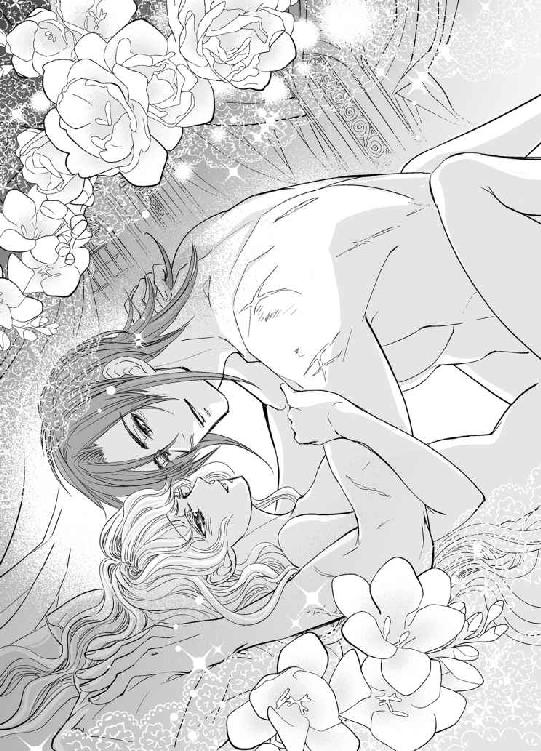

| 戦神皇帝の初夜 姫は異教の宴に喘ぐ (蜜猫文庫) | |
| 藍杜雫 | |
| 竹書房 (2015) | |
この作品は縦書きでレイアウトされています。
また、ご覧になる機種により、表示の差異が認められることがあります。
一部の漢字が簡略字で表示されていることがあります。
イラスト／ＤＵＯ ＢＲＡＮＤ．
プロローグ 死の皇帝は首なし姫に跪く
黒衣の異教徒の夢をいまだに見る。
大きな鎌の刃がきらめき、死を覚悟した瞬間を──。
あの日、王女リヴェラは一度死んだ。
『首なしの姫』──そう呼ばれるようになった所以だった。
エスト王国の四番目の王女は首なしの姫。
城での扱いは存在しないに等しく、求婚者もいない。
そう言われてすでに久しいというのに、これはいったいどういうことだろう。
背が高く、軍装を纏う皇帝が、いまリヴェラの前に跪いている。そんな状況に、リヴェラはとまどっていた。城の大広間の隅で。
「おまえは俺の花嫁だ。いっしょにアスガルドに来い」
そう言って、黒衣の皇帝はリヴェラの手の甲にうやうやしく口付ける。
下から見上げるまなざしは鋭く、獲物を狙うよう。
怖い。そう思うと同時に、リヴェラの鼓動はときめいていた。
当然だろう。リヴェラは最近ずっと男の人と触れたことがなかったし、ましてや自分が求婚されることは、もう二度とないと思っていた。
──自分は首なしの姫なのだから。周りからは忌み嫌われているはず。
なのになぜ、アスガルドの皇帝はリヴェラなんかに跪いて、求婚しているのだろう。
どう考えても奇妙としか思えない状況に、リヴェラはすっかりとまどった。
──これは、なにかのお芝居？ それとも策略なの？
リヴェラは深い海のような藍色の瞳で、じっと跪く皇帝を観察した。
あらためて間近で見ると、皇帝の顔は捕食動物のような鋭さを放ちつつも、整っていて、格好いい。さらりと流れる髪は鴉の濡れ羽色で、どこかしら色香を感じさせる艶やかさが漂う。それでいて、凜とした姿に畏怖を感じる理由ははっきりとしていた。
右眼を覆う眼帯のせいだ。
黒革に銀の点描で渦巻き文様が描かれた眼帯は、異様に見えた。一方で、左目は綺麗な青灰色だ。その透きとおる瞳に見つめられると、恐怖が遠のき、頬が熱くなる。
どきどきと速まる胸をこぶしで押さえて、リヴェラは声をあげた。
「手を離してくださいませんか、皇帝？ わたしには皇帝に跪かれる理由がありません」
「おまえになくても、俺にはあるから問題ない......首なしの姫」
皇帝の片眼は、意味ありげな視線を送ってよこす。さっと頬が熱くなる。『首なしの姫』と呼ばれたことにも、まるでわかっているぞと言わんばかりのまなざしにも。
確かにリヴェラは、ずっとグエンのことを見ていた。
これだけ大勢の人がいるのに、気づかれていたのだろうか。
ずっと見つめていたのは、リヴェラではないというのに。動揺のあまり真っ赤になって、手をひっこめようとしても、皇帝は強い力で摑んでいてどうにもできない。
「ふ、ふざけないでくださいっ......ませんか？」
声を荒らげてしまい、国賓に対する態度ではないと、途中で我に返った。語尾だけとりつくろい、引き攣った笑顔を浮かべて手を引っ張る。その動きに怒りを滲ませたつもりだったのに、どういうことだろう。さわりと手の甲を、親指の腹で撫でられた。手袋の上からだというのに、ぞくりと得体の知れないざわめきが背筋を走る。
「ふざけてなどいない。昼間の会議で、西方五王国の王族から、妻をもらう気はないかと持ちかけられていてな......おまえを娶ることに決めた」
「は......？ え、な......なんですって？」
今度こそ、リヴェラは自分がもてなす側の国であることを忘れて、茫然と固まってしまった。
第一章 黒衣の皇帝との夜の秘密
死と戦いなんて、まるでこの世に存在しないみたい──。
リヴェラは夜会が開かれる大広間を目の当たりにして、その煌びやかさに圧倒された。
天井からは大きなシャンデリアが幾千、幾万のクリスタルが光を放つ。
植物の形を模した燭台に、花をテーマにした床の石組みの模様。
「この床は、花が咲いているように見えますでしょう？ わが国自慢の大広間ですのよ」
リヴェラは子どもの頃から言い慣れた口上を、自分が案内してきた大使に披露する。
「おおっ......確かに......これは素晴らしい！」
絶句したように言葉を詰まらせる老年の大使を見て、王女として満足げに微笑む。
階段の上から見ると、大きな花の上で、盛装した人々がダンスを踊り、花の上にまたドレスの花が広がっているように見える。華やかな光景に、リヴェラも胸が打たれて、言葉を失ってしまいそうだった。
──浮かれて、我を失ってはダメ。ほんのひとときとは言え、わたしはもてなし役なんだもの。
灰金色の髪をおとなっぽく結いあげていても、一房垂らした髪にはいつもの髪飾りをつけていた。楕円の髪飾りが肩の辺りで揺れるのを見て、リヴェラは少しだけ落ち着きを取り戻す。
──久しぶりに纏う夜会用のドレスが、重たく揺れるのがくすぐったい......。
ゆっくりと深呼吸したリヴェラは、盛装にふさわしく背筋を伸ばして、老大使を大広間に招きいれた。
現在、エスト王国では国際会議が開かれている。
西方五王国と言われる、古くからエスト王国とつながりが深い国々と、アスガルド帝国を含め、周辺国が三カ国、計八カ国が参加している。
昼は会議が行われ、夜には盛大な舞踏会を開く。
それが国際会議での通例であったけれど、関係国の王族や高官が多数やってきて、どうやらもてなしの手が足らなかったらしい。首なし姫でもいないよりはましと、珍しく表舞台の舞踏会へと引きずり出されたのだ。
戦争の後処理という、死と戦いのための会議でありながら、こんな華やかな舞踏会が開かれるなんて──。
リヴェラは感嘆のため息を吐いて、久しぶりの表舞台の眩しさに目を細めた。
舞踏会は国際会議の主催として、エスト王国の威信をかけた壮麗さだ。
エスト王国は決して大国ではない。ただ、婚姻による同盟を強化し、得意の外交で西方五国のなかに確固たる地位を築いてきた。
ぴかぴかに磨きあげられた大理石の床や、無数に飾られた燭台に灯りを反射させる銅板の輝きに、外交相手が無数に集まる場で、他国に引けを取るわけにいかないという意地が感じられた。
ため息が漏れる美しさは、しかし儚い。この舞踏会の壮麗さは、当然のように一晩で消え去る。けれどもそれ以上に、リヴェラにとっては過ぎた夢だった。たとえどんなに着飾ったとしても、首なし姫の自分が、この場に不似合いなことはわかっていた。
「では今宵、エスト王国の舞踏会をお楽しみくださいませ」
担当の国の老大使の手を取り、広間をひととおり案内したところでお役ごめん。リヴェラはひっそりと壁に張りついた。兄王子をはじめ、親族たちから苦情を言われないように。
──ダンスを見ているのは楽しいのだけれど、どのくらい時間がたったら、ひっそりとこの場をあとにしてもおかしくないかしら。
まだ夜会は始まったばかりだが、リヴェラはもう大広間から抜け出す算段を頭のなかで考え始めた。壁際で目立たないように、視線をふせる。そうやって人との関わりを避けて音楽を聴くふりをしていると、ざわめきが近づいてくることに気づいた。
──なんの......ざわめき？
気を惹かれて、ふと顔をあげたのが運の尽きだったのだろうか。
「ねぇ、見て。アスガルドの皇帝がこっちに来るわ......」
そんな声に視線を向けると、この国際会議でもっとも注目を集める姿が見えた。
アスガルド帝国皇帝──グエン・ユーグ＝アスガルド。
漆黒の軍装は、華やかな服装をする人々のなかでは異彩を放っていたが、凜々しい姿は居合わせた貴婦人たちの視線を惹きつけていた。
襟や袖の折り返しに銀糸の縁飾り。肩章に、アスガルド国内での出身部族をあらわす民族的な刺繍飾りを垂らしている。肩にかかるかどうかという黒髪はサラサラと流れて、綺麗な艶を放っていた。
その右目には黒い眼帯。
雅やかな人々の目にどれだけ奇異に映るのか、想像もできない。ことに西方五王国の王族とおぼしき人々は、顔を近づけてはひそひそと詮ない噂話をして、眉をひそめていた。
「あの眼は敵を殺すのと引き替えに戦で失ったのだとか......」
「いやいや。私は帝国が信仰する片眼の神に戦勝を祈願するために自ら捧げたのだと聞きましたよ？ まるで蛮族の風習ですな」
揶揄されている言葉にどれだけ真実が含まれているのかどうかは、誰も知らない。
皇帝に興味を持ったとある令嬢が、戯れを装い、グエンの眼帯をはずそうとしたところを、偶然リヴェラも見ていた。
「わたくしに、そのお顔を見せてくださるでしょう？」
自分の我が儘を聞いてくれて当然とばかりに甘えた声を出して、皇帝の右目にたおやかな手を伸ばしたところで、ぱしりと鋭く払われた。
「ああ、悪いな......うるさい小蠅が飛んできたかと間違えた」
そんな揶揄とともに睨みつけた皇帝は、誰もがごくりと生唾を飲みこむほどの畏怖を漂わせていた。拒絶された令嬢は皇帝の冷ややかな言葉に泣いてしまい、しゃくりあげながら休憩用の応接室に下がっていったけれど、リヴェラは同情する気にはなれなかった。
──だって、由来を聞くより早く、眼帯を取ろうとするなんて、どう考えても失礼だものね。
心のなかだけで呆れていたけれど、リヴェラ自身、好奇心が疼いていた。
だから、令嬢が手ひどく振られてひっそり喜んでしまったのは、失礼だから当然と思う以上に、どこか嫉妬めいた気持ちがなかったとは言えない。
もちろんリヴェラは、皇帝と直接話したことはないし、ただ見ているだけだ。
それでもどこかしら心惹かれる男性が、ほかの綺麗な娘になびかないでくれて、安堵する勝手な自分を自覚していた。
──ただ、なんとなく、気になっているだけよ......。
自分にそう言い聞かせながらも、ふと気づくと、皇帝の姿を目で追いかけてしまっている。
大広間に大勢いる人々のなかで、笑顔を浮かべていない顔が異質で、どこか自分と重なって見えるからかもしれない。人々が談笑するなかに紛れこみながら、本当は首なし姫として忌み嫌われている自分とどこか似て見えるのか。
社交辞令のダンスの誘いをずっと断りながら、リヴェラはひっそり皇帝を観察する。あいかわらず遠巻きに秋波を送られているけれど、最初の娘が断られて以来、グエンの眼帯に手を伸ばすどころか、会話でも触れるものはなくなったようだ。
当然だろう。そうリヴェラは思う。
黒髪に黒い眼帯、しかも漆黒を全身に纏い、冷ややかな表情で颯爽と歩く。
彼はこの会議にやってきた、どの人々とも違っていた。
エスト王国と国境を接する国の、雅やかな王族たち。それに準じて落ち着いた雰囲気で振る舞う外交官たち。彼らの笑顔は偽善的であったものの、それはいつものことだ。お互い承知の上で偽善の仮面を被り、型どおりのやりとりをする。
ところが皇帝だけは違った。
はじめてエスト王国の宮殿に足を踏み入れた瞬間から、型どおりのやりとりから外れていた。
黒い軍服だけでも、雅やかな盛装をした人々のなかでは充分浮いているというのに、偽善の笑みをも浮かべていない。黒を基調とした軍装の長上着に、銀糸の縁飾り。立襟のマントを左肩だけにかけて、肩で風を切るようにして、車寄せから歩いてきた。
たったいま、敵を斬り倒してきたばかりだと言われても、リヴェラは信じただろう。その姿はいまだ戦場に心があり、死の空気を身に纏っていた。会議に際して剣を預けるのに、いたく不満そうな顔をしていたのを、リヴェラははっきりと覚えている。
そんな人がなぜ、リヴェラに求婚するのだろう。
「おまえは俺の花嫁だ。いっしょにアスガルドに来い」
そう言って、大広間の壁際で皇帝が跪き、リヴェラの手の甲に口付けた。
──なにかの人違いじゃないかしら。
リヴェラはとまどうあまり、言葉が出てこなかった。
ありえないと思いつつも胸はときめいて、下から見上げてくる皇帝の瞳に、深い海のような藍色の瞳が釘付けになってしまう。
──ずっと見ていたのを気づかれていた？ でもまさか......。
動揺に身じろぎすると、髪飾りが揺れて光を弾く。その光に眩しそうに目を細める皇帝は、これが余興だと笑って、なかったことにするつもりはないらしい。もとからそんな雰囲気はなかったけれど、目立ちたくないと思っていたリヴェラは、心のどこかで戯言だと終わってくれることを期待していたのだ。
「お前の国をはじめ、わが帝国と縁続きになりたい国が数多くいるようだから......誰かひとりをということでおまえを花嫁にすることにしたのだ」
そんな言葉を端的に言われ、「ああ、なるほど」と少しは腑に落ちた。
その相手がなぜリヴェラなのだろうと疑問は浮かべたけれど。リヴェラのとまどいに回答が得られないうちに、また周囲のざわめきが大きくなる。なんだろうと思うまもなく、ひとりの青年が口を挟んできた。
「グエン皇帝、あなたは籤引きでもして妻を決めたのか？ リヴェラ姫に失礼だろう。その、求婚するのに〝首なしの姫〟などと言うなんて......」
そう言う自分はどうなのだ。と思ったけれど、隣りに立った人を見て、リヴェラは視線をふせた。エストの隣国バーゼルの王子ハインリヒだ。
「久しぶりだね、リヴェラ。元気だったかい？ モーリンのところに来ても、なかなか会う機会がないから......」
やさしく話しかけられても、リヴェラはなんて答えたらいいかわからなかった。
灰金色の長い髪を髪飾りとともに揺らして、困惑の表情で隣国の麗人を見上げる。
話すのは八年ぶりだ。華やかな笑顔はまだ少年の頃から変わりない。
長い金髪を肩まで垂らした麗しい青年──ハインリヒはリヴェラの元婚約者だった。
親同士が生まれた頃から決めた相手だけれど、兄のように慕っていた。
リヴェラはよく覚えている。
あの日も、ハインリヒに会いに行くところだった。
† † †
あれはリヴェラが十歳のときだ。
隣国の王子ハインリヒのところへ遊びに行く途中、山間の街道で馬車が何者かに襲われた。ハインリヒは当時リヴェラの婚約者で、遊びにおいでと招待されての旅だった。
やさしくてきれいなハインリヒ。まだ恋でも愛でもなかったけれど、招待されたことが子ども心にもうれしくて、リヴェラはとてもはしゃいでいた。その浮き立っていた気持ちが、一転して恐怖に変わった。
馬のいななきがまるで、誰かの悲鳴のようだと思ったことを覚えている。突然、馬車が速度を速め、警護の衛士が怒号をあげた。続けざまに響くは、剣を打ち合う音だ。
なにか予期せぬ事が起きたに違いない。
お付きの侍女と顔を合わせるだけで事態を悟り、揺れる馬車のなかで座席に必死で捕まり耐えていた。ところが、途中でどこかに頭を打って気を失ったらしい。
気づいたときには祭壇のような場所で、両手両足を拘束されていた。
高い天井から光が降り注ぎ、広い空間に絶えず祈祷の、歌うような声が響く。
見知らぬ場所ではあったものの、天井に近いところに飾られた彫像を見て、ここが異教の寺院だとわかった。
壮麗な装飾は見慣れないものばかりだったが、その細かさに圧倒される。壁一面を覆うタペストリーは、この寺院に伝わる神話だろうか。戦いの場面が、精細かつ活き活きと描かれていた。一段と高い処にある彫像は、彼らがあがめ奉る最高神だろう。
片眼を眼帯に隠し、八本脚の馬に乗っていた。
その像を見て、お伽噺のように読んでいた異教の神々を思い出した。
「片眼の神──!? な、に？ なんで......？」
わけがわからなかった。エスト王国にはこんな寺院はない。異教徒がいないわけではないが、異教の、こんなにも大きな寺院は存在しなかった。リヴェラの乏しい知識でははっきりわからなかったが、おそらく隣国バーゼルにもないはずだ。
「つまりここは、エストでもバーゼルでもない......？」
力なく呟いたところで、ふっ、と風が起こり、翻ったのは細く赤いリボンだ。その鮮烈な赤い残像を目で捉えて、さっと血の気が引いた。
首に巻かれた赤いリボン──それは異教の神に捧げられた生け贄の証だ。
震える体が自由にならないながらも、首だけ動かして寺院のなかを見ると、異教徒の姿が見えた。全身を黒衣で覆い、大きな鎌の刃を研いでいる。その大きな鋭い刃を見て、リヴェラはゴクリと生唾を呑みこむ。
──わたし、殺されるの？
ぞくりと言葉にできない恐怖が、背筋を走った。
『異教徒は、戦いの勝利を祈って、生け贄を戦いと死を司る神に捧げる......』
本で見た知識が頭のなかによみがえる。同時にリヴェラの体に冷たい汗が噴き出す。
異教の神を信奉しているアスガルドは、このところずっと戦争をしていた。だからこそ、こんな祈願をしていて、その生け贄にどういうわけか、リヴェラが選ばれた──そういうことだろうか。
リヴェラが祭壇の上で状況を把握しようと、限られた視界を見渡して、考えているうちに、鎌の刃が満足いくまで研ぎ終わったらしい。歌うような声が高まり、儀式が最高潮を迎えたことを伝える。
同時にリヴェラは恐怖した。
「や、やだ......わたし......助けて......！」
必死に命乞いをしたけれど、あまりの恐ろしさに、かすれた声しか出ない。
そんな訴えは、もちろん聞き届けられるはずはない。
すぐそばで大鎌を持ちあげられ、三日月型の刃が、鋭く残忍な光を放った。
体ががくがくと震え、囚われているからというだけではなく、力が抜けてしまった。もう逃げられない。逃げる力もない。
「我らが最高神、戦いと死を司る片眼の神にこの娘を捧げます──」
祭司の呟きが、やけにはっきりと耳に入ってきた。ただ、振りあげられた刃が天窓からの光に閃光を放ち、振りおろされるのを見るだけ。
まるで時間がゆっくりと動くように刃が風を切るのを、藍色の瞳を瞠って──。
──リヴェラは死が近づくのを見た。
そこから先の記憶が、ふっつりとリヴェラにはない。
気づいたときには街の宿で寝かされており、見慣れた侍女と旅の騎士が話をしていた。
リヴェラが目を覚ましたことに気づいたのだろうか。振り向いた騎士の目が黒曜石のように真っ黒だったことだけが、酷く印象に残っている。
──アナタハ、ダレ？
リヴェラの唇がそう動こうとしたところで、騎士は去ってしまった。
動かないまま、寝具に横たわった体に、侍女がわっと泣きながら抱きつく。
「姫さまが無事でよかった......！」
その言葉には悲痛な響きが籠められていた。
リヴェラは子どもだったからよくわからなかったけれど、侍女の嘆きようから死人が出たのは間違いない。生き残った馭者と衛士は大怪我をしたが、侍女のテッサは打ち身程度で助かったのだと言う。
そうまでして得た生け贄なのに、どうして生きているのだろう。
そんな疑問が表情に現れていたらしい。
寺院を訪れた信者のひとりが、命乞いをしてくれて助かったのだと聞かされた。
「まさか......そんな、なんでわたしが......？」
それはリヴェラにしてみれば当然の疑問だったけれど、答えはない。
茫然自失の態でベッドに手をつくと、髪が揺れ、肩に硬いものが触れた。
「あら、姫さま？ その髪についてるのは......飾りですか？」
侍女テッサの言葉に手を動かすと、髪の一房をまとめるように、銀の髪飾りがついていた。渦巻き模様が装飾された楕円の髪飾りは、アスガルド帝国の装飾品だ。エスト王国のものじゃない。
「まぁ......寺院でつけられたのかしら、外しましょう、そんなもの」
テッサが手を伸ばすのに、リヴェラはとっさに抗った。
「これは、ダメ！ 触らないで！」
「姫さま？ でも、生け贄にするためにつけられた装飾なんて......」
侍女が不安そうな顔になるのを構わず、リヴェラは小さな手で髪飾りを握りしめた。
なぜだかはわからない。この髪飾りは取られてはいけない。そんな気がしたのだ。
結局、テッサが折れて、リヴェラのささやかな我が儘は許された。
やさしい侍女テッサ。彼女は怯えるリヴェラを抱きしめてくれたけれど、城に戻ってすぐ身のまわりからいなくなった。他の親しい召使いたちもみんなそう。
何人かは異母姉モーリンの侍女となり、何人かは城を去ったのだと言う。
「見て、〝首なし姫〟よ......異教徒の生け贄にされたなんて......」
いままで仲良くしてくれていたのに、リヴェラに蔑みの目を向け、離れていく人々。
「おまえなんて、もう私の娘じゃありません！ 王族の恥さらしだわ」
母親から突きつけられた絶縁の言葉。
そしてリヴェラは十歳にして、いままで手にしていたすべてを失った。
親しい侍女、王女としての地位や捧げられる尊敬。父母の愛。
──なにも持たない自分なんかに、求婚する人がいるはずはない。親しいと思っていたハインリッヒだって、婚約を破棄してきたのだから。
それは『首なし姫』となったリヴェラにとって、現実だった。現実のはずだった。
舞踏会の場で、皇帝グエンに跪かれて求婚されるまでは──。
† † †
夜会の翌朝、リヴェラは好奇の視線に晒されながら、廊下を歩いていた。
二日続けて人前に出るのは、何年ぶりだろう。華美でないながら、きちんとした正装のドレスは、呼びに来た侍女が着付けてくれた。普段、リヴェラの周りには侍女がいないからだ。
まるで広間のように大きな廊下の隅には、声を潜めて話す姿があちこちに見える。
「なぜ、アスガルドの皇帝は首なし姫なんかを......」
そんなことはリヴェラだって聞きたい。
無数に人が集まっているなかで、よりにもよってなぜ自分を選んだのだと。
唇をきゅっと引き結び、うつむきがちに足を速める。うつむくことで人々と視線を合わせなくてすむし、正装をしていても身につけたままの髪飾りが目に入って、少しは気が落ち着くからだ。
そうやってリヴェラが無視を決めこむせいで、なおさら人々はあてつけようと声高になるのだろうか。ちらちらリヴェラを見ている人々は、またしても皇帝の求婚に関する話を聞こえよがしに口にする。
「皇妃と言っても、体のいい人質だろう。その点、一度は異教徒にさらわれた娘なら、西方五王国と戦争をするときには、簡単に切り捨てられて都合がいいのでは？」
「きっとそうだな。しかし異教徒と言えば、首なし姫がさらわれたのはアスガルド帝国の国教の一派だったのでは？」
そんな話が耳に届いて、リヴェラはなるほどと思った。
──口さがない人々の噂も、ときには役に立つものね。
腰に下げた扇を取りだし、表情を隠しながら口元にかすかな笑みを浮かべた。
──戦争をするときには、簡単に切り捨てられて都合がいい。
そういうことなら理解できる。
アスガルド帝国にとって価値がない人質が欲しいのなら、リヴェラのような首なし姫のほうがいいだろう。そこまで考えたとたん、唐突に昨夜のことを思い出してしまった。青灰色の瞳がリヴェラを見上げて、思惑ありげに閃いた瞬間を。
この娘を娶れば、戦争でアスガルドが有利になる──あの瞳は、そんな意味だったのだろうか。さわりと誘いかけるように、手の甲を撫でたのも。
「ううん、違う......あれは、多分、女遊びに慣れている人なら誰でもよくやるのよ」
リヴェラはいつもの癖で髪飾りを指に弄びながら、囁くような声で呟いた。
自分だけに特別にしたわけではない。アスガルド皇帝グエンのことはよく知らないけれど、そう思うことにした。考えごとをしつつ歩くうちに、廊下の奧に、重厚にして大きな扉が見えた。そこで一度、深呼吸をする。
たとえなにも持たない『首なしの姫』であっても、卑屈になるのはリヴェラは嫌だ。だから、扉を守る衛士に目線を向けて、毅然とした態度で告げる。
「リヴェラが参りました。陛下にお取り次ぎください」
すると、衛士は扉の内側にいる文官に、リヴェラの王への拝謁を取り次ぐ。許されてなかに入ると、父王は渋面で出迎えてくれた。
「なんでおまえなんかを指名してきたんだ？」
これが求婚された自分の娘に、開口一番に言う台詞だろうか。
リヴェラは半ば冷めた気持ちで、執務室の奧で机に肘を突いて座る父王を眺める。
飾り格子の施された釣り鐘型の窓を背に、老年にさしかかった王は毛皮に身を包み、高い背もたれがついた椅子にどっしりと腰かけていた。
「わたしにはわかりません。陛下がお話を持ちかけたわけではないのですね」
リヴェラが父王をあえて『陛下』と呼ぶのは、衛士の前だけではない。首なし姫と呼ばれるようになって、『お父さま』と呼ぶのを禁じられてしまったからだ。
まだ十歳だったリヴェラには、突然、父親がそんなことを言い出したのか、よく理解できなかった。けれども、「どうして？」と疑問を口にしたところで、答えはない。だから、言われたとおりに『陛下』と機械的に呼んだ。そうすればまだ、父親の機嫌が悪くなることはなかったから。
いまもそう。父親は苛立ちととまどいが入り混じった声で話しているけれど、このしかめ面でさえ、リヴェラが『お父さま』と呼ぶよりは、ずいぶんましな表情のはずだ。
エスト王国の王は、話をするというのに、どうやらリヴェラと視線を合わせるつもりはないらしい。部屋の隅に視線を走らせ、大きなため息をついた。
「なぜおまえを娶る理由がある......あの皇帝はまた戦争を始めるつもりなのか」
軍事国家として名高いアスガルドは西方五王国にとっては脅威だ。それでいて、東方から迫る蛮族に対しての守護の要でもある。弱くても困るし、強すぎても困る。そんなわけで、エスト王国をはじめとする近隣の国々は、常にアスガルドを意識していた。
今回の国際会議の議題も、アスガルドの軍事力について、必ず言及があったはずだ。東方からの大規模な遠征があり、西方五王国のひとつ、サーウィンは大きな被害を被ったけれど、アスガルドが参戦したことで、さらなる侵攻は防ぐことができたのだ。
サーウィン国はともかく、他の国々は自国に被害が及ばず戦争が終わり、ほっと胸を撫でおろしたことだろう。
リヴェラは心のなかだけで色々なことを考えたけれど、賢明にも言葉にはしなかった。
「おまえのことは明日の議題に乗せることになるだろうが......特に拒否する理由はない。せいぜい皇帝に気に入られるように振る舞うんだな。あるいは皇帝を籠絡して、思い通りに言うことを聞かせられるなら、なおいい」
「籠絡......ですか」
──色仕掛けで、皇帝を虜囚にしろということなのかしら......。
リヴェラはとまどいながらも、父王から言われたことをよく考えた。
「皇帝にとって、おまえが価値ある妻となれば、戦争が起こっても、すぐにおまえの命を奪うようなことはあるまい。自分自身の延命のためだと思ってやれ」
──自分自身の延命のため......？
それは結婚する娘に告げるには、ずいぶんと奇妙な言葉に聞こえる。
けれども父王は、リヴェラの逡巡など取るに足らないとばかりに、突き放した物言いで最後通牒を渡した。
「アスガルドの帝都までは遠いから、あるいは会議が終わったときに、おまえを連れて帰るかもしれない。身支度ぐらいはしておくように」
それで話は終わりだとばかりに、王の執務室から追い出された。しかし、どう考えても、いま聞かされた言葉は釈然としない。
たとえば、父王はもしアスガルドと西方五王国が戦争状態になったら、簡単にリヴェラを切り捨てるのだろう。同じように、アスガルドの皇帝だって、リヴェラなんかを気にかけるわけがない。
──つまりわたしは人質同然の妻で、しかも人質としての価値はあまりないわけね......。
父王から言われた言葉をそう結論づけてみたところで、ふと手の甲に、皇帝グエンから撫でられた感触が甦った。さっと頬が熱くなる。一瞬立ち止まって震えそうになり、誰かの足音ではっと我に返る。
──こんな廊下で、感情をあらわにしてはダメ。
リヴェラは心のなかに沸き立つ感情を抑えて、無表情の仮面を被った。
その一挙手一投足を、廊下の外から黒い影に見られているとも知らないまま──。
自分の部屋に戻って、リヴェラはなにが起きているのかを考えた。
眉間に皺を寄せ、髪飾りがついた灰金色の髪をくるくると指に巻きつけてはゆるめ、王の言葉を吟味する。
おそらく今回の国際会議でアスガルド帝国は、西方五王国からどこかの国の王族と血縁になるように圧力をかけられたのだろう。
もちろん、このところの帝国の勢いを考えれば、跳ねつけることは簡単なはずだ。ただ、本当に自分の妻──皇妃になんの興味もなく、噂されていたように、必要があればすぐ切り捨てられるなら、どこの国から娶っても構わない。皇帝はそう考えたのかもしれない。
会議が終わるのは、一週間後だ。
一国の王女が嫁ぐ準備をするのに、充分な時間とは到底言えない。
「とは言え、わたし自身の持ち物なんて、いくらもないのよね」
リヴェラは飾り気のない部屋を眺めて、呆れたため息をついた。
父王との謁見のあと、リヴェラは正装のドレスを主棟の侍女に手伝ってもらって着がえた。いまはいつもの簡素なドレス姿だ。貴族の娘らしく見える程度の装飾はついているものの、ひとりで簡単に脱ぎ着ができる。
そのドレスをふわりと広げて、リヴェラは絨毯の上にぺたりと座りこんでいた。もちろん、王女としてふさわしい振る舞いではない。けれどもトランクを床に広げて中腰で作業するのは難しく、リヴェラはひととき礼儀を忘れることにした。
「アスガルドはエストより寒いんだし、冬物を持っていったほうがいいかしら」
うーんと、しばし首を傾げてから、頑丈で大きなトランクを引っ張り出してくる。持っていくものを考えてから詰めたほうがいいだろう。リヴェラは服を選び、ベッドの上に並べ始めた。
「花の種を......持っていくのはどう？ わたしの部屋の飾りと言ったら花だけなんだし」
ひとり言を呟いて、部屋をぐるりと見渡す。
首なし姫と蔑みの言葉を叩きつけられ、王女として暮らしていた部屋を追い出されたあとは、宮殿に奥に建つ離れでひっそりと暮らしてきた。
流行りの画家が描いた肖像画もなければ、煌びやかなシャンデリアもない。かろうじて王族の体裁を整えられる程度のドレスは与えられていたものの、着付けをしてくれる侍女がいないから、普段は簡易なワンピースを着ているだけだ。
とはいえ、リヴェラはもう質素な暮らしに慣れきってしまっていた。
「だって、食べ物には困らないし、住む場所はあるし、服だってあるんだもの」
強いて言うなら、足らないものは話し相手だった。
知識が欲しければ、図書館がある。城の蔵書は無数にあり、黙って読む分にはなにも言われなかった。家庭教師に学んでいる姉弟が羨ましくて、ひっそり勉強部屋のクローゼットに忍びこんだこともある。
でもそれでも充たされないのは、ほんのちょっとした話題を交わせる友人だった。
唯一まともに口を聞いてくれる庭師は寡黙な男で、庭仕事に関わることでないとあまり会話をしてくれない。それで彼がやっていることに質問しては返る言葉を楽しむうちに、リヴェラは自然と老年の庭師がしている仕事に、興味を持つようになっていた。
庭仕事を手伝うのは楽しい。
体を動かすのは気晴らしになるし、少しは会話もできる。
もちろん、いくらほとんど顧みられない首なし姫とはいえ、王族の一員が庭仕事をするというのはあるまじきことだ。それはリヴェラにもよくわかっていたから、決して人に見られないように注意はしていた。それでも、庭師が働き者の妻と暮らす家をこっそり訪れたり、その裏の畑を見るのは楽しかった。
宮殿のなかには、いくつかこうした使用人が住む家がある。
華麗な王宮の背後に続く森には森番が、薬草を育てる畑を守るもの、門の横にふたつ立つ門番の家。
宮殿を出入りするときに絶対に見かける門番はまだしも、庭師や森番の家など、普通に王女らしく暮らしていたら、絶対に訪れることはなかっただろう。
──アスガルドの宮殿には、綺麗な庭や豊かな畑があるかしら......。
庭のことを考えると、侘びしい住まいが離れがたく思えてくる。
「でも庭はまた作ればいいわ......。やっぱり花の種は持っていこう」
慣れ親しんだ場所から切り離されることを考えると、胸が締めつけられる。自分がとても取るに足らない存在に思えて、いたたまれない。
なのに、気分が塞ぎそうになると、まるで幻聴のように暖かな声がする。
──一度死んだ身なんだ。生きているなら、なんだっていいじゃないか。
誰が言った言葉なのか、リヴェラはよく覚えてない。どんな声で言われたのかも、わからない。
ただ、呆れたような響きのなかに、不思議な死生観に根ざした強い信念を感じとっていた。びくともしない大岩のように、その言葉は、子ども心にしっかりと根付き、心が揺らぎそうになるたびに、ふとよみがえっては支えてくれる。
大きくなって思い返すと、殺されそうになった子どもに言うには、ずいぶんな楽観主義だ。
それでいて、身内をはじめ、いままで自分をもてはやしていたものたちから忌み嫌われたときに、心が耐えられたのは、その楽観主義のお陰だろう。宮殿から追い払われるようにして去ることになりそうないまも。
「だってわたしは、一度死んでいるのだものね」
──だから、なにがあっても平気。
ふふっと笑って口にすると、見知らぬ国に出かけることが、楽しみになってくるから不思議だ。それでもリヴェラはベッドに倒れこみ、少しだけ泣いた。
たとえどんなに見知らぬ国に興味が湧いても、リヴェラはこの宮殿からほとんど出たことがない。ましてや、死の皇帝と畏れられる男に嫁ぎ、いつ見捨てられるかわからない妻になるなんて、恐いに決まっている。
「だけど......行くしかないんだわ......」
枕を抱きしめて伏せっていると、いつのまにか眠ってしまったらしい。
ふと気づくと、部屋は暗くなっていた。
「ん......あれ？ いま、何時かしら」
急に暗闇に目覚めて、リヴェラはとまどった。
幸い、バルコニーに続く壁一面の格子窓にはカーテンをかけてなかった。月が出ているのだろう。石造りのバルコニーは仄白く耀いて、部屋のなかまで明るく照らしていた。
「夕食を食べ損なってしまったみたい......」
お腹が空いていることに気づいて、軽くため息を吐く。
リヴェラが住んでいる離れは、主棟から離れた場所にあり、食事はわざわざ使用人が届けにやってきていた。火をつけるのも自分でやらなければならないけれど、自分で温め直せるシチューのような食事だといい。そんなことを考えながら、リヴェラがランプを取るために立ち上がった、そのときだ。
カタリと、風にしては不自然な音が聞こえ、心臓が跳ねた。
はっと足元を見れば、窓から差しこむ月明かりに、黒い影が伸びている。
「だ、誰......!?」
うわずった声をあげて、リヴェラは後ずさりした。
──人影だろう。奇妙な形をしているけれど......。
叫び出したい心地をどうにか抑えて、冷静に考える。
まるでお伽噺に出てくる異形のようだ。一瞬そう思ったことは、考えないことにした。
格子窓がわずかに開いている。さっき聞こえた音は、窓を開ける音だったに違いない。おそらくリヴェラは鍵をかけなかったのだ。宮殿の奧だからと油断しきって。
──人間なんだから......大男で大きな三角帽子でも被っているに違いない。
混乱に速まる鼓動を感じつつ、また一歩後ずさりする。すると、大きな頭のようだった影が動いて、膨らんだ。と思ったのも束の間、バササ、と重たい羽音がして、とっさに体は逃げ出していた。
──異形に、捕まってしまう！
慌てて踵を返したところで、あっというまに肩を摑まれていた。がしっとボレロのフェルト地ごとわし摑みにされる感触に、上着を着ていてよかったと思う。ところが、痛みを感じると身構えた体は、むしろのし掛かられた重さにこそ耐えられなかった。たまらず、リヴェラは体を折って呻く。
「......な、お......重い～！」
身を捩ったら最後、潰れる。床に這いつくばって異形に殺される。
混乱した頭を嫌な想像でいっぱいにしていると、バサリとまた羽音がして、
「クァ」
としわがれた声が一声。まるで獲物を捉えて勝ち誇ったように響いた。
大鴉の鳴き声だ。異形ではない。
「鴉？ なんで、鴉が、わたしの部屋なんかに......？」
啼き声から判断したものの、半分に体を折り、膝に手をついた格好では姿が見えない。とはいえ、襲ってくるでもなく、肩に止まられただけだとわかり、リヴェラは幾分、落ち着きを取り戻した。
「おまえ......ちょっとびっくりさせないで。重たいから、下りてちょうだい......わたしの力では、おまえを支えられそうにないわ」
そう言うと、肩の上で大鴉が身じろぎした。見えないのに、なぜか首を傾げた仕種だとリヴェラにはわかる。
──変なの......でも、なぜかしら。この鴉、怖くないわ。
リヴェラがじっと重みに耐えていると、大鴉はどうやら、訴えを聞いてくれる気になったらしい。バサッと羽音がして、肩から飛び立った。しかも勢いよく。
「わっ......ちょ......！」
変な姿勢を揺さぶられた形になり、リヴェラは大きくよろめいた。
──顔から床に倒れる！ 痛い！
そう思って反射的に目をつぶったのに、リヴェラの体は倒れなかった。銀の髪飾りがついた一房が、振り子のように揺れているだけで、大きな手で腰の辺りを支えられている。
「ふぇ？ な、なんで......？」
驚くあまり、変な声を漏らしたあとで、リヴェラの華奢な体を支える手が震えていた。
「く......くくくっ！ フギン、おまえを乗せるのはいやだとさ」
どうやらさっきの大鴉に話しかけているらしい。答えるように、「クァ！」と反抗するような鳴き声が響く。
「ずいぶんと賢い鴉だこと......お互いだけで会話してないで、わたしを立たせてくださらないかしら？」
リヴェラがむっとした口調で言うと、支えていた腕に体を真っ直ぐにして立たされた。その軽々とした動きに目を瞠る。リヴェラはほっそりとしているけれど、もう子供ではない。体重だって、充分あるはずなのに。
「ああ、こいつはとても優秀なんだ......こんな暗闇でも、ちゃんと目当ての場所に飛んでいけるしな」
男の褒め言葉に答えたのだろうか。大鴉は一度羽を広げ、すぐにたたむような仕種を見せた。
意外なことに、男の話し方に緊張や焦りはない。もし物盗りならば、住人に見つかって少しは慌てるのではないだろうか。
リヴェラは自分こそ落ち着かなくてはと、できるかぎりゆったりとした動きでランプに近づき、灯りをつけた。背の高い人影が仄明かりに浮かび上がるなか、また羽音がする。大きな羽を広げた影が動いて、体格がいい男の肩に止まった。
「あ、あなたは......アスガルドの皇帝......!?」
声が上擦るほど、リヴェラは驚いてしまった。
いったいなんで国の賓客がこんな辺鄙な場所にいるのだろう。
宮殿の敷地のなかでも、リヴェラが住む離れは、奧の森に近い。賓客が泊まる客室棟からは離れており、迷いこんだにしてもおかしい。
頭のなかで冷静に考える一方で、異形の化け物ではなかったと、ほっとしている自分がいた。
さっき窓の外に映る影を見て異形だと思ったのは、肩に羽根を広げた大鴉を乗せていたせいらしい。謎が解けて安心したところで、はっと我に返る。そういう問題ではなかった。むしろ、人間の男のほうが、誰かに見られたらまずいに決まっている。
リヴェラの父王は体面にうるさい。
いくら問題がある王女だとはいえ、こんな侘びしい邸宅に住まわせているという事実を他国に知られたくないはずだ。ましてや、アスガルド皇帝に見られたと知ったら、非があるなしに関係なく、自分を責めるかもしれない。それにいくら結婚相手になるかもしれないとは言え、未婚の王女のところに、夜のこんな時間に男がいるのも、問題がある。
リヴェラは王女として、精一杯の虚勢を張って告げた。
「なにをどう迷ってこの部屋に来たのかわかりませんが、いますぐ立ち去ってください。そうすれば、こんな遅い時間に女性の部屋に無断で入ったことは不問に付しますから」
この条件なら、悪くないだろう。挑戦的な目線を皇帝に向け、自分の鼓動がまた不規則に跳ねるのがわかった。
皇帝グエンはあらためて間近で見ても、背が高い。
しかも黒髪に黒衣という黒ずくめの格好は威圧感が漂う。ろくに男性と話したことがないリヴェラからすると、緊張してもおかしくはない。なのに、正体がわかってからは不思議と恐怖はなかった。
皇帝の立派な体軀のせいで、肩に止まった大鴉が、小さく見えるのがおかしいせいだろうか。物問いたげに首を傾げる仕種を見ると、大鴉がかわいく思えてくる。
おまけにリヴェラが笑いをこらえているのがわかるらしい。まるで、自分を笑うなとは言わんばかりに、「クァ！」と気取った声で鳴くから、今度こそリヴェラはぷっと噴き出してしまった。
「......まったく小憎らしい鴉ね。さっさと皇帝を連れて、帰ってちょうだい。誰かに見つかったら、困るの」
つい皇帝に対する敬意を忘れて、大鴉に話しかけてしまった。すると、なにを思ったのだろう。皇帝グエンはリヴェラの細い腕を摑んで、自分の体に引き寄せた。
「誰かとは......誰だ？ これからここに誰か来るのか？ バーゼル国のハインリヒか？」
「は？ なんでハインリヒが来なきゃいけないの？」
──いったい、皇帝グエンはなにを言っているの？
リヴェラのとまどいなど、グエンには関係ないらしい。
問いに答えず、細い顎に手を伸ばして上向かせると、有無を言わさず顔を近づけてきた。
「え......」
──闇が覆い被さってくるようだ。
そんなことを考えたのは、ほんの一瞬だった。
男女の経験がないリヴェラは皇帝の行動がなんなのか、理解していなかったからだろう。藍色の瞳を大きく瞠って、身じろぎひとつできなかった。
皇帝グエンを大広間で見ていたときは、しなやかな獣のようだと思い、精悍な強さばかりが印象に残っていた。なのに、息が触れ合うほど近くで見ると、違うところに目が行く。右眼を覆う眼帯より鼻筋が通っていることや、涼やかな目元が気になってしまう。端整な顔立ちだ。そうわかったとたん、頬が熱くなり、胸がときめいた。
昨日の夜、跪かれて求婚されたことがよみがえり、頭のなかが甘やかな熱に蹂躙される。
──あれは違うの！ 誤解しちゃダメ。いまのこれも皇帝の策略で......きっとなにかの罠なんだから......！
そう自分に言い聞かせるのに、皇帝の黒髪が頬に落ちてきて、鼻先が触れると、また大きく鼓動が跳ねた。ぐっと背中に回された手に、力を籠められる。
唇に、唇が触れた。
「ん......」
掠めるように触れられ、すぐに離れる。リヴェラが訳がわからず目を瞠っていると、グエンは首の傾きを変えて、ふたたび唇を塞いできた。さっきよりも強く唇を押しつけられ、リヴェラの軀はびくんと震える。
「んん......んぅ～」
息苦しさを感じて呻くと、髪をさわりと撫でられて、唇が離れた。息が楽になった。
はじめての口付けだった。
「なにを......なにを、して......」
リヴェラはわなわなと震えた。こぶしを握りしめて非難するような目を向ける。
「首なし姫は、キスははじめてと見える」
くつくつとのどで笑いを噛み殺すように言われ、リヴェラの顔が羞恥に赤く染まる。
非難に対する答えがこれか。相手が国の貴賓客であることを忘れて、反抗心が鎌首をもたげた。
──皇帝を籠絡して、思い通りに言うことを聞かせられるなら、なおいい。
父王の言葉がふっとよみがえる。相手のペースで事を進めてはダメだ。
十歳までとはいえ、リヴェラは外交を得意とするエスト王国の王女として育てられたのだ。こんなことで自分を失っていては、駆け引きなんてできるわけがない。
──冷静にならなきゃ......初心な王女なんて、きっと簡単に手玉に取られてしまうわ。
リヴェラは気づかれないように、ゆっくりと息を吸いこんだ。
「こんな、野蛮な訪問でキスされたのが、はじめてなだけですわ。未婚の王女を相手にする殿方は、皆さま普通、とても気を遣ってくださいますもの......わたしは皇帝に幻滅いたしました。手を放して、早くお立ち去りください」
挑戦的な言葉を吐くと、なぜだか自分でもその気になってくる。
──こうなったら、皇帝を籠絡するしかないわ。アスガルド帝国で伝説になるくらい、皇帝の寵愛を受けてやるんだから。
力ない手を男の胸に突っ張り、軀を引き離そうとするものの、背を抱く腕はびくともしない。
「〝未婚の王女を相手にする殿方〟だと──!? やっぱり俺がいなくなったあと、あの男を連れこむつもりなんだな？ 誰も求婚者なんていない振りをしながら......」
「だから、なんでハインリヒがここに来なくてはいけないの!?」
リヴェラは思わず強い口調で、突っこんでいた。
おかしい。ここでハインリヒが出てくるのもおかしいけれど、皇帝がまるで嫉妬しているような言葉を吐くのもおかしい。リヴェラはこの皇帝と初対面のはずだ。
それとも、単に自分に都合がいい結婚相手に過ぎなくても、男の影がちらつくのは許せないということだろうか。以前読んだ物語で、そんな自分勝手すぎる結婚相手の話があったことを思い出す。
──なんでこんな謂われもないことで、罵られなければならないの!?
軀がほとんど自由にならないながらも、リヴェラはじり、と後退りした。
「あの男と親しげに目線を交わしていたではないか。この俺が跪いてまで、おまえに求婚していたというのに」
勝手に跪いたくせに、どういう理屈だろう。ついまた突っこみそうに口を開いて、慌てて噤む。もちろん、跪かれて思わず見蕩れていたなんてことは、絶対に秘密だ。
そもそも、いくら元婚約者とはいえ、このところずっと公の場に出ていなかったリヴェラが、バーゼル国の王位継承権第二位を持つハインリヒと、親しくおつき合いしているはずがない。そう思ったけれど、エスト王国とバーゼル国のやりとりは西方五国ならいざ知らず、アスガルド帝国には知られていないのだろう。
「親しげにって......ただ顔見知りと話していただけですけど？ 舞踏会は社交の場ではありませんか」
ため息を吐いて、また一歩後退りする。
──嘘ではない......はずだ。すべてを告げていないだけで......。
そんな逡巡は、はじめから見抜かれていたらしい。グエンは俯くリヴェラの髪を触れ、髪飾りを弄ぶ。その指先にリヴェラが鼓動を速めると、皇帝はリヴェラがいま、あえて口にしなかった事実を突きつけた。
「でも元婚約者なのだろう？ おまえにとっては特別な男ではないか？」
「そ、それは......ご存じだったんですか......」
「当然だ。自分の妻となる女に、変な虫がついてないかどうか、気になるだろう？」
グエンの言葉には、どこかしら真剣な響きがあり、リヴェラはまた後ずさった。
──おかしい。むしろ変な虫がついているほうが、なにか問題が起きたときにわたしを見捨てやすいし、離縁だってしやすいはずなのに......。
皇帝にとって価値がない娘として選ばれた──それが首なし姫リヴェラではないのか？
そこでふと大広間でグエンに求婚されたときのことを思い出した。
あのとき、リヴェラは皇帝に跪かれ、衆目を集めていた。
壮麗な夜会が開かれた大広間。
その片隅とは言え、会議で注目を浴びている人物の一挙手一投足に、多くの人が注目していた。正直、いたたまれない。早くこの場から逃れたい。そう思っていたところに、ハインリヒまで加わり、さらに詮索好きな人々の視線を集める羽目に陥った。
金髪の麗しの王子さま、ハインリヒに憧れる女性は多い。
「見て、ハインリヒさまよ。あの金の髪......今宵もなんて耀いていらっしゃるのでしょう」
「金の王子は素敵ねぇ......一度はあの甘い顔を間近に見ながら、踊りたいわ......」
そんなため息まじりの声が、集まった娘たちから、さざ波のように聞こえてくる。
もちろん、リヴェラの異母姉モーリンが正式な婚約者となっているから、正妻になれる望みはもうない。それでも一度くらいは、ワルツをいっしょに踊ってほしいという目線を向ける女性がひっきりなしに、ハインリヒの様子を窺っていた。
女性からの秋波を自覚しているのかどうか。ハインリヒは甘やかな顔立ちに、耀かんばかりの笑顔をリヴェラに向けてくる。
「綺麗になっていて驚いたよ。まるで見違えたようだ」
ハインリヒはそう言って、リヴェラの手を取り、挨拶の口付けを手の甲に落とした。すると、どういうわけなのだろう。グエンが開いている方のリヴェラの手を摑んで引き寄せたのだ。儀礼的には、かなりありえない。しかも見上げると、嫌そうに顔を顰めている。
急に辺りの空気が、ひやりと冷たくなったようだった。
──いったいなんで、こんなことになっているのかしら......。
ハインリヒと背が高い皇帝グエンとに挟まれて、リヴェラは身を縮めた。
元婚約者とたったいま求婚して来たばかりの人と。
大広間の片隅で、なぜ、リヴェラはふたりの間に挟まれているのだろう。
しかも少し離れたところから、何人もの女性が、なぜあんな小娘が、あのふたりに囲まれているのだと言わんばかりの恨みがこもった視線を突き刺してくるのだ。居心地が悪いことこの上ない。リヴェラのそんな気持ちは、どちらにも伝わってないらしい。ハインリヒが、口付けたほうのリヴェラの手を引っぱり、皇帝を挑発する言葉を優雅に吐いた。
「皇帝よ、お遊びの相手なら、あの辺りにいくらでもいるではないか。戯れはそこまでにしていただこうか」
「〝戯れ〟？ お遊びなんかでアスガルドの皇帝が跪くとでも？ そちらこそ婚約者の姫君を放って、他の娘に目移りするのはどうなのだ。不謹慎だと思わないのか？」
またグエンがリヴェラの腕を摑んで引っ張る。
「ちょ、ちょっと......痛っ......」
大きな手のあまりの力の強さに、顔を歪めてしまう。
わけがわからない。アスガルドの皇帝もハインリヒも、リヴェラなんかに構う理由があるわけがない。しかもこんな衆目を集める場で。
リヴェラが完全に途方に暮れていると、涼やかな声が背後からかけられた。
「不謹慎だなんて......わたくしがハインリヒさまにお願いしたのですわ......リヴェラにも話しかけてあげてくださいと」
異母姉モーリンの声だった。
「お異母姉さま......モーリン......」
肩越しに振り返ると、広げた扇で口元を隠した貴婦人が見えた。ガウンを揺らして、金糸の刺繍を施した豪奢なドレス姿が、ゆったりと近づいてくる。
どちらかというとまだ子どもっぽさを残したリヴェラとは対照的に、デコルテは大きく開いて胸元には金剛石の首飾りを輝かせる、大人の装いだ。濃い亜麻色の髪を結いあげて、赤い唇が弧を描く様は、艶やかな大輪の花のようだと、リヴェラは思う。
可憐なドレスを纏うリヴェラと、大人びたモーリンとは正反対に見えるだろう。
けれどもリヴェラとモーリンはもともとよく似ていた。
髪の色がモーリンが濃い亜麻色で、リヴェラが灰金色だという違いがあるだけで、髪を帽子に隠してしまうと、ほとんど区別がつかないくらいだ。子どもの頃、一日入れ替わったことがある。モーリンは、リヴェラの母──王妃と礼拝に出かけたけれど、なにも疑われなかったらしい。
とは言え、いまとなっては、存在感がない『首なし姫』のリヴェラと、艶やかなモーリンを間違う人はいないだろう。
いまは自分よりも上位となるモーリンを立てて、リヴェラは軀を沈めて一礼した。するとモーリンは目下の者から挨拶されたことを了承したという証に、鷹揚な頷きを返す。
「皇帝が、わたくしの異母妹を困らせているように見えたんですの。もし違っていたら、差し出がましいことをいたしました」
皇帝に対して、少しへりくだった態度で話しかけるのは、今回エスト王国が会議の開催国であるが故だ。バーゼルの王子の婚約者であるモーリンは、他国の王族に対して下につくような態度はとらない。とってはいけない。それはバーゼル国の格を落とすことになるからだ。
リヴェラ自身、表舞台に立っていたときには、王妃から口を酸っぱくして言われていた。
『身分関係によって、挨拶や態度を変えなくてはいけません。たとえ相手が王族であっても、簡単にへりくだってはいけません。あなたがエスト王国の王女として卑屈な態度を取れば、わが国が馬鹿にされるのですから』
子どもの頃に身についた教えのおかげで、リヴェラはいまも自然と、この場の複雑な身分にふさわしい動きをとることができた。
「皇帝は、ダンスはなさいませんの？ わたくしでは相手に不足でしょうか？」
手袋に覆われた手を差し出すモーリンは美しい。
身分も見た目も極上だと自覚して、笑みを浮かべた真っ赤な唇から誘いの言葉を紡がれると、たいていの男はのぼせあがる。リヴェラはこっそり覗いていた舞踏会で、何度かそんな場面を見たことがあった。
──モーリンからあんなことを言われて、断る人なんていないのよね。
さっきまでときめいていた気分が、あっというまに醒めた。
もちろんこれは外交の一環だとわかっている。皇帝にいい気分になってもらい、ほんの少しだけ西方五国に対して、よい感情を持ってもらえればいい。あるいは、甘い言葉で巧みに会話を誘導し、皇帝からエスト王国並びにバーゼル国に、有益になるような情報が引き出せれば、なおいい。
そんな駆け引きが、透けて見える誘いでもあった。
ここで皇帝へモーリンの手を取って踊りの輪に歩いていけば、わけのわからない茶番は終わり──そう思い、一礼して、この場を離れようとした。
「ではわたしはこれで」
と言って踵を返したところで、皇帝に腕を摑まれて引き戻された。
「悪いが、ダンスには興味がない」
きっぱりとした断りの言葉に、モーリンの笑顔が一瞬引きつったような気がした。
実際には、モーリンは穏やかな笑顔を浮かべたまま、「それは失礼いたしました」と外交的な言葉を述べただけだ。それでも、皇帝がモーリンではなくリヴェラを選んだ態になり、やや気まずい緊張が走る。
「ご、ごめんなさい......わたし、ちょっと人に酔ってしまって......失礼いたしますわ。皆さま、今宵、エストの夜会をどうぞお楽しみください」
身についた口上がすらすら出てくることが、いまはありがたかった。
リヴェラは逃げるように大広間をあとにして、主棟の侍女を捕まえた。夜会用のドレスはひとりでは脱げないからだ。いつもの簡易なドレスに着替えさせてもらい、逃げるようにして離れの自室へと戻った。
慣れない夜会に参加して疲れきっていたが、興奮が醒めやらず、なかなか眠れなかった。ようやく寝入ったのは明け方近い。おかげで遅くまで休んでしまい、朝、まだベッドで微睡んでいるところに、突然、父王の使いの女官に起こされたのだった。
だから、自室から持ち出す荷物を整理しているうちに、うたた寝してしまったのだろう。
夜会の出来事を思い返しながら、リヴェラは首を傾げる。
『久しぶりだね、リヴェラ。元気だったかい？ モーリンのところに来ても、なかなか会う機会がないから......』
あのとき、ハインリヒが話しかけて来たのは、本当にモーリンの指示だったのだろうか。
リヴェラにはわからないが、そもそも対外的には、エスト王国はバーゼル国と親しい。
モーリンの異母妹であるリヴェラを、ハインリヒが義兄のような態度でかばったとしても、なんの不思議もない......はずだった。
──ハインリヒのは、ただの保護者めいた発言に過ぎないのよ。
諦めたように自身に繰り返すと、すっかり忘れたはずの古傷が、まだぱっくりと血を流しているかのような錯覚を覚えた。
すると皇帝にも、その痛みが伝わったのだろうか。
大きく無骨な手がリヴェラの頬を撫でた。その触れあいは慰めるようでいて、違う意味があるようにも感じる。どきどきと、無骨な指の愛撫に鼓動が早鐘を打つ。
生身の肌と肌が触れ合うと、どくりと感じたことがない熱が軀のなかを走ったようだった。
こんな艶めかしい感触を、リヴェラはもうずいぶん感じたことがなかった。
どこか焦りにも似た気持ちを感じながら、また少し後退りする。
「アスガルド皇帝？ あの......誰がここに来ようと来まいと、あなたには関わりがないことだと思いますわ」
にっこりと微笑み、言ったことをよく考えてもらうために、言葉を切った。
きっぱりと拒絶はしながら、男の影があることは否定しない。男からしたら、少しくらい危険な気配があるほうが、興味を持つだろう。経験はなくとも、そのぐらいの打算は外交国家の王女として、身についていた。
「少なくとも、正式に話がまとまるまでは......どうかお帰りになって......その、求婚に関しては......また父王のほうから話があると思いますから」
そう言いながら、また後退りしてしまい、ひやりとした。
いつのまに追い詰められていたのだろう。背が壁に当たり、もう逃げる場処がない。
「エストの王ではなく、おまえの本当の気持はどうなんだ？ それとも、これからあの男と会うというのが、その答えか？」
「え......？ ちょっと待って、皇帝？」
リヴェラの焦りをさらに増すように、皇帝が壁に手をつく。
──人に気持ちを聞くというわりに、この体勢はどうなのよ？
寄せられた顔がやけに近い。腕に囲いこまれ、逃げ場を塞がれた状態で、本当の気持ちなんて吐露できるものか。後れ毛を掻きあげられ、右の耳を露わにされたかと思うと、ふっと息遣いが耳朶にかかった。
「皇帝じゃない。グエンだ」
「......は？」
ほんのわずかな声を出すのに、声が震えてしまいそうだった。
男の腕に囲いこまれて、声が震えるなんて、生娘の態度だ。
──皇帝を籠絡するんだから。もっと余裕がある態度で、駆け引きをしないと......。
自分に必死で言い聞かせる一方で、頬に集まる熱をどうにもできない。
男の人の息遣いというのは、なんでこんなに熱いのだろう。耳が燃えるようだ。ひたすら速まる胸を押さえていると、やわらかいものが耳に触れた。グエンの唇だ。そうわかったところで、かぁっと頭のてっぺんまで血が昇った。
「な、なにして......放して......ちょっと皇帝！ ふぁっ！」
思わず変な声が漏れてしまった。硬い胸を押し返そうと、腕を突っ張ってみても、体格がいい軀はびくともしない。さらに耳を甘噛みされ、くすぐったさに身を捩る。
──やだっ、くすぐったい！ 信じられない......こんな淫らなこと、未婚の女性にすることじゃないわ。
頭のなかは完全に混乱していたけれど、それを表したら終わりだと必死で平静さを装う。
リヴェラの知る男女の知識は、幼い頃に母に叩きこまれた貞操概念であり、本で仕入れたものであり、限られていた。
使用人たちの噂話が、いちばん男女の赤裸々なことを教えてくれたけれど、リヴェラは王女だ。ほとんど王族としての籍を廃されたに等しいが、挨拶のキスやダンスの際の触れあいくらいしか、未婚の娘は男に許してはいけない。そう信じていたのに、耳を食べられるなんて、破廉恥が過ぎる。
頭が混乱するのに、「ん......」と味わうような声を出されて耳裏に舌を伸ばされると、びくんと大きく軀が身じろいだ。
──し、舌！ 舌で......！ し、信じられない......！
心のなかだけで必死に叫び、この頭が沸騰したような困惑から逃れられるなら、いっそ本当にハインリヒがこの場に来てくれればいいのにとまでと思う。でも、あれは単なる皇帝の思いこみだし、こんな夜中に人気のない離れへ来る人なんているわけがない。
もちろん、他国の皇帝の腕にこんなふうに囲いこまれているところを、誰かに見られても困るのだけれど──。
リヴェラはどうにか耳を食まれるのに耐えたが、皇帝は解放してくれる気配がない。骨ばった硬い手が、肌に触れる。自分の兄たちが剣を習い始めたときに自慢された、剣だこだろう。剣を握る手にうなじから髪を掻きあげられると、肌がざわりと粟立つ。
──どうしたら、いいの？
皇帝に触れられるのは恐いのに、嫌じゃなかった。
怖いという感覚さえ、自分がよく知らないことだから先に進むのを躊躇しているだけで、恐怖は感じていない。大きな手のひらが、リヴェラの腰の辺りを撫でると、ざわりと得体の知れない熱が軀の奥を走り、びくんと大きく震える。リヴェラの内側が見えないなにかで揺さぶられ、足元が崩れるように、軀を支えられなくなりそうだった。
軀を壁にもたせかけて耐えていると、なにを思ったのだろう。皇帝はリヴェラが着ていたドレスの上衣を器用に脱がせ、コルセット姿を露わにした。
「な......！ なにを、して......」
──下着姿を男の人に見られるなんて。
抗いそうになったところで、コルセットのすぐ上に唇を寄せられた。
「ま、待って......んっ」
少し開いた唇が、まるで熟した果物を求めるように、自分の胸に触れる。その瞬間を、リヴェラは信じられない心地で凝視していた。触れられたとたん、まるで見知らぬ生き物のように肌に吸いつく。
「......ん......やっ......」
濡れた口腔が少しずつ肌の上を蠢くと、びくりと軀がおののいた。なにが起きているのかよくわからず、頭が真っ白になる。他人に肌を舐められるなんて、はじめてだ。しかも男の人になんて。
──こんなの......どう、したら......いいの？
リヴェラがとまどって抵抗も忘れている間に、グエンは指の腹で、肌の感触を確かめるように二の腕を撫でた。硬い指先が肌をざらりと滑り、悪寒めいた震えが背筋を走る。
「ふ、ああ......」
思わず甘い吐息が漏れた。
皇帝の愛撫に意識が持っていかれそうになり、リヴェラは思わず唇を引き結ぶ。
──やだ。怖い。
欲望を掻きたてるように男に触られるのが、こんなに追い詰められるものだなんて、処女のリヴェラは知らなかった。一方で、リヴェラが身を硬くした仕種は、触れられたくない男に触られて、おののいたようにも見えた。皇帝がリヴェラの態度を、後者の意味に捉えても不思議はないくらいには。
「まだ元婚約者に心を残しているのか？ 俺の花嫁になるというのに......」
「え？」
怯えつつも快楽を感じ始めていたリヴェラは、皇帝が一瞬なにを言い出したのか、よくわからなかった。なのに、頬に手を当てられ、顔を上向かされる仕種に、鼓動は勝手に高鳴る。皇帝の一挙手一投足に、リヴェラは心が急速に囚われるのを感じていた。
「俺にしておけ。あんなやさ男より、俺のほうが、きっとおまえを満足させてやれる」
皇帝の低い声が耳朶を甘く震わせる。その声の響きに、リヴェラは期せず陶然とさせられていた。
──違う。こんなのは、ただの......求婚のための社交辞令のようなもので。
心からの、特別な意味があるわけない。そう思おうとしても、グエンと視線が絡むと、鋭い瞳が言葉以上に熱を帯びているようで、すぐにわからなくなる。どきどきと、理性とは別に心臓が早鐘を打ってしまう。
──心臓が壊れてしまいそう......。
リヴェラは耐えきれずに目線を逸らした。すると、その仕種が気に入らなかったのだろうか。皇帝の骨ばった手が、目を逸らすのは許さないとばかりにリヴェラの両頬を押さえ、もう一度、無理やり視線を合わせられた。皇帝の片方しかない目に射るように見つめられ、ふたたび、とくん、と、鼓動が跳ねる。
青灰色の瞳は、情欲を滲ませる以上に、リヴェラに執着しているように見えた。その瞳に、黒い睫毛がゆっくりとふせられ、端正な顔が近づいて──。
また唇が唇に触れた。
「ん......」
さっきはじめて口付けられたばかりなのに、また口付けられてしまった。しかも、今度は唇が半開きになっていたところに、舌が入ってきて、リヴェラはびくんと身じろいだ。
──こんなふうに、なんでも唐突にやってくるものなの？ 求婚も口付けも......はじめての夜も？
とまどいつつも、これはこれで悪くないと思う。アスガルドに行けば、命の危険があるにしても、エスト王国の宮殿の片隅で誰からも顧みられない生活だって、死んでいるも同然なのだから。
皇帝に一段と軀を寄せられると、ランプの明かりが遠離り、目の前に闇が広がる。あたたかい闇は、不思議と怖くない。
──昨日今日会ったばかりの見知らぬ男の腕で、壁ぎわに追い詰められているのに。
鼓動を速めるのは、恐怖ではなく、ときめきのせいだなんて。
頬が熱くて仕方ない。羞恥に顔が赤くなるのを感じると、暗闇に隠れているのがありがたかった。こんなに赤い顔を見られたら、なにをどう誤解されるかわからない。
唇が離れていくと、リヴェラは甘い吐息を零した。
「まだお上品なバーゼルの王子のほうがいいか？ それとも、野卑なアスガルドの皇帝など、相手にするつもりはないと言うことか？」
頭から降ってきた声に、甘やかな恍惚が醒めた。どうやら皇帝はハインリヒなど来ないというリヴェラの言葉を、まったく信じていないらしい。
かっとなって、リヴェラは早口に言い返した。
「野卑だなんて、わたしは一言も言ってないわ！ 勝手に私の考えを決めつけないで！」
夜会の場でも、グエンは他の人とは一線を画していた。
片眼と黒い眼帯のせいもあるかもしれないが、着飾ったものたちにはない、野生動物の荒々しさは、むしろリヴェラには新鮮に映った。同じ死を感じさせるにしても、グエンはリヴェラとはまったく正反対だ。
誰からも見返られず、死んだように生きる自分とは──。
「じゃあなんで抵抗するんだ？ ん？ 素直に俺の手に墜ちてこい......首なしの姫？」
耳に息を吹きかけられながら囁かれると、頭の芯がどろりと蕩ける。
冷たく突き放すような声も素敵だと思ったが、誘いかけてくる響きは、ぞくりとリヴェラの軀を侵食した。
──この、声を......もっと聞いていたい......。
頭の芯がじん、と痺れて、なんでも皇帝の言いなりになってしまいそうだ。その状態で、また背中に回った手が腰を撫でたから、「ん、やぁ......っ」と鼻にかかった声が、思わず零れた。
「極上の心地を味わわせてやる......リヴェラ」
そう言って首筋に、顔を埋められると、リヴェラはもう逆らえなかった。
名前を呼ばれるのは、まるでアスガルドのお伽話に出てくる呪術のようだった。
あっというまに心を虜囚にされ、なにもかも、グエンの言うがままに従ってしまいそうになる。そんな状態で、ちゅっと啄むように首筋に口付けられると、もっと深みにはまりそうで怖ろしい。軀の奥が熱く震えて、その場に崩れそうになる。溺れそうな心地に、思わず、皇帝の首に手を回してしがみつくと、カミツレのさわやかな香りがした。
「ダメ......崩れちゃう......もぅ......」
──軀を支えられない。
リヴェラはたまらずに、あえかな声で訴えた。
まるで自分自身を失っていきそうな喪失感に怯え、腕に力を籠めるのが精一杯。なのに皇帝の髪に指を絡めると、胸が充たされて、このまま流されてもいいと思ってしまう。黒髪は意外なほどさらさらとしていて、心地よい。いくらモーリンが触れたいと思っても、この髪には触れられないだろうななんて、優越感さえ覚える。
身を寄せられると、カミツレの香りが強くなった気がして、くらりと頭のなかが酩酊した心地に襲われる。
「崩れちゃう、か......しょうがないな、俺の花嫁は」
くすくす笑う声がして、力が入らない軀がふわりと浮きあがる。
リヴェラの軀は皇帝の腕に軽く抱きかかえられていた。そのまま、歩幅の広い歩き方で、部屋を横切られ、寝具の上に降ろされた。
いくら経験がないとはいえ、これがどういう意味なのか、リヴェラにもわかる。
皇帝はリヴェラの靴を脱がせて床に放り投げ、自身も膝下まで覆うブーツを脱いで、ベッドの上に膝を突いた。その動きをどこかあっけにとられた心地で、リヴェラは眺めてしまう。
──どうしよう......いくら人前で求婚されたとはいえ、まだ正式にはなにも決まっていないのに。
こんなことをして、大丈夫なのだろうか。そう躊躇しつつ、ここで皇帝を拒絶してもいいのかがわからない。皇帝を籠絡するのなら、どちらがより魅力的な女なのだろう。
簡単に陥落しない女と、自分の思い通りに抱ける女と。
選べないまま、皇帝に覆い被さられ、スカートを留めるリボンを解かれてしまった。
「ま、待って......わたし......」
「なんだ？」
リヴェラがとまどう間にも、グエンはコルセットの編みあげを緩めていく。ひとりで脱ぎ着できるように前に組紐がついていたから、横になったままでも簡単に解かれて、包み隠していたまろやかな膨らみが暴かれてしまった。
「............あ」
張りのある乳房は、決して大きくはない。
中途半端にコルセットが脱がされたままの、みだりがましい姿を、皇帝の前にさらしていた。
モーリンのほうが年上とは言え、豊かな膨らみをコルセットで強調しているのが、リヴェラはいつもうらやましかった。あまり大きくない胸は、皇帝の幅広の手が触れると、なおさら小さく見えて恥ずかしい。
両手で下乳から包みあげられ、膨らみにちゅっと口付けが落ちる。
柔らかな唇が触れた瞬間、びくんと震えてしまった。グエンの手が温かくて、触れた唇がくすぐったくて、頭のなかが沸騰しそうになる。
「綺麗な胸だ......すべらかで、ぴんとあおむいた乳首が早く食べてと誘っているようだな」
「お世辞なんて言わないで......わたし、わかっているんだから」
強がりを言ってしまったのは、動揺しているせいかもしれない。最近はたまにしか侍女に着替えを手伝ってもらわないせいか、人に見られるだけで、耐えられないほど羞恥が沸き起こる。
「なにが、わかっているって？」
グエンはリヴェラのスカートをパニエごと足から引き抜いて、ズロース姿にしながら聞いた。グエンが服を脱がせる仕種は無造作で、女を脱がせるのに手慣れている風ではなかった。ただリヴェラの軀が軽いから、軀を持ちあげて服を脱がせるなんて造作もないという印象だ。
「だって男の人はみんな、モーリンのようなふくよかな胸がお好きなんでしょう？」
囁くような声で答えたあとで、しまったと思った。
ランプがついているとは言え、薄暗闇のなかでずっと密着していたせいだろうか。皇帝に対して、妙に気を許していると気づいた。
──こんなことを言うつもりはなかったのに。
自分の劣等感を知られてしまったに違いない。リヴェラがいたたまれないでいると、グエンは意外そうな声をあげた。
「モーリン......？ 誰だ、それは」
「わたしの異母姉よ！ 大広間で会ったじゃない！ 金糸のドレスを着て、ハインリヒといっしょにいて......そう、あなたにダンスの申しこみをしたわ」
あのときリヴェラは、皇帝は絶対モーリンとダンスを踊ると思った。なのに、グエンはすげない言葉であっさりと断ってしまった。モーリンには悪いけれど、グエンの態度で、リヴェラは少しだけ溜飲を下げたのだった。
「ああ、あの女か......。いいじゃないか、別に。あそこまで大きくなくてもリヴェラの胸は綺麗だし、形もいいし......ちゃんと手で摑めるぞ？」
くすくす笑って、グエンはリヴェラの胸を揉んだ。
「やっ......い、痛......っ！」
これが男女の閨ですることかと思う一方で、軀は理性で抑えられない。苦痛に顔を歪めていると、グエンの手の力がゆるんだ。
「あ、悪い。力加減がわからなくてな......おまえは、気は強いのに、軀は華奢だな......ん」
皇帝の手が、ズロースの結び目を解きながら、胸元に唇を寄せる。強く吸いあげられる感触に、リヴェラは強く身じろいだ。次に首筋にやわらかい唇が触れ、肌を強く吸いあげられる。
「ん......ああんっ......」
肌をまさぐられながら、鋭い痛みを肌に受けて、喘ぎ声が漏れた。正反対の刺激に翻弄されて、軀がびくんと跳ねる。
「国に帰るまで、ほんのわずかだが......お前が俺の物だという証だ」
皇帝の低い声に促されるように胸元を見ると、赤紫の痣ができていた。
「わたしが......あなたのものだという証？」
痣は、軀をぶつけたときにできる、鬱血の痕に似ている。確か、本で読んだことがある。恋人同士の睦み合いのひとつで、お互いの肌に赤い痕を残すのだと。
その本では詳細なやり方は書いてなかったのだけれど、リヴェラはこれがそうなのかと、妙に納得した。つまり、皇帝グエンはリヴェラに恋人にする行為をしたのだ。
そこまで考え至ると、頭のなかまでかぁっと熱くなった。
──恋人って......違う、わたしと皇帝はそう言うのではなくて、ただの政略結婚にすぎないんだから！
自分に言い訳しているうちに、はっと我に返った。皇帝の唇が触れたのは胸元だけじゃなかったはず。首筋に手をやると、皇帝がくすりと、暗闇の中にもあでやかに笑う。
「もちろん、首にも同じ痕をつけたぞ？ 他人に見えるところにつけないと意味がないではないか」
『他人に見えるところに』という言葉に、目を瞠る。頭が混乱に陥る。
「だ、だって......こ、こういう行為は......」
「こういう行為は......なんだ？」
言葉を低い声で囁きながら、リヴェラのお腹を撫でる。最初はくすぐったかったかったのに、大きな指の腹で臍周りを触れられているうち、肌がざわりと粟立った。「ん......」と甘やかな吐息を零して、グエンの声に頭の中を蕩かされてしまう。
「け、結婚の儀式を済ませてから、するものでしょう？」
たとえば求婚されただけで、所有の証を刻まれてしまうのなら、一度婚約をしたときに、リヴェラはハインリヒに所有の証を刻まれていなければならない。
「ほんの数日の違いだぞ......それに儀式のあとで抱くというのは、どうも好きじゃない」
「な、なんで......んんっ」
疑問は途中で唇に塞がれた。
軀を腕に抱えこまれて口付けられると、陶然とした心地にさせられる。最初の口付けはなにが起きたのかよくわからず、混乱していた。次には頭のなかが熱くなって、舌を入れられている生々しさに、取り返しがつかないことをしてしまったような不安が残っていた。
なのにもう、リヴェラはグエンの口付けに慣れて、気を許してしまっている。
『こんなこと、はしたない』と思う一方で、グエンが示唆したように、『どうせ結婚するのだから、別に構わないんじゃないか』とも考えている。
グエンは籠絡しなくてはいけない結婚相手だ。でもそれ以上に、リヴェラは強く興味を覚えていた。
皇帝の腕から逃れるようにして、上半身を起こすと、男の軀に覆い被さるように手をついて、端整な顔を眺める。
「どうした......？ 自分から乗っかりたいのか？」
からかうような言葉を無視して、グエンの顔をじっと見つめた。ランプの灯りが遠いせいで、顔の彫りがより深く見える。
綺麗な顔立ちだ。
なのに、普段は野性的な印象が強いのは、やはり黒い眼帯のせいなのだろう。
そう考え至ったところで、リヴェラは吸いよせられるように、眼帯に口付けていた。凹凸した模様が施された革の眼帯はひんやりとして硬い。
唇を離すと、グエンの青灰色の瞳は驚きに瞠られていた。その様子にリヴェラはどこか勝ち誇ったような気分になって、グエンの顔の頬に手を伸ばした。
「この眼帯はどんな意味があるの？ 外しては......ダメなの？」
リヴェラはどうしても、聞いてみたかった。
正直に言うと、眼帯に口付ける途中で、止められるのではと思っていた。でも、グエンはリヴェラのすることを少しも止めなかった。それでリヴェラは、もう少しグエンという男に踏みこんでみたくなってしまった。
片眼の最高神を信奉する人々。
グエンの片眼にも、リヴェラの知らない理由があるのだろうか。
リヴェラが皇帝の黒髪に触れながら、低い声の答えを待っていると、驚いていた顔がふっと破顔した。なにか、視線を合わせている間に流れていた緊張が解けて、今度はグエンから、上半身を持ちあげるようにしてリヴェラの唇に触れた。
「今度、アスガルドでふたりきりになったときに教えてやる」
今度ということはつまり、リヴェラの問いは、グエンにとって失礼に値するものではなかったということだろうか。
リヴェラが小首を傾げていると、グエンは大きなため息を吐いた。そのまま軀を起こし、無造作に自分の黒髪を掻きあげるのは、呆れかえった仕種に見える。
「皇帝？」
「グエンだ......そう呼べと言わなかったか？」
辛抱強い声に繰り返されて、リヴェラはぐっと言葉に詰まった。
他国の皇帝を、ただ名前でなんて呼べるわけがない。そう理性は訴えてくるけれど、ほんのわずか、ただ押し倒されただけではなく、リヴェラから眼帯に口付けてしまったことで、皇帝との間が急に親密になった気がしていた。思わず、名前が口を突いて出た。
「......グエン」
呼びかけると、まるでずっと前からの知り合いの名を呼ぶように、口に馴染んで驚いた。
どうしたらいいかわからずに、ベッドの上で固まる。すると、グエンは身を起こして、わずかに乱れた着衣を直した。その様子にリヴェラは尋ねた。
「続きは、もうしないの？」
どこか幼い問いかけに、グエンは薄く笑う。
「震える娘を手籠めにするようで......気が削がれた」
「手籠めって......べ、別に私は構わなくてよ？ だって......」
『だって』......なんだというのだろう。早口に言葉をまくしたててから、リヴェラは真っ赤になって固まる。
さっきまで、まだ正式に約束も取り交わしていないとこだわっていたのは、リヴェラのほうではないか。終わったことにほっとしていると同時に、『皇帝を籠絡しろ』という父親の命令が、頭のなかでぐるぐると巡ってもいた。
でも、いまは違う。グエンがいなくなるのがさびしいのだ。急に、そんな気分にさせられ、思わず服の裾を摑んでいた。
子どもっぽい仕種に気づいて、グエンはまた笑う。さっきまでの人の悪い笑みと違い、爽やかな風のような笑みに、胸がとくんと、ときめいた。リヴェラの灰金色の髪を撫でて、グエンは低い声を響かせる。
「どうせお前は俺のものなんだ。焦ることはない。結婚の宴の最中、声が涸れるまで喘がせてやるから......楽しみにしておけよ？」
そう揶揄するように言ったあとで、ふと気づいたのだろう。汚れをこするように親指をリヴェラの首で動かした。
その意味するところに気づいて、リヴェラはぎくりと身構える。
「首に痕が......残っているの？」
「......もちろん。残ってなかったら、意味がないじゃないか」
当たり前のように言われて、リヴェラは唇を尖らせた。
「だって......首筋なんて、人に見られてしまわ......」
ぷいっと顔を背ける。その間にグエンは長靴を履いて、ベッドの端に腰かけた。
ベッドは部屋のなかでは豪華な家具で、ふたりで寝転がってもまだ余裕があるほど大きい。それでも、体格がいいグエンが座っていると、いつもより小さく見えるから不思議だ。
リヴェラがそんなことを考えていると、皇帝はおもむろに上着の内側から、黒い布包みを取り出した。
布の端をひとつひとつ開くと、なかから真っ赤なネックアクセサリーが現れた。
──赤いリボン......。
一瞬、リヴェラの目の前に、生け贄にされたときの記憶がよみがえり、軀が固まった。そんなリヴェラの様子に気づいているのかどうか。皇帝は赤いリボンをリヴェラの首に巻きつけ、ちゃり、とのどに銀細工の車輪を垂らす。銀の車輪は、アスガルドでよくみかける意匠だから、アスガルド帝国で買った飾りなのだろう。
「これでいいだろ......首なしの姫」
髪を撫でられて、はっと我に返る。
さっきから何度も呼ばれていたのに、たったいま、グエンが『首なしの姫』というリヴェラの渾名を知っていたことに気づいたようだった。
「その、わたしは......グエン......」
──なぜ、あなたはわたしを『首なしの姫』と呼ぶの？
いまさらながら、グエンがその渾名をどう思っているのかが気になり、尋ねようとしたけれど、うまく言葉にならない。そのうちに、ズロース姿のリヴェラに毛布を巻きつけて、皇帝は立ち上がった。
呼応するように、闇に溶けて存在が見えなくなっていた大鴉が、ばさりという、重たい羽音を立てた。フギンが羽を広げながら、ベッドのそばまで歩いてくる。
「フギン......あとはリヴェラを頼んだぞ？」
「クァ」
あいかわらずしわがれた声で、フギンはきちんと答えを返す。賢い大鴉だ。リヴェラが感心していると、皇帝はまたリヴェラの髪を名残惜しそうに撫でた。
「おまえの貞操の監視役だ......そばから離すなよ」
くすくすと笑って言われるのは、冗談だからだろうか。
ともあれ、闇にまぎれて黒衣の皇帝は去り、部屋にはリヴェラと大鴉は残された。
窓の向こうへと皇帝の姿が見えなくなってしまうと、急に部屋が広くなったような、そんな錯覚を覚える。
「グエン......グエン・ユーグ＝アスガルド......」
帝国の頂点に立つ皇帝だからなのだろうか。
グエンは不思議なほど、部屋に圧倒的な存在感をまき散らした。これまでリヴェラはずっとひとりでいたはずなのに。
「ほんの少しだけ......この部屋にいただけなのに......」
ひと気がなくなった部屋に、ぽっかりと闇が広がるようだった。
「......変なの。会ったばかりなのに......触られるのは、嫌じゃなかった」
しかも、いま別れたというのに、もうグエンに会いたくなっていて、リヴェラは驚いた。
──わたし、あの皇帝に嫁ぐんだわ......。
唐突に、そう意識した瞬間だった。
第二章 悲劇の王女の晴れやかな婚礼
皇帝グエンとの夜の邂逅は、リヴェラの心を軽やかにした。
朝、目が醒めると、見慣れた部屋がやけに眩しく見える。
──もし首なし姫のわたしをもらってくれる人がいたとしても、政略結婚になんて、これまで期待してなかったのに......。
いまは少しだけ、アスガルド帝国に行くのが待ち遠しい。
しかも今日は、王宮の奥にひっそりと佇む離れで、リヴェラはひとりではなかった。
「ねぇ、フギン？ やっぱりトランクが足らないと思わない？ もう一つ荷物を持っていってもいいかしら......？ どう思う？」
話しかけたところで、相手の姿は見えない。
それでもリヴェラは構わずに、自分の服を詰めながら、溢れかえったトランクを前に途方に暮れる。腕を組み、手を顎に当ててうーんとまた悩んだ。
「でも荷物が多かったら、皇帝に迷惑じゃないかしら......」
リヴェラが唸っていると、ばさっと軽い羽音がして、非難するような声があがる。
「クァ」
大鴉はしわがれた声をあげて、くちばしを軽く左右に振る。否定の仕種だ。フギンはどこか偉そうな態度で、もう一つトランクを用立ててこいとばかりに、片羽を広げた。
「ん、そうね......。フギンがそう言うなら、やっぱり荷物は増やそうかしら。わたしのところにはもう余分はないから、主棟に行ってトランクをもらってこないとダメだけど」
もちろん遠いアスガルドに行ってしまえば、返しに来るわけにいかないから、トランクはもらいっぱなしになるだろう。リヴェラがなにか欲しがると、主棟を管理している女官長はいつも嫌な顔をしたが、今回ばかりはすぐに用立ててくれた。
どこかから探し出してきた大きなトランクを二つ。
侍女が部屋に届けに来てくれたところで、見慣れない訪問者の存在に気づいたらしい。
「きゃ......か、鴉!? なんでこんなところに......しっしっ早く出てお行きなさい！」
侍女の怯える姿に、リヴェラは藍色の瞳を瞠る。
驚かれた当の大鴉──フギンと顔を合わせて、笑いを噛み殺す。
「この子はなにもしないのよ。いいの。わたしのお客さまなんだから」
「お客さま？ でもあの、黒い鳥なんて不吉ですよ......！ その、殿下」
侍女は自分の態度を改めて、思い出したように敬称を呼ぶ。
『殿下』だなんて、リヴェラ自身、このところずっと呼ばれたことはない。
「トランクを置いて、いつもの仕事に戻っていいわ」
リヴェラが退室の許可を与えると、侍女は明らかにほっとしたようだった。
最後にフギンを気にしながら、もう一度リヴェラに向き直り、侍女らしい仕種で体を沈めて一礼しながら、事務的な言葉を口にする。
「それから、王妃殿下が衣装合わせをするから、午後には仕立屋をよこすとの仰せです」
「お母さ......王妃殿下が？」
とっさに『お母さま』と口にしそうになり、慌てて言い直した。リヴェラがしまったとばかりに口を手で覆っていると、侍女はこれで仕事は終わりとばかりにまた一礼して、そそくさと部屋を出ていく。
どうやらよほど、大鴉が怖かったらしい。
残されたリヴェラは、唯一の話し相手フギンと顔を合わせて、今度こそ、ぷっとたまりかねたように噴き出した。
「フギンは人を襲ったりしないのにねぇ！」
そんな言葉に、当然だといわんばかりに「クァクァ！」と答えが返る。
人の言葉を話さないけれど、フギンとのやりとりは、侍女と話すよりよほど会話めいている。そのやりとりが楽しくて、リヴェラは自分がこんなささやかな会話にずいぶん飢えていたことに気づいた。
くりっと真っ黒な瞳は愛らしい。
その黒曜石のような色になぜだかふっと、遠い記憶が呼び覚まされた。
異教の寺院にさらわれ、いつのまにか助けられていた旅の騎士が、こんな漆黒の瞳をしていなかっただろうか。
──一度死んだ身なんだ。生きているなら、なんだっていいじゃないか。
いつもの言い聞かせるような声がよみがえり、リヴェラは視線を遠くに彷徨わせた。
「あれは......あの人の言葉だったのかしら？」
だとしたら、話した記憶がないのはなぜなのだろう。
記憶の断片が、目蓋の裏に消えては浮かぶ。
赤いリボン。黒衣を纏った異教徒。片眼の神の像が八本脚の黒い馬に跨がり、天を駆けるような躍動感で掲げられていた。
──そして、大きな三日月型の刃。
振りあげられた刃が燦めいた瞬間を思い出したところで、はっと我に返った。
気づくと大鴉の姿が見えず、リヴェラは一気に不安になる。
「フギン!? フギン、どこ!?」
慌てて捜すといっても、さして広くない部屋だ。
荷物を広げていたベッド周りから、簡易な応接セットがある場所まで歩くと、窓が開いていることに気づいた。
「フギン!? 外にいるの!?」
天井から足元まである大きな格子窓からは、バルコニーを通り庭へ出られる。リヴェラは迷わずに窓を開けて、大鴉の名前を呼びながら、外へと出た。そこで、「クァ！」と言う、いつになく甲高い鳴き声と、バササという慌ただしい羽音がした。
「フギン!?」
なにかあったのだろうか。
不安になって、音がするほうに急ぐと、人の声がした。
「なんだ、この大鴉は！」
「やめて！」
枝を手にとって打ち払おうする青年を見て、リヴェラは叫んだ。
すると、青年が一瞬ひるんだ隙をついて、フギンが青年の肩を強く押したらしい。体勢を崩したところで、大鴉は舞いあがり、リヴェラのいるほうへ飛んできた。と言っても、肩に止まらせるわけにはいかない。
リヴェラの肩におりたそうな顔をしたのに気づいて、リヴェラはすぐそばのガーデンポットに止まるように指差した。花咲く大きな壺は、リヴェラの肩ぐらいの高さがあり、止まるとちょうど会話しやすい。リヴェラは無造作にフギンに手を伸ばし、戦闘で乱れた羽根を整えてやった。リヴェラの指先にフギンがされるままになっているうちに、大鴉と戦っていた青年が誰なのか、やっとわかった。
バーゼルの王子、ハインリヒだ。
陽光に照らされた金髪の王子は、今日も見目麗しい。貴婦人たちの憧れの姿を目の前にして、リヴェラも思わず目を細めた。
「やぁ......リヴェラ、ごきげんよう。その不吉な大鴉はいったいなんだ？ いきなり襲ってきたぞ」
「え？ ええ......ハインリヒ、ごきげんよう......」
挨拶を口にしながら、リヴェラのすぐそばで威嚇するように、大きな羽根を広げるフギンと元婚約者とを比べて見てしまう。
美しい金の王子と漆黒の大鴉。
ふたりを見比べていると、先日見た、ハインリヒと皇帝グエンの姿が重なった。
対照的な姿は、互いに意識しているのだろう。警戒しているのがよくわかる。特にハインリヒは自分より小さな姿をまるで畏れるように距離を取り、リヴェラににじり寄ってきた。
「ええと、その......アスガルドの皇帝と結婚するという噂が流れているが、本当なのか？ その......君は」
「〝首なしの姫〟なのに？」
言い淀まれた言葉を、リヴェラははっきりと口にする。
もちろんハインリヒは、リヴェラがそう呼ばれる羽目になった事件をよくわかっていた。
「......あんなことが起きて......君と婚約を解消したのは、国の意志で仕方がなかったんだ。でも、まさかこんな人質同然の結婚なんて」
『国の意志で仕方がなかった』──そんなことは、リヴェラもよくわかっている。
第四王女とはいえ、正王妃の娘だからこそ、結婚する価値があった。その価値を覆すほど、異教の神に生け贄にされかけた事実は、西方五王国にとって、不吉なことと受け止められた。ただそれだけのことだ。いまさら、蒸し返してほしいなどと思ってはいない。
「君は承知しているのか？ もし結婚したあとで、西方五王国とアスガルド帝国が戦争でもしたら......」
「わたしは殺される？」
リヴェラは大鴉に触れながら、挑戦的な笑みを浮かべてハインリヒを流し見た。
──異教の寺院で一度は死んだも同然の身なのに、戦争や死を畏れるなんて、変なの。
そんな達観した心地で、隣国の王子の次の言葉を待つ。
ハインリヒが本当に言いたいことがなんなのか、リヴェラにはよくわからなかった。ただ、その言葉のなかに死に対する怯えのようなものを感じとり、金髪の麗しい青年との間に見えない境界があるような気がした。
死を身近に感じたことがあるものと、そうでないもの。
その違いが、ふたりの立場を明確に隔てている。
リヴェラは考える。バーゼル国が戦争に関わったとき、ハインリヒはその将として軍を率いたことがあっただろうか。そんな話は一度も聞いたことがない。昨日間近でアスガルドの皇帝グエンと会ったあとだからこそ、はっきりとわかった。
ハインリヒは戦争を知らないのだ。
リヴェラだってもちろん、戦いの場を知らないが、華やかな光あふれる表舞台にいるハインリヒが知らないことをたくさん知っている。皮肉なことに、かつて表舞台にいたのちに、そこから影の世界に墜とされたことが、ただ愛されるだけでいたリヴェラを強くした。
リヴェラはふっと灰金色の睫毛をふせて、儚げに微笑んだ。その憂える微笑みこそ、表舞台に立つものにとって、ひどく魅力的に映ることをまるで自覚しないまま。
「リヴェラ──君は、本当に綺麗になった......君をただ、無駄死にさせるような目には、合わせたくないんだ」
リヴェラは首を傾げて、『無駄死に』という言葉を考えた。
グエンの元に嫁いだら、自分はまた死に近づくだろうか。
あるいは死にはしなくても、不幸になるだろうか。
──グエン......アスガルド皇帝。死と戦いの神の化身のような......。
片眼を眼帯に覆った姿は、いやがおうにもリヴェラが生け贄にされそうになった異教の最高神を思い起こさせる。それでいて、黒衣の軍装を纏う姿を思い出すと、肌に口付けられた感触がよみがえり、リヴェラはそっと頬を染めた。眼帯に自ら口付けた瞬間をも思い出して、そっと指先を自分の唇に当てる。
その恥じらうような仕種に、ハインリヒが眩しそうに目を細めたことにリヴェラは気づかない。ただ、冷たい眼帯に触れた記憶が鮮やかに呼び覚まされ、まるで皇帝の秘密に口付けたような、ぞくぞくとした悦びが体を充たした。
──グエンは......わたしを見殺しにする？
リヴェラは大鴉フギンと視線を合わせて、心のなかで問いかけた。
大鴉の謎めいた黒曜石のような瞳は、答えを知っているようでもあるし、そうでないようにも見える。その瞳に引きこまれていると、フギンはくりっと首だけを傾けて、「クァ」と一声、リヴェラの目を覚まさせるように鳴いた。さらには、まるで荷物の準備はもういいのかといわんばかりに、リヴェラの肩の辺りの服をくちばしに抓んで引っ張る。
「あ、ええ......そうね。まだ荷物詰めが途中だものね。それに仕立屋が来ると言っていたし」
大鴉に向かって同意を示すと、賢いフギンは「クァ！」とさもわかったような声をあげる。傍目にはリヴェラがお人形遊びをするように、ひとりごとを話して見えるのかもしれない。けれども実のところ、フギンはリヴェラの言葉をはっきりと理解していた。
「ハインリヒ......お話が終わりなら、この辺で失礼させてもらうわ。わたしは、アスガルド帝国に嫁ぐことに決めたから」
まるで自分の意志でグエンと結婚するかのように言うと、リヴェラの心も定まった。
──だって、わたしは知りたい。あの片眼の皇帝......グエンのことが。
さっと身を翻して、元婚約者の前を立ち去ろうとする。その動きを捉えたのだろう。
ハインリヒが一歩リヴェラに近づいて叫んだ。
「待て、リヴェラ......！ この結婚は西方五王国全部に関わる問題だ。君だけが犠牲になるなんておかしい......」
「クァ！」
追いかけようとするハインリヒに、フギンが羽根を広げて威嚇する。その間にリヴェラは自室へと身を隠した。
名前を呼ばれても、リヴェラは振り向かなかった。
この結婚は自分の意志なのだと元婚約者に示すことで、自分自身に言い聞かせてもいた。
実際、グエンはエスト王国では、死の皇帝などと言われ、畏れられている。
アスガルドが戦争に勝ち、近隣に領土を広げるたびに周辺の国は脅える。そんな折だから、小王国エストから、それも存在しない首なし姫を結婚相手に選んだのは、周りの国を攻める際に、簡単に切り捨てるため──民衆はまことしやかに囁いていた。
そんな噂を打ち消すためなのだろうか。王妃から命令されたという仕立屋が、純白の婚礼衣装を持ちこむのを見て、リヴェラは驚いた。
「これを......わたしが着るの？」
──着ていいの？
リヴェラは戸惑いながら、波打つフリルに繊細なレースが飾られた純白のドレスを眺めた。急に決まった結婚なのだから、以前から作ってあったはずがない。既製品にレースを足した物かも知れないが、王族の婚礼の衣装として、充分なほど美しい。
「もちろん......それが王妃さまのご意向でございます」
そう言って侍女は、仕立屋の女主人は「ドレスを体に合わさせていただきます」と言って、採寸の調整を指示しはじめた。
合わせてみると、綺麗な金糸の刺繍が施された上衣の胸の膨らみが大きい。
「わたしの胸に大きいのは、調整しようがないわね......詰めものをするしかなさそう」
自分の胸は普通だと思っていたけれど、やはり貧乳になるのかもしれない。いまさらながら、そんなことにショックを受けていると、部屋の入り口が大きく開く音がした。
部屋の入り口や窓の外からも見えないように、細長い扉を幾つも繋げたような衝立に囲まれていたのだけれど、何人もの人の気配や、衣擦れの音で、誰だかすぐにわかった。
リヴェラの母親にして、エスト王国の王妃だ。
衝立をよけられる気配に慌てて、礼の形を取る。
「王妃殿下......このたびは婚礼の衣装のお気遣い、ありがとうございました」
「......まぁ、これでエスト王国の王女として、形だけは整うでしょう。アスガルドの皇帝は持参金などは良いと寛大な態度を示して下さってますが、これはエスト王国の威信に関わる問題ですからね」
そこで王妃は今更ながらリヴェラをじっと見つめて、唐突に鼻の上に不快そうな皺を寄せた。
「その赤い首飾りはなんなの」
閉じた扇で、リヴェラの首を指し示す。
まるでリヴェラ自身が忌み嫌うなにかで、触れたくないと言わんばかりだ。
「いやだわ......まるで異教徒の生け贄のようじゃないの......！ おまえ、いますぐとっておしまいなさい！」
王妃は尊大な態度で、侍女のひとりに命じる。
けれども侍女も『異教徒の生け贄のよう』の一言に怯えているのだろう。躊躇しているのが、リヴェラにはよくわかった。それでも震える手が首飾りに伸びてくるのを、リヴェラは凜とした声で制した。
「待ってください、王妃殿下」
その声の確かさに、侍女は動きを止め、王妃は訝しそうな顔になる。
まるでこの娘は、こんなにはっきりと自分の意思を表す娘だったのかと、今更ながら気づいたかのようだ。リヴェラは悠然とした態度で、首飾りに手をやりながら、意識してもったいつけた声を出す。
「この首飾りは皇帝からの贈り物なんですの。もしわたしが勝手に外したら、皇帝が気を悪くされると思いますわ」
もちろん、嘘は言っていない。押し倒されて、首に所有の証などと痕をつけられたのを隠すためだというのは秘密だけれど。
「まぁ......それで銀の車輪なんですの。アスガルドではよく贈り物に選ばれる意匠ですものね」
仕立屋の女主人だけは、感銘を受けたような声をあげ、首飾りに興味深そうな目を向けた。
その職人らしい言葉に、王妃は自分を取り戻したらしい。
「まぁ......そうね。確かに皇帝からの贈り物でしたら......外すのはまずいでしょう」
外交国家の王妃らしい判断だ。
どんなに気持ちの上で嫌悪感を抱いていても、対外的にいちばん揉めごとが少ない選択肢を選ぶ。
リヴェラは子どもの頃に叩きこまれた母親からの教えを逆手にとって成功した。肌につけられた痕を見られずにすんでほっとする。同時に、なぜかふっと、いまリヴェラが着ているドレスはモーリンの物なのではないかと思った。モーリンとハインリヒの結婚式のために、早くから婚礼の衣装を仕立てていても、不思議はない。エストとバーゼルの結びつきを対外的に示すために、盛大な式を催すはずだからだ。
リヴェラとモーリンの背格好は似ている。亜麻色のモーリンに灰金色のリヴェラと、髪の色に少し違いがあるが、似合うドレスや髪飾りの色は同じでいい。違うのは、胸の大きさだけだ。
──だから、こんなに胸があまってるんだわ。
リヴェラはため息を吐いて、詰め物が入った胸を手で抑えた。
その様子を、王妃は違う意味に捉えたらしい。
「そんなに悲観することはないでしょう。アスガルドは戦争が終わったばかりで、しばらくは、内政の安定で忙しいでしょうから」
その言葉に、リヴェラは灰金色の睫毛をパチパチとしばたたいた。
「そ、そうですわ......婚礼のドレスを纏ったリヴェラさまは、こんなにお美しいんですもの。きっと皇帝も心を動かされることでしょう」
仕立屋もまるで腫れ物に触るかのようなことを言う。
その態度は、これまでリヴェラが受けてきた、『首なし姫』として忌み嫌われているのとは違った。
──いったいお母さまたちは、なにが言いたいのだろう。
首を傾げて考えていると、「クァ」と窓の外でリヴェラの考えに呼応するような鳴き声がした。
「まぁ......大鴉の声......不吉な......」
侍女が思わず口にした呟きを、王妃がじろりと睨んで制した。
──まぁ、結婚する娘を前にして、『不吉な』なんて普通は言わないものね。フギンはわたしのためにいるのだから、仕方ないんだけど......。
はっと口を噤む年若い侍女を見て、リヴェラはいたたまれなくなる。
これではまるで、政略結婚の犠牲となった悲劇の王女のようだ。
それとも、だからこそリヴェラの母は、ずっと顧みることがなかった実の娘に、この婚礼のドレスを着せることにしたのかもしれない。
すぐに殺されてしまうかもしれない娘を哀れに思って──。
† † †
エスト王国を出立する朝、宮殿は賑やかな空気に包まれていた。
国際会議が終わり、集まっていた他国の王族や高官たちが国へ帰る。
その別れのはなむけに加えて、もうひとつ。
西方五王国が望んでいたアスガルド帝国との政略結婚が公表されたせいだった。
「王女殿下、ご結婚おめでとうございます」
──こんなの、なんだかくすぐったい。
リヴェラは心のなかでとまどいを呟いたけれど、相好はゆるんでしまっていた。
なにせ、身に纏うのは、晴れやかな結婚の証のような豪奢なドレスだ。
純白のドレスを身に纏うと、思わず、感嘆のため息が零れる。一歩足を踏み出すたびに、脚にドレスが絡まる感触がくすぐったい。
こんなにドレープがたっぷりとしたドレスを着たのははじめてだ。
憧れの花嫁衣装に、リヴェラは紅を引いた唇を綻ばせてしまう。
背中には白いマントに、エスト王国の国花であるナナカマドの紋章が描かれていた。
まさかこんな豪奢な婚礼の衣装を身につけ、祝福された結婚式をあげるなんて、リヴェラは思ってもみなかった。宮殿に勤めるものだけじゃない。国中をあげてのお祝いだ。宮殿に飾り付けられたリボンや、お祝いの日に掲げる国旗が無数にはためくさま。それになんと言っても、長い廊下にずらりと並ぶ臣下たちは壮観だ。
リヴェラが父王と廊下の角を曲がるたびに、まずは衛兵がざっと槍の位置を直し、踵を揃える。それもひとりやふたりじゃない。同じ廊下に面した衛兵が一様に同じ動きをするから、ざっ、ざざっと規則正しい響きが廊下中に響き渡る。
こんな宮殿の様子をリヴェラははじめて見た。
あるいは兄王子の結婚式でも、ここまではやらなかったのではないかと疑ってしまうほどだ。
少なくとも『首なし姫』と呼ばれ、ひっそりと暮らしていた王女にしてみたら、盛大すぎて目が眩んでしまいそうだった。
──もちろん、わたし自身のためじゃなくて、国の威信のためだとはわかっているけど。
リヴェラは、ちらりと横に並ぶ壮年の男性に目を向ける。エストの王は白い礼装に真っ赤なマントを纏い、見るものに堂々とした姿を印象づけていた。
宮殿中の数多くの役人、召使い、国の貴族たちが集まって、これからアスガルド帝国へ旅立つリヴェラを見送る。
──この、晴れやかな式は、お母さまが考えたものかしら。
リヴェラの部屋を訪れ、ほんのわずかだけれど、娘への気遣いを見せた王妃。
もちろん、王妃にしても、王と同じだ。『人質の王女はもう殺されたも同然』などという人々の噂を打ち消すために、こんな盛大な式を催したに違いない。
そんなことを考えながら、リヴェラは父親の手に導かれ、正面玄関へと連れられていく。
平らな地に両翼を広げ、左右対称に作られたエストの宮殿は、優美な美しさで人々を魅了する。
それは外交国家としてのあり方を、端的に示しているようだ。
エスト王国は力や威圧ではなく、話術や華やかさで他国と肩を並べてきた。その宮殿を出て、リヴェラは軍事国家、アスガルド帝国に嫁ぐ。
近づいてきたエントランスホールに漆黒を纏う背が高い姿を認めて、とくんとリヴェラの鼓動は跳ねた。
──アスガルド皇帝......グエン。
皇帝は、この祝祭の日にも、いつもと同じ漆黒の軍装姿だ。
もちろん、皇帝としての威厳を保つためだろう。襟や袖の折り返しには銀糸の縁飾りが施され、金色のピンを刺して組み紐が胸で揺れる姿は、堂々と豪奢に見える。
金の飾りがついた立て襟のマントを胸元で留めた姿は、はじめて皇帝がエスト王国の車寄せに現れたときと同じだった。
エントランスの大扉の前で、グエンに手渡されると、手袋を通して、リヴェラの鼓動が伝わってしまうかと思った。
どきどきと胸の高まりを必死に抑えているリヴェラと違い、皇帝は笑顔を浮かべず、どこか冷ややかな顔をしている。身に纏う漆黒の印象とも相俟って、まるで結婚なんて取るに足らないとでも言わんばかりの冷たさだ。
そのグエンに連れられて大扉から出ると、リヴェラは眩しさに目を細めた。
わぁっという歓声が大きく上がる。
光沢のある白い絹に金糸の刺繍が施され、ふんだんに精細なレースが施されたドレスは陽光を受けて眩しいぐらいに耀いている。
白と黒の一対が現れたのを見て、玄関前の広場に集まっていた人々は沸き立った。
玄関前の緩い階段を下りて、衛兵が一列に並ぶなかを歩き進むと、中央に白い布がかけられた台が置かれていた。
台の上には宣誓の署名をするために、羊皮紙と羽根ペンが置かれている。
「アスガルド帝国とエスト王国の結びつきをここに宣誓する！」
エストの国王が声を張りあげると、カランカランと祝福の鐘が鳴らされた。
「アスガルド皇帝、グエン・ユーグ＝アスガルド、エストの王女リヴェラ・レーニ・エスト。この結婚に異議がなければ、宣誓書にサインを」
言われて、まずグエンが台の上の宣誓書に視線を走らせ、素早く二枚の紙にサインした。
一枚はエスト王国に、もう一枚はグエンがアスガルド帝国に持ち帰るのだろう。
肩越しに視線を向けられ、羽根ペンを手渡されると、リヴェラも簡単に中身を確かめて、サインする。
──グエン・ユーグ＝アスガルドはリヴェラ・レーニ・エストと結婚し、二人は互いを尊重し、アスガルド帝国とエスト王国の繁栄のために最善を尽くすものとする。
簡単にまとめると、羊皮紙にはそんな文言が書いてあった。
それは結婚の宣誓書にしては、ずいぶんと奇妙な言葉だ。
とはいえ、エスト王国とアスガルド帝国では、そもそも宗教が違う。
それで教会での式ではなく、人前での宣誓という形を取ったのだろう。
宣誓のサインを終え、歩き出すリヴェラに誰かの噂話が風に乗って届く。
「人質として嫁ぐなんて......王女さまもおかわいそうに」
「しっ......王族の政略結婚なんて、そんなものだろうよ」
貴族たちでさえ、この調子なのだ。
──王都の民衆はいったいどんなことを話しているやら......。
リヴェラが軽くため息を吐いたところで、うっかりドレスの裾を踏んでしまい、つんのめりそうになった。グエンの手に摑まれて、転ぶのだけは免れたけれど、失態を衆目に晒してしまった。
──やだ、は、恥ずかしい......。
リヴェラが真っ赤になって立ち止まると、なにを思ったのだろう。
皇帝グエンが隣でかがみこみ、リヴェラのドレスに腕を挿し入れたかと思うと、裾の長いドレスを腕にからげるようにして、抱きあげた。
お姫さま抱きなどと言われているらしいが、人前で男の人の腕に抱かれるなんて、もちろんリヴェラははじめてだ。
あるいは子どもの頃になら、されたことがあるかもしれないけれど、大人になってから、しかもこんな衆目を集める場で腕に抱かれるなんて、想像さえしたことがない。
「皇帝!? な、なにを......こ、子どもじゃないんですから、下ろしてください」
リヴェラが抗うように足をばたつかせると、抱えこむ腕にぎゅっと力を籠められた。
「そうやって暴れるほうが子どもみたいぞ。いいから、黙って運ばれていろ。周りに手でも振ってやれ」
冷ややかな相貌で言われるけれど、口調はやさしい。
「手を......振る......」
ずっと引きこもっていたリヴェラには、その意味がよくわからなかった。ところが、言われたように手をあげて、軽く振ってみると、周囲からわぁっと歓声が上がった。
それも喜んでいるような声だ。
リヴェラはなにが起きたのかわからなくて、もう一度、今度は別のほうに向かって手を振る。すると、また祝福の色を帯びた歓声があがった。自分のしたことに応える声にどこか茫然としていると、笑いを噛み殺した低い声が降ってきた。
「ほら、な？ 結婚式を見たことはないのか？ 西方五王国では、よく結婚式で花婿が花嫁を抱きあげるのだと聞いたことがあるぞ」
聞かされて、ああなるほどと、やっと腑に落ちた。
確かにリヴェラだって、そんな話を聞いたことがある。
ただ、まさか自分がそんなことをされるなんて、夢にも思っていなかっただけで......。
風が灰金色の髪を揺らすのが心地よい。リヴェラよりも背が高いグエンに抱えられていると、まるで自分まで大きくなったような錯覚を覚えるから不思議だ。
そのままパレード用の馬車に乗せられ、グエンの膝に乗せられる。
本来は普通に隣の席に座ればよかったのに、リヴェラ自身、こういうものかと思い、今度は抗わなかったからだ。
「リヴェラ？ こっちを向け」
不意に名前を呼ばれ、なんの気なしに肩越しに振り向いたところで、皇帝から口付けられた。
──こんな人前で......口付けなんて！
リヴェラは真っ赤になり、固まってしまったけれど、民衆は大喜びだ。
ぴゅうと、はやしたてるように口笛を吹かれ、恥ずかしさに身がすくんでしまう。それでいて、グエンのすることに批判的な目を向ける人もいた。苦々しい顔をした民衆は、この結婚が、エストにとって王女をひとり失うだけで、なんの得にもならないと考えているらしい。
「王女さまもおかわいそうに」
「あんな戦争ばかりしている片眼の皇帝に嫁がされて......」
同情の声は、たびたびリヴェラの耳に届いた。
首なし姫と忌み嫌われていたはずの王女なのに、他国の圧力で政略結婚が決まったとなれば、同情に転じる。
──まるで、悲劇の王女のよう......。
自分たちの好きな悲劇物語を都合よく作りあげ、勝手に同情する。
リヴェラはそんな民衆の声に興味深く耳をそばだてた。
──他国の圧力でもかけられなかったら、わたしはずっとあの宮殿の奥で、ひとりで暮らしていたはず。
命の危険があるかもしれない政略結婚であっても、こんな晴れやかに外を出歩けるなら、ずっと引きこもっているより幸せなのではないか。そう考えずにいられなかった。それに自分を膝に乗せるグエンが、ときおりリヴェラの手を強く握ってくれるのにも勇気づけられた。
皇帝の意図は、リヴェラにはよくわからない。
民衆が言うように、リヴェラを都合よく扱うだけかもしれない。
でもそれでもやっぱり......リヴェラは肩越しに振り向いて、ちらりと皇帝の顔を見た。
眼帯にはやはり畏怖を感じるけれど、端整な顔立ちに青灰色のまなざしは涼やかだ。視線が絡むと、リヴェラの鼓動はとくんと跳ねた。そのとたん、周りの歓声が遠離り、まるで世界中にふたりだけでいるような錯覚を覚える。
グエンの唇が物問いたそうに動いて......。
「ん、ぅ......」
リヴェラはまた口付けられていた。
唇に触れる皇帝の唇はやわらかい。
──こんなふうに口付けられて、民衆の目にはどんなふうに映るのかしら......。
鼻先が当たって、離れていくのをさびしく思いながら、リヴェラは考える。
──政略結婚の犠牲になる王女が、無理やり権力者に口付けられてる図？
冷やかしの声が聞こえるなか、皇帝の睫毛が、青灰色の瞳に影を落とすさまに見蕩れて、がたんと馬車が揺れるのにまるで、無防備でいた。
「きゃっ......」
かくんと体が後ろに持っていかれ、グエンの手に支えられる。
「おっと、リヴェラ？ 危ないな......あと少しだから、ちゃんと捕まっていろ」
偉そうな声に、リヴェラは皇帝の腕のなかで小さくうなずく。
いまいちど、馬車のうえから王都の大路を眺めると、人々の表情は様々だ。
祝福するものや複雑そうな顔をするもの、それに悲しそうな顔をするもの。
──やっぱりわたし、悲劇の王女かしら......？
リヴェラは首を傾げて空を見上げ、そういえば大鴉のフギンはどうしただろうかなんて、のんきに考えた。
† † †
王都でのパレードを終えて城壁を出ると、本格的な旅がはじまった。
リヴェラは馬車を乗り換えさせられ、皇帝は自分の馬に乗っていってしまったから、しばらく話し相手はいない。
さらには、大鴉は外を飛び回りながら、一行についてきていると聞かされた。このところ話し相手をしてくれていたフギンがいないのは淋しかったけれど、翼ある生き物なのだから仕方ない。自由にさせてあげたいと思い、リヴェラは諦めて、ひとりで過ごすことにした。
──こういうとき、侍女がいてくれたらいいのに。
いまさらながら、ため息をついて考える。
アスガルド帝国への旅は、決して楽ではない。
エスト王国の北方に位置するアスガルド帝国は、わずかに国境を接しているものの、直通の道は高い山脈を通らなければならない。随行のものがみな馬に乗れるアスガルド帝国の一行はともかく、花嫁とその荷物を載せた馬車には危険な道だ。それで一行は一度バーゼル王国に入り、西回りに迂回する街道を進んでいた。
迂回路に入る前に一泊し、小さな街が途切れるところで、また宿泊した。小国エストと違い、バーゼル国は縦に長い。
その国境を掠めるようにして続く街道を、一行は順調に旅していた。
とはいえ、問題がなにもなかったわけではない。
バーゼルを通る道行きだからと、途中までハインリヒの一行が同行していたせいだ。
グエンは自分の結婚相手の元婚約者がよほど気に入らないのだろう。ハインリヒの同行を最後まで渋り、リヴェラは気まずかった。道筋を変えるわけにはいかないし、ハインリヒは通行する国の王子だ。それに、ハインリヒの言葉ももっともだった。
「もちろん、わが国も街道の安全には気を付けているが、山賊がでないという保証はない。固まって護衛したほうが襲われにくいのを皇帝は知らないのかな？」
その言葉に、皇帝は不承不承ながら、うなずくしかなかった。
結局、ハインリヒの要望が通り、アスガルド帝国とエストからの花嫁。それにバーゼル国の一行は隊列を為して、街道を進んでいた。途中からもっといたたまれない状況になるなんて、誰も想定していなかっただろう。
──なぜこうなったのかしら......。
リヴェラはこめかみを押さえて、しばし頭痛を堪えた。どういうわけか、いま一台の馬車に、リヴェラとグエン、そしてハインリヒがいっしょに座る羽目に陥っていたからだ。
ハインリヒの白皙の美貌を前にして、異母姉モーリンが別れの挨拶に来てくれたことを思い出す。
モーリンは他の兄弟姉妹と違い、首なし姫となったリヴェラをときおり訪れてくれていた。それで急に決まった結婚を心配して、声をかけに来たらしい。
『なにかあったら、手紙をよこしてね。私はいつでも相談に乗るから』
そう言ってリヴェラの手を強く握りしめてくれたのだ。
あるいはモーリンは、婚約者であるハインリヒにも、リヴェラの面倒を見るように言い含めていたのだろうか。
金色の王子は魅力的な笑顔をリヴェラにだけ向けて、親しそうに話しかけてくる。
「リヴェラはこのところずっと宮殿から出てなかったから、外の風景を見るのは新鮮だろう？ せっかくだから本当は、バーゼルの王都にも寄っていってほしいところだけど......」
「断る」
リヴェラに話しかけてくるハインリヒの言葉を、グエンが即座に否定する。
まるでぴき。と音がした錯覚を覚えるくらい、馬車の空気が固くなり、リヴェラの笑顔が引き攣った。
「おまえこそ黙るがいい。僕は義妹になるリヴェラと話しているんだからな」
「だからさっきから、リヴェラに話しかけるなと言っている」
にこやかに笑顔を浮かべているハインリヒと対照的に、皇帝はずっとしかめ面のままだ。
──どうして、こんなことになっているのかしら......。
リヴェラは頭を抱えて、いまいちど問いかけずにはいられなかった。
もともとグエンは自分の馬に乗り、リヴェラとハインリヒは別々の豪奢な馬車に乗っていた。
二頭立ての大きな馬車は六人掛けだ。幅はゆったりとしており、座席はほどよくクッションが効いている。長時間乗っていても、お尻が痛くならない。
外側は黒漆に螺鈿細工が随所に施され、美しい。
遠目には地味に見えるけれど、気品溢れる仕上がりだ。座席の座り心地もさることながら、内装は光沢のある絹張りになっていて、暖かく快適だ。加えて、王家の花嫁が乗る馬車らしく、愛らしいリボンが飾り付けられていた。ハインリヒが乗る馬車も負けず劣らず華麗な装飾が施され、休憩の時に見せてもらったが、乗り心地もよさそうだった。
ところが途中、道がぬかるんでいるところで、ハインリヒの馬車がはまりこんでしまい、車輪を出すのに難儀した。ちょうど、雨が降りそうな雲行きだったのも、間が悪かったのだろう。王族のハインリヒを外で待たせるわけにはいかないと、リヴェラの馬車への同乗を打診された。
もちろんバーゼルの馬車は、ほかにもある。わざわざ、他国に頼みにくる必要はないはずだが、ハインリヒたっての要望とあって、断り切れなかったのだ。
そのやりとりを従者が皇帝に報告したところ、もめたらしい。
「俺はそんなことを承知した覚えはない！」
グエンの言葉はもっともだけれど、外交国エストの王女としては、友好国の王子が困って助けを求めに来たのに、きっぱり断るというのはできないだろう。
そもそもハインリヒは既にリヴェラの馬車に乗っていたし、雨のなか、放り出すわけにいかなかった。結局、皇帝グエンもいっしょの馬車にいるということになり、ぬかるみにはまった馬車を置いて、一行は先に進むことになった。
結婚相手の皇帝と元婚約者にして異母姉の婚約者の王子。
そんな三人で過ごす馬車のなかは、当然のように空気が悪かった。
「あ、あの......なかなか雨は止みませんね。それとも雪になるでしょうかね？」
リヴェラは、二人の間を取り持たなくてはという偽善に駆られて、勇敢にも口を開いた。
親しくない相手との会話は、とりとめない話題がいちばんだ。
特に天候の話はどんな相手でも、会話が成り立つ。リヴェラは寡黙な庭師とのやりとりで、何度、天候の話題に救われたことか。
そんなリヴェラの決死の思いなど、男たちには関係がないらしい。
「ああ......雪に変わったほうがいっそ行軍が楽かもな」
「行軍って......我々は軍隊ではないが、皇帝は目が悪いのか？ 確かに雪に変わりそうな気配だが......バーゼルはもともと、そんなに雪が降らないから、どうだろうな」
「..................え、ええ」
そんな具合で、ちっとも話が弾まない。しかも、ハインリヒはグエンを挑発するようなことばかり言うものだから、リヴェラはハラハラしてばかりだ。
「リヴェラ、そんな大男の隣では、窮屈だろう？ 僕の隣に座るといい」
そう言ってリヴェラの手を取ろうとするのを、グエンが引きとめる。
「なにを言う。六人がけの馬車だぞ。狭いわけがあるか。そうでなくてもおまえの隣など、言語道断だ。もし座るところが狭いなら俺の膝に乗せてやるぞ、リヴェラ？」
そんなやりとりはとまどうけれど、どこかくすぐったい。
複数の人と話すのが久しぶりで、楽しいせいかもしれない。
あるいはまるで、複数の男性から秋波を送られているように、錯覚しているからかもしれない。ふたりがどうしてさや当てのようなことをしているかはわからないが、これもリヴェラにとってははじめての経験だ。
「......わたしはこのままで結構です。ハインリヒもグエン皇帝も仲良くて結構ですわね」
リヴェラがにっこりと笑ってみせると、ハインリヒは言葉に詰まり、グエンが眉根を寄せた。
「嫌味か、それは」
──はい。大正解です。
リヴェラは渋面の皇帝を前に、くふりと、してやったりの笑みを返した。
皇帝はひくりと口元を引き攣らせたけれど、いまはリヴェラに譲ることにしたらしい。片眼だけで、負けを認めると、ふいっと拗ねたように顔を背けてしまった。
そのどこか子どもっぽい仕種が、リヴェラは好きだと思う。それに、目線だけで言葉を交わしあう瞬間も。
──どうしてかしら......まるで、グエンとは昔からの知り合いみたいに話しやすいわ。
視線を交わすだけで、なんとなく皇帝と意図が通じ合う。
ほんの少し前に会ったばかりで、しかも軍事国家の皇帝とこんなに気が合うなんて......。
不思議だったけれど、心地よくもあった。
そんな親しげな皇帝と首なし姫の様子に、ハインリヒが訝しそうな顔をしていることに、リヴェラは気づかない。ふと、皇帝がしているように窓の外に目を向けると、馬車は山がちなさびしい街道を走ってるところだった。
「この街道も......ずいぶん険しいところを通るのね......」
小さく呟いてよくよく目をこらして、リヴェラははっと息を呑んだ。この街道の風景に見覚えがあった。
「あれは......この道だったんだわ。子どもの頃にさらわれて、わたしが首なし姫と呼ばれるようになった事件の発端......」
いつだったか、リヴェラが異教徒に襲われた旅。
首なし姫と呼ばれ、リヴェラの生活をすべて変えてしまうことになるはじまりの場処。
「なんて......侘びしいところなの......」
すれ違う馬車もなければ、見渡す限りに人家はない。
街道は整地され、馬車がすれ違えるほど広かったが、岩山には緑はない。
強風に煽られ、横に流された立木は、晩秋のいま、枯れ枝になっていた。
「こんな場所では、山賊が出ても、警備兵は間に合わないだろうな」
リヴェラの呟きに答えて、グエンが淡々とした口調で言う。
それでいて、力強い手でリヴェラの頭を抱き寄せた。
されるままに頭を皇帝の胸に預けると、落ち着いた鼓動が聞こえ、王女は藍色の瞳を閉じた。
──いまは大丈夫。死の皇帝がいるんだもの......襲われたとしても、平気。
そうやって身を預けるさまは政略結婚の相手と言うより、恋人同士のようだった。
その横では、金色の王子が、やはり複雑な表情で窓の外を見て呟く。
「〝首なし姫〟と呼ばれるようになった事件の発端......か......」
ため息を吐くようなその言葉の真意を、そのときのリヴェラは知る由もなかった。
第三章 宴のなかでの初夜
旅の終わりというのは、あっけないものなのだわ。
リヴェラは期待と不安が入り混じったため息を吐いて考えた。
国境に近い宿で体を休めていたときのこと。
「明日にはアスガルド帝国の帝都ヴァラスキャルヴに入ります」
従者が事務的にそう告げたせいだ。
グエンが指揮するアスガルド帝国一行は、数日前に街道の途中でバーセル国の一行と別れ、北回りに高い山脈を迂回する街道に入った。リヴェラはその道を通ってはじめて、自分がさらわれた場所から、アスガルド帝国がどれだけ近かったのかを知った。
──バーゼルとアスガルドはこんなにも近い......。
地図で見るのではなく、本当に道を通ると、まるで自分がさらわれた事件を追って体験しているような不思議な心地に襲われる。
それでいてアスガルドの、急峻な渓谷が開かれる威容には圧倒されていた。荒々しい風景は新鮮で、素直に綺麗だと思う。やがて山がちな風景に人家が増え、帝都が近づくのがわかった。
「あれは......城？ 岸壁じゃないわよね......？」
リヴェラは馬車の窓にしがみついて、外の景色に見入った。
山の上で午後の光を受けて輝く堅牢な石壁。斜面に連なって広がる街。
それらはまるで箱庭のように美しい。
平らなエスト王国で育ったリヴェラは、見慣れない光景に心を奪われる。
「これが......アスガルド帝国の都......」
茫然と呟いて、食い入るように見つめていると、わずかに開いた窓から歓声が聞こえた。皇帝の一行が大路を通るのを、街人たちが歓迎しているのだ。
「見て、あれがエストのお姫さまが乗る馬車かしら？」
そんな声が耳に届いて、リヴェラは藍色の瞳を瞠る。もう結婚の話が伝わっていることに、リヴェラは驚いてしまった。
──もちろん城には先触れを出していると思ったけど、民衆まで知っているなんて......。
皇帝の一行が街を通り抜ける頃、知らせの笛が鳴り響き、城の大門が開かれた。開かれた宮殿しか知らなかったリヴェラには、城砦の造りはあまりにも厳めしく、戦争を思わせる。
──本当にここは、軍事国家なのね......。
リヴェラはあらためて、自分が生まれ育った場所から遠く離れて来たことを実感した。
そんな感慨に浸る間もなく、リヴェラは、入城してすぐにグエンと引き離されてしまった。
「着がえたらすぐ会える」
そう言って、グエンはリヴェラの髪を撫で、なごり惜しそうに髪飾りに触れる。けれども、指先が離れ、背が高い姿が見えなくなると、リヴェラは一気に不安になった。
──そういえばフギンはどうしたのかしら。
旅の途中、宿屋ではいっしょに眠る夜もあったけれど、大抵の場合、大鴉は勝手気ままに天空を飛んでいた。グエンはフギンが好きにすると考えているようで、姿が見えないとリヴェラが心配しても「すぐに帰ってくるから心配ない」と言うだけでそっけなかった。
──いまこうして、心細いときにいてくれればいいのに。
リヴェラは黒い友だちがいないのを淋しく思いながらも、女官に促されて城の奥へと歩いて行くしかなかった。グエンが向かったのとは反対のほうへ廊下を歩かされたのも不安の一因だったが仕方ない。若い女官に頭を下げられ、奧の一室へと案内された。
「王女さまはこちらの部屋へどうぞ」
寒い地方だからだろうか。石造りの部屋はエストと比べると窓が小さく薄暗い。それでもリヴェラは窓のそばに花が飾られているのを見て、ここで暮らしていけそうだと思った。
「お疲れでしたでしょう......私は、アスガルドのユーグ氏族の一員。イェルンと申します。これからは私がリヴェラさまのお世話をさせていただきます」
そう言って腰を屈めて一礼され、リヴェラも慌てて礼を返す。
イェルンは仕立ての良さそうなドレスを纏い、意志がうかがえる話しぶりからすると、下働きの娘ではない。
──氏族と言ったけれど......アスガルドの貴族階級はどうなっていたかしら......。
リヴェラが勉強したことを思い出そうとすると、イェルンは感嘆極まった声をあげて、リヴェラのマントを脱がせた。
「本当に、グエンが皇妃を連れて帰ってくるなんて......聞かされていたけど驚いたわ！」
──グエン。
他人の口から名前を聞かされ、リヴェラはちくりと胸が痛むのを感じた。
自分でもその痛みがなんなのかよくわからないまま、問いを口にしてしまう。
「......あ、あの......イェルンは皇帝とはどういう......ご関係なの？」
背が高く、自分よりも体格のいい女性を上目遣いにうかがうと、イェルンは黒い瞳を大きく瞠って、次にぷーっと噴き出した。
「な、なに......？」
突然、豪快に笑いだした彼女を見て、リヴェラはびっくりしてしまった。イェルンはさぞ面白い冗談だったといわんばかりに、リヴェラの肩をバンバンと叩いて、笑い泣きしている。
「やだぁ......グエンってば......言わなかったのね」
笑いを懸命にこらえて、リヴェラの肩に手を置いたまま、肩をすくめてみせる。
「私はグエンの妹なの。父親も母親も同じ。いくらなんでも、兄妹で結婚するつもりなんてないわよ？」
最後のほうを冗談っぽく言われて、リヴェラは羞恥に真っ赤になった。
自分が知らない皇帝がいて、特別な女性がいるのではないかと嫉妬したことを見抜かれていたのだ。
「あ......わ......いまのは！ なんでもないの！ グエンには言わないで！」
こんな恥ずかしいことをグエンに知られたくない。
そう思って、必死でイェルンにしがみつく。その必死ささえからかうように、冗談めかして片眉が跳ねあがる。その顔は、よく見れば確かに、グエンとよく似ている。
「そうねぇ......じゃあ代わりに、エストのお話でも今度してもらおうかしら？」
「そんなことだったら、いつでも！」
ふたつ返事で、リヴェラは頷いた。その様子を見て、またイェルンは満足そうに笑う。
「ようこそ、花嫁さま。ずっと聞かされてきた首なし姫と会えてうれしいわ！」
「そうなの......？」
──『ずっと聞かされてきた』って......異教徒の生贄にされそうになったことかしら？
首を傾げて考えるけれど、どうもピンとこない。そもそも異教とはエスト王国の見方であって、アスガルド帝国からすれば片眼の神への信仰は普通なのだ。
「年も同じと聞かされていたので、どんな方がいらっしゃるのか、楽しみにしていましたわ」
「同じ年って、イェルンは十八歳なの!?」
「ええ、そうよ。私はグエンとは八歳違うの」
つまりグエンとリヴェラも同じだけ、年の差があると言うことだ。
聞かされてはじめて、リヴェラは皇帝の年を知らなかったことに気づいた。
若い皇帝だとはなんとなく知っていた。けれども、宮廷とは無縁で、貴族たちの噂話もろくに知らなかった身では、グエンが意外とよく笑うとか、低い声が素敵だということはともかく、年齢や戦歴といったみんながよく知るグエンのほうがよくわからない。
──もっと、知りたい。
そう思うと、ついイェルンに質問を重ねてしまう。
楽しい会話を交わしながら、リヴェラはイェルンの手で旅装束を解かれていった。
石壁に囲まれた部屋は厚い絨毯が敷かれ、暖炉に煌々と火が焚かれている。暖かく快適に保たれているから、初冬のこの時期に下着姿になっても寒く感じなくて、うれしかった。
「時間があれば、サウナにお連れするんだけど......今回は、ここで体を拭くだけで我慢してくださいね」
「サウナって......バスみたいなものよね？」
本で読んだ知識で尋ねると、イェルンは「そうですよ」と言ってふくみ笑いをした。
──なにかあるのかしら？
と思ったけれど、いまは詳しく聞く時間がない。足をお湯で温めながら、体を綺麗にされた。
長時間、馬車に揺られていたせいで埃っぽくなっていたのが取り去られ、さっぱりとした心地になる。体にさわやかなシトラスの香りが漂う香油を塗られ、髪を整えられて、ふたたび婚礼の衣装へと着替えさせられた。
「これから、婚礼の宴ですから、花嫁さまを綺麗にしてさしあげなくてはね。あ、レースに気を付けて。ドレスが終わったら化粧と髪よ」
イェルンはてきぱきと侍女に指示を出して、リヴェラを飾りたててゆく。
ふわりと広がる白いシフォンに精緻なレース模様は、何度みてもため息が漏れる。
純白のドレスは、ただ美しいだけではなく、エスト王国の威信そのものだ。
そもそもリヴェラの価値は、王族であることくらいしかない。だからせいぜいドレスくらいは豪奢に見せなくてはと思っていた。
──この城の人々は、首なし姫のわたしが、自分たちの皇帝の妻になることをどう思っているのかしら。
リヴェラは唇を引き結んで、イェルンをはじめ侍女たちの様子をうかがった。
街の人が知っているくらいだ。城の人ならば、リヴェラの噂を当然知っているはずだ。けれども彼女たちはにこやかに世話をしてくれているし、疑問を問いかける余裕はいまはない。
リヴェラは不安を抱えつつ、宴の場へ連れられた。
大きな広間に入り、真っ先に目に入ったのは、神話を描いたタペストリーだ。
「なんて......大きくて緻密な織物なの......」
リヴェラは呆気にとられて、端から端まで目で物語を追った。
片眼の神と巨人の戦い。世界を貫く大樹に虹の橋の向こうの壮麗な館。神々が住むという館こそ、いまリヴェラがいるアスガルド帝国の城だろう。そこまで見てとり、リヴェラはタペストリーの下で、長テーブルの席に着いている人々を眺めた。
──厳めしい戦士の顔......これはきっと一族の長たちに違いないわ。
帝国はもともといくつもの部族の集合体で、そこから戦争で他国を併合して大きくなった。皇帝はアスガルドの基礎となった十八の氏族から選ばれている。その氏族の長たちがいまこの場に集まっているのだろうと、リヴェラは付け焼き刃の知識で考えた。
それぞれの頭上に垂れ下がるのが、アスガルドの氏族を表す紋章旗だろう。
リヴェラは紋章旗と集まった氏族の長を確認しながら、テーブルを回りこむ。
──グエンはユーグ氏族なのよね。
グエンのそばまで来て立ち止まると、よくきたと言わんばかりに目線を向けられ、リヴェラは小さく頷き返して左隣の席に着いた。
「リヴェラ・レーニ・エスト。みなも知ってのとおり、エスト王国の四番目の王女だ。このたび西方五王国との友好のために、結婚することになった」
皇帝グエンの紹介に合わせて、リヴェラは一度立ち上がり、体を沈めて礼をしてみせる。
イェルンが絶妙に息を合わせ、背もたれの高い椅子を引いてくれて助かった。
──わたし、緊張して、倒れてしまいそう......。
リヴェラは眩暈がしそうな心地を堪えて、儀礼的な微笑みを浮かべるのが精一杯だった。
天井高い部屋にいるのに、熱気が渦巻いて、リヴェラは早くもその熱に当てられている気がした。しかも、ぐるりと長テーブルを囲む氏族の長たちからの視線が痛い。族長たちは老若を問わず体格がよく、鋭いまなざしで花嫁を観察してくる。
「あれが首なし姫か......グエンが花嫁に迎えると言っていた」
「まだ子どもではないのか？」
そんな不躾な言葉に身を縮めそうになるけれど、どうにか耐えた。
──だってわたしはこれから、皇帝を籠絡して、その寵愛を得なければ命が危ういのだものね。
「子どもでしたら、皇帝の妻になれるはずがありません......そうは思いませんか？」
リヴェラが意思をはっきり示すように言葉を発すると、子ども扱いした族長のひとりが、ぐっと言葉に詰まったのがわかった。
すかさず、低い笑い声が響く。グエンの声だ。
「ははははっ。ガガップ族長、してやられたな。見た目によらず、意見をはっきり言う娘だぞ？ 首なし姫は......」
ガガップ族長と呼ばれた男は手近のゴブレットを手にとり、失態を誤魔化すように杯を飲み干している。
「......そのようですな。まぁ、グエンが気が強い女が好きだというなら、我々はなにも言うまい。どうせおまえの女なのだからな」
そう言って、ガガップ族長が同意を求めるように、ほかの族長に目を向けている。
答えるように、別の銀髪の族長が話を引き取る。
「よいではないか。ユーグ族長はおまえがなかなか結婚しないので、やきもきしてばかりいたぞ」
「まったくだ。子どもをたくさん作ってくれれば、もうなんだってよいわ......」
最後に言葉に応えた、ひときわたくさん指輪を嵌めている族長がグエンの父親だろうか。
体格がいい戦士なのに、どこか色男めいた雰囲気が漂う。グエンとよく似たその顔に興味を引かれてしまったのは、おそらく、ユーグ族長が眼帯をしていないせいだろう。
──眼帯がなかったら、グエンもあんな感じなのかしら？
ちらりと確認するように、隣りに座る顔をうかがってしまう。
「あー雑談はその辺でいいか？ まずは、結婚を祝って祝杯をあげるべきじゃないのか？」
皇帝の言葉に賛意を示すざわめきが起こり、リヴェラの手元にある祝杯用のゴブレットにも、なみなみと葡萄酒が注がれる。
するとグエンの父親が立ち上がり、目の高さにゴブレットを掲げた。
「では、わが息子にして皇帝グエン・ユーグ＝アスガルドと、首なし姫こと、エスト王国の四番目の王女リヴェラ・レーニ・エストの婚姻を祝して......乾杯！」
低く響きのいい声が広間に高らかに宣言すると、「乾杯！」と答える声が次から次へと沸き起こる。その熱狂は、リヴェラがはじめて知るものだった。それでいて、口元がゆるんでしまうのは、この興奮にリヴェラ自身、惹かれているからかもしれない。
──それともわたしが知らないだけで、結婚した本人たちはエスト王国でもこんなふうに感じていたのかしら。
リヴェラにはよくわからない。
兄や姉たちの結婚式は、もっと淡々と儀式的に進んでいるように見えた。にぎやかに話している族長たちを前に、グエンが席を立ってリヴェラに声をかけた。
「リヴェラ、杯を注いで回るぞ」
皇帝に促されて、族長たちひとりひとりと挨拶しながら、葡萄酒を注いでいく。首なし姫と呼ばれ、不吉だからと祝宴と縁がなかったリヴェラは、こんなことをするのははじめてだ。しかも、ほかの人のゴブレットに葡萄酒を注いで、「ありがとう」と「おめでとう」と同時に言われるなんて。
「やぁ......嫁の注ぐ葡萄酒はうまいなぁっ。嫁も楽しんでいるか......って、城についてすぐ宴会で疲れたんじゃないのか？ 倒れそうになったら、いつでもグエンに苦情を言えよ？」
「い、いえ。興奮しているせいか......まだ、大丈夫です。お気遣いありがとうございます」
冗談めかして、やさしい言葉をかけられるのも、このところずっとなかったことだ。だからと言うわけではないけれど、グエンの父親、ユーグ族長の顔をじっと見つめてしまった。
──だって気になるに決まっているもの。
頬を染めてしまったのを誤解されなければいいけれどと、ちらりと横目にグエンを見れば、冷やかされて、葡萄酒を飲まされているところだった。
ほっとして、空にされたゴブレットにまた葡萄酒を注ぎながらまた顔をうかがう。間近で見ても、父親の顔はグエンとよく似ていたからだ。グエンよりも少し皺が寄った顔は、鋭さが潜められ、どこか甘やかさが漂う。
──きっとグエンも年を取ると、こんな素敵な感じになるんだわ......。
そんな想像に口元がゆるみそうになる。一方で自分がそのときまで、皇帝の隣りにいられるかはわからないとも思う。
──人質同然の生活なんて、いつ終わるかわからないものね。
そんな自嘲めいた考えに囚われていると、皇帝の父親は片眉を跳ねあげた。
「首なし姫？ 俺の顔になにかついているのか？」
「え、いえ......あの......」
まさか、グエンと顔があまりにも似ているからとは、リヴェラが答えられないでいると、当の皇帝が、すばやく腰に手を回してきた。
「なんだ、親父。人の女に手を出すな」
「おお、なんだ。皇帝のくせに心が狭いな」
仲がいいという以上に、ざっくばらんな親子の言葉遣いにリヴェラは驚いてしまう。
──こんなの、エスト王国の宮廷だったらありえないわ。
漠然と、軍事大国アスガルドはもっと規律にうるさく、厳しい国だと思っていた。冷ややかなやりとりをして、雑談は禁止。下士官は上官に絶対服従だと。
ところが、出迎えてくれたイェルンをはじめ、いま大広間に集まる人々を見ても、どこか温かい歓迎を感じる。それに族長たちがさっきから、リヴェラを『首なし姫』と呼ぶ口調も、気になっていた。
──なぜかしら......二つ名を口にする声音に、嫌な感じがしない......。
エスト王国で忌避するように言われていたのとは違い、ただ親しみをこめて渾名を呼んでいるだけのような、そんな錯覚を覚える。
そこまで考えて、グエンが口にしたときも同じだったのだと気づく。
舞踏会の場でリヴェラを『首なし姫』と呼んだとき、あれはただ、親しいものに対してするように渾名を呼んだのかもしれない。俺はおまえのことを知っているのだとばかりに──。
眼帯に隠れていないグエンの青灰色の瞳が、意味ありげに燦めいていたのは、そういうことだったのだろうか。
「ねぇ、新郎新婦はこっちにもいらっしゃいよ！」
娘たちのはしゃぐ声に呼ばれ、はっとリヴェラは我に返った。
手元の葡萄酒のデカンタはもう空だ。
慌てて樽から赤紫の液体を注ぎ足してもらい、呼ばれたほうへと足を向ける。
大広間の上段から下りると、鍵型に曲がったように広間が続いて、こちらは絨毯の上に宴席が設けられていた。
色とりどりの果物や、お菓子が並ぶなかに、おいしそうなシチューが運ばれてくる。
「ほら、新郎新婦はここよ！」
二段ほど高くなった場所にグエンといっしょに座りこまされた。クッションをたくさん並べ、頭上には飾り立てるように紗幕がかかっている。その下に潜りこむと、用意された席は暖かい。絨毯とクッションの上に座ると言っても、予想外にとても快適で驚いてしまった。
すると、族長たちもやってきて、思い思いの場処にあぐらを掻いて座りこむ。その様子にリヴェラが藍色の瞳を瞠っていると、グエンが幾分気まずそうな声で話しかけてきた。
「悪い......普段は長テーブルで食事することが多いが、宴会となると、床に座って騒ぐことが多くてな......おまえを驚かせないように、乾杯まではテーブルでやろうと決めていたんだが、こっちがアスガルド本来の宴席だ」
「そう......なの」
リヴェラはどこか茫然としたように答えた。
床の上に人々が座りこんで食べ物を囲むような宴は、エスト王国を始め、西方五王国では確かにない。けれども、女たちが笑いながら給仕する賑やかな光景は、好ましく見えた。
──どうしてかしら......ここでは、誰もが心から笑っているように見える。
冷ややかな宮廷での駆け引き。
心を読まれないように、取り繕った笑顔を浮かべる人々。
それが当たり前だと思っていただけに、侍女でさえ、表情豊かに酒を振る舞うのが、リヴェラには新鮮な驚きだった。
そういえば、さっきからグエンの口調もやけに、やさしい。
「どうかした、リヴェラ？ 疲れたのか？ まだまだ宴はこれからだぞ？」
響きのいい声に気遣われて、かぁっと頬が熱くなる。
なんというか、声が生々しいのだ。気持ちと言葉の間になにも隠されていない感じが妙にくすぐったくて、胸が揺さぶられてしまう。
外交儀礼も、おもねりも、駆け引きめいた二枚舌もない──心からの言葉。
そう感じるのは、リヴェラの気のせいなのだろうか。
本当にリヴェラのことを気にして、話しかけてくれていると思うのは。
「そうだぞ？ 初夜の宴は夜の間ずっと続くんだ。花嫁をあまり早くからくたびれさせちゃダメじゃないか、グエン？」
強面の族長のひとりが冷やかすように言うと、そうだそうだ。と他の族長からも囃したてるような声が上がる。
「しょ、初夜？ って......え？」
聞かされた言葉に、赤くなっていた頬が、熟れた林檎のように赤くなる。
すると、そんな顔をほかのものに見せるなとばかりに、腰を抱き寄せられた。
「グエン!? や......待って......！」
さわり、と腹を扇情的な手つきで撫でられて、お腹の底が灼かれるように疼いた。
「待たない。......俺は、そう言ったぞ？ エスト王国のお前の部屋を訪れたとき......結婚の宴の最中、声が涸れるまで喘がせてやるから楽しみにしておけと......」
耳に唇を寄せて囁かれ、リヴェラの耳朶が甘く震える。
グエンの情欲を帯びた声に、リヴェラの軀まで熱くなった。それでいて、どこか拗ねたような響きはなんなのだろう。心が乱れるから、やめて欲しい。まるで子どもっぽい我が儘を、親しい人にだけ言うような物言いにどきりとさせられる。これが政略結婚であることを、忘れそうになってしまう。
「あれから半月も待った......もう充分だろう？」
耳元に唇を寄せられて囁かれると、ぞわりと悪寒めいた震えが軀を走った。
紅を引いたリヴェラの唇から、熱い吐息が零れるのを堪えきれない。
「んんっ......や、だ......こんな人前で......！」
宴で飲み食いに夢中になり騒いでいるとは言え、リヴェラたちは主賓なのだ。
こんなふうに、皇帝が花嫁の首筋に顔を埋めているだけでも、誰かに見られているのかと思うと、羞恥に顔が真っ赤になる。なのに、グエンはささやかな抵抗を示すリヴェラの腕をものともせず、腰に回した手に力を籠めて、自分の膝の上に転がせてしまった。
ちょうど皇帝に膝枕をされた格好になり、リヴェラは唇を尖らせる。
「ちょっ......グエン！ 人の話を聞いてるの？」
「ちゃんと聞こえているぞ......言うことを聞いてやる気がないだけで」
そう言って、グエンはリヴェラのお腹をドレスの上から撫でてくるから、たまらない。
指先が光沢のある絹の上を滑るのが、くすぐったくも艶めかしい。
──やだ、もう......変な気分になる......。
軀の奥が熱くなって、ぞわりとした怖気に似た震えが理性を侵していく。
「ダメ......わたし......なんか、熱い......」
リヴェラは喘ぎ喘ぎ訴えたのに、グエンは聞く気はないらしい。
黒い影が近づいたかと思うと、覆い被さられるようにして、唇が塞がれてしまう。
「ん、ぅ......グエン......ってば、もぅ......！」
唇を啄まれて、感覚が鋭敏になる。
乾いた唇が蠢く気配に意識が集まり、「んんっ」と鼻にかかった吐息が漏れる。
そのまま半開きになった唇のなかに舌を入れられ、貪るように口腔を蹂躙された。
「んぅ......や......苦し......」
舌を動かそうとするそばから搦め捕られ、息苦しいのか、感じさせられているのかわからなくなる。
──肩を撫でないで......。
口付けながら、肌をまさぐるグエンの胸を押し返そうとするけれど、軀に力が入らない。
もともとリヴェラのほうが非力なのだから当然だが、大きな手に肌を愛撫されて、びくりと震えるたびに躯から力が抜けてしまうのだった。
「ん、あ......グエン......わたし......」
唇が自由になったところで苦情を言おうとするけれど、舌が甘く痺れて、うまくしゃべれなかった。その間にも結いあげられていた髪を解かれ、髪のなかをゆっくりと指がすべる。
気のせいだろうか。髪飾りのついた房が揺れ、ときおりカタリと音を立てるのが、まるでリヴェラが喜んでいる音に聞こえるのは。指先が頭を撫でる感触に陶然とさせられ、苦情は簡単に吹き飛んでしまった。気持ちいい。
猫がごろごろとのどを鳴らしたくなる心地というのは、こういうものだろうか。
鼠をとる猫を庭師がうまく懐かせている様を思い出して、リヴェラは少し切なくなった。
──グエンにとっては政略結婚の花嫁なんて、愛玩動物と同じかもしれない。
そう思うのは辛いのに、心地よさには流される。
──なんでグエンはわたしを気持ちよくする術がわかるのかしら。
リヴェラは首を傾げてグエンの精悍な顔を見上げる。
リヴェラはといえば、グエンのことがなにもわからないのに──。
「グエンは......ずるい」
子どものように唇を尖らせて、拗ねた声を出した。
「どういうことだ。ずるい、とは？」
くすくす笑う声には面白がる調子が籠められている。その顔に惹きつけられながらも、不思議に思い、言葉にしてしまっていた。
「グエンは......エストの宮殿ではあまり笑わなかったわね？ はじめて車寄せに到着したときや舞踏会に出ているときだって......」
冷ややかな空気を纏っていた。それはそれで素敵だったから、令嬢たちの目を惹きつけていたけれど、人を寄せつけない様子に、声をかけにくかったのも事実だ。
なのに、リヴェラの部屋に夜這いにやってきたときは違っていた。そればかりか、リヴェラと話すとき、グエンはいつも表情が豊かに見える。いまもそうだ。
少し気まずそうな顔が珍しくて、リヴェラは目が離せない。
「......そうか？ 誰だって、知らないところに行くのは緊張するだろう？」
「緊張？ 死の皇帝と恐れられる、アスガルド帝国の皇帝が？」
思わずくすくす笑ってしまった。
すると、グエンはそんなことを笑うやつにはお仕置きだとばかりに、下肢の狭間を撫でた。指先が敏感なところを掠め、リヴェラはびくんと大きく躯を揺らした。
「周りなんて気にならないようにしてやる」
そう言うと、グエンはリヴェラの躯を回して、向かい合うように抱え直した。視線が絡むと、そのまま予定調和のように口付けられて、リヴェラはうれしかった。
──やっぱり触られるなら、こうやって顔が見えるほうがいいわ。
「んんっ......」
首の後ろに手を回されて深く口付けられると、逃れようとしても逃れられない。下唇を何度も啄まれて、熱い吐息が漏れる。しかも、もう一方の手は秘処をまさぐったままだ。
湿った花弁をゆるりと指先が動くと、まるで雷に打たれたように快楽が躯中に流れた。ひくりと下肢の狭間が淫らに収縮する。
──ダメ......それ、こんな広間で感じるなんて......。
リヴェラの躯が愉悦に疼くのを、グエンは敏感に感じとったらしい。片手でうなじを愛撫して、さらに追い立てるように唇で唇を弄ぶ。その動きに、鼻にかかった喘ぎ声が漏れた。
「はぁ......や、もぉ......んんっ、だめぇ......」
硬い親指の腹で肌を嬲られるだけで、胸の先がきゅっとすぼまるのがわかる。
触れられないことが不満で疼くあまり、リヴェラは軀をくねらせた。
なのに、リヴェラが腰を浮かせようとしたところで、グエンはドレスの下でリヴェラの左足を摑んで、自分の太股の上に跨がらせてしまった。
「ひゃ......グエン!? な、なにして......あ、ん......！」
硬いグエンの脚に秘部が擦れて、ぎくりと膣を引き締める。ぺたりと座ってしまえば楽だけれど、熱くぐずぐずになった淫唇はわずかに触れられただけで、また愉悦を響かせて切ない。
「やだ......下着が、汚れて......ンンっ」
苦情を言おうとして、また途中から唇を塞がれた。
──恥ずかしい。こんな格好......いくらドレスに隠れているとはいえ、ばかぁ......。
リヴェラは自分の真っ白なドレスを両手で摑んで、皇帝を上目遣いに睨む。
けれどもすぐに、グエンの舌先が舌裏をするりと撫でて、リヴェラの意識をさらってしまった。ふわりと花のように広がったドレスの下で、グエンの指先が、淫靡に蠢く。
「ん、ぁあん......グエ......ン、んっ......」
やわらかく、まだ誰にも開かれていない花弁を繰り返し撫でられて、びくりと軀が跳ねる。感じる場所を探り当てられて、愉悦を刻まれたのだ。もどかしい熱が軀の奥で渦巻いて、淫唇がひくりと物欲しそうに収縮した。
──やだ。またイってしまいそう......。
ぶるりと軀を震わせて、快楽の波の高まりを感じていると、背後から浮かれた声が皇帝の名前を呼んだ。
「ほら、グエン。もっと飲め！ おまえがかわいい嫁を娶っためでたい宴の席だ。花蜜酒をもっとほら」
多分、どこかの酔っ払った族長なのだろう。
先ほど見渡したかぎり、族長たちはみな皇帝よりも年上のようだった。
エスト王国の感覚ではありえないけれど、アスガルド帝国ではこういった宴では、年長者が皇帝の名前を呼び捨てにして、酒を強要するものらしい。グエンは「ありがとう。族長も好きなだけ飲んでいってください」などと言って、祝杯用のゴブレットに酒を注いでもらっている。
黄色い液体が杯のなかになみなみと注がれていくのを、リヴェラは熱い吐息を零しながら、眺めていた。
藍色の瞳は陶然と蕩けて、自分で自分をどうしたらいいのかわからないでいると、リヴェラにも花蜜酒の入ったゴブレットを手渡されてしまった。
「......わ、わたし......ありがとう、ございます......」
いまにもまた達してしまいそうで、リヴェラは声を震わせずに言うのが精一杯だった。ドレスの下でグエンがまた指を曲げて、リヴェラの陰唇の入り口をさすってきたせいだ。
──人に話しかけられているときぐらい、手を休めてくれればいいのに......！
羞恥に真っ赤になり耐えていると、背後の、宴会を広げている広間から声がかかる。
「おい、グエン。花嫁に飲ませてやらないのかー」
「そうだそうだ。仲がいいところを見せつけてみろ！」
けしかけているのは、やはりどこかの族長なのだろうか。囃したてる声に、周りが賛同して、手を叩きながらグエンを急き立てる。
いい加減リヴェラにもこの宴の空気が読めるようになってきた。
こんなふうに囃したてられたら、周りから突きあげられた要望に、花婿が答えなくては場がおさまらないということを。
──え、でも待って、わたし、もう無理......！
花蜜酒をどうにか口に含み、これで許してもらおうと、ちらりとグエンを見上げる。ごくりとのどが鳴ったのは片方しかない青灰色の瞳が、危険な光を放っていたせいかもしれない。
「やだ......グエン......んっ！」
唇を合わされて、口に広がっていた花蜜酒の香りをグエンの舌に搦め捕られていく。
少し離れて、グエンがにやりと笑った。その企みを秘めた笑みの残像が、リヴェラの藍色の瞳から消える前に、皇帝は自分の杯から花蜜酒を飲んで、リヴェラに口付けてくる。
「んんっ、ふぁ......んっ」
甘い香りが鼻先から抜けて、ごくりとグエンから移された酒を飲んでしまう。
そのままやわらかい口腔を舌先でねっとりと舐められて、くらりと酩酊した心地が広がった。
──こんなこと、どうして受け入れてしまっているのだろう。
リヴェラのなかの冷静な部分が問いかける。けれども蠢く舌に敏感な歯列を撫でられて、びくんと軀が震えると、もうわからなくなる。熱い。酒精が回り、軀が火照って仕方ない。
リヴェラの腰は、意識するともなく揺れていた。
「は、ぁ......グエン、熱い......わたし......」
度重なる口付けのせいで、舌が痺れてうまく言葉が出て来なかった。
しかも軀の奥に疼く熱が、じりじりと下肢の狭間を灼くように、リヴェラを苛んでいた。
──どうしたら、いいの......。熱い。
どちらともつかない唾液を飲みこんで、くたりとグエンにしなだれかかる。
ドレスの上から弧を描くようにして胸を撫でられる感触に身を委ねてしまう。
「ふ、あぁん......っ」
びくんとリヴェラが軀を仰け反らせたところで、片腕に引き寄せられる。
快楽に意識が真っ白になっていると、グエンの手が首筋に伸びて、真っ赤なリボンの首飾りを外す。銀の車輪がぱさりと音を立ててドレスの上に落ちた。
グエンからの贈り物が膝から落ちそうで気を取られていると、首筋を指を押さえつけるようにさすられた。その仕種の意味に気づいて、リヴェラは気怠い頭をあげる。
「グエンの......所有の証はまだ残ってる？」
自分とは違う太い首に抱きついて、リヴェラは夢見るような声を出した。エストの宮殿でグエンに押し倒された夜が、心に鮮やかによみがえる。その記憶の感触を呼び覚ますように、もう一度、唇が触れて、リヴェラはあえかな声を零した。肌を突っ張るくらい吸いあげられるとむず痒くて、思わず首をすくめようとしたのに、グエンは許してくれなかった。
「んんっ......くすぐった......！」
「......さすがに残ってないから、またつけておかないと。おまえは俺のものだって、毎日毎日、刻みつけてやる」
「わたし、グエンのものなの？ んっあ......」
首筋に意識が呼び覚まされているうちに、秘処で指が動いた。狭隘な淫唇に指を入れられて、痛い。と思うのに、軀が疼くあまりよくわからなくなる。ずずっとさらに奥まで指が入ると、その異物感にさすがに「ふぁっ」と変な声が漏れた。
ぐりっと押し広げるように指を動かされて、とっさにグエンの首に強くしがみついた。
動揺はつぶさに伝わっているらしい。グエンの手が慰めるように腰を撫でてくれたけれど、そんなことより指を抜いて欲しい。
そんなリヴェラの心の声を読んだかのように、グエンは響きのいい声で、リヴェラの耳朶を震わせる。
「宴の間、声が涸れるまで喘がせてやると言っただろう、リヴェラ......まだまだだ」
ねっとりと搦め捕るような声に、腰がまた揺れる。
グエンの声を聞くと、どういうわけか軀の奥が熱くなる。しかもこんな気持ちよく陶然としているところに聞かされると、たまらなく官能的に響くから止めて欲しい。
「やだ......耳元で、その声、出さないでってば......ひゃ、あっ！」
秘処を嬲る指先が、感じる場所をちろりと掠めて、思いがけず甲高い嬌声が漏れた。
──やだぁ......人に聞こえてしまう！
ふるふると小さく首を振り、止めて欲しいと訴えたのにくすくす笑いが降ってくる。
「なんだ？ 花蜜酒が足らないんじゃないのか？ もっと前後後不覚になるくらい飲ませてやろうか？」
そんな皇帝の言葉に誰かが答えたのだろうか。とくとくと酒壺から杯に注がれる音が耳に届いて、リヴェラはまた花蜜酒を飲まされてしまった。ひどい。と苦情を言う間もなく、頭がどろりとした甘さに満たされて、軀が熱く疼き出す。その熱を掻きたてるようにグエンの指が動いて、ずくずくと膣が脈動するのを感じる。そこにグエンの指が感じる花芽を捉えたから、リヴェラはびくびくと軀を震わせた。
「グエン、おかしいの......わたし、指動かさな......ああんっ！」
快楽の波が高まると、グエンの硬い太腿の上で、リヴェラはズロースに包まれた双丘を打ちつけた。とろと熱を持ったなにかが軀のなかから滴り、ひととき放心する。
「リヴェラのいやらしい蜜で、滑りがよくなった......」
皇帝はリヴェラの腰を震わせる声で羞恥をあおる言葉を吐くと、淫蜜を絡めた指先を増やして、膣を広げていく。
痛いかどうかでいったら、痛い。なのに、愉悦を感じ始めてもいて、リヴェラはよくわからなくなる。そんな困惑はグエンに見透かされているらしい。
「はじめてが痛くないように、このぐらい淫らに感じていたほうがいい......」
やさしい囁きと同時に、ぐっとまた膣を開かれて、指を抽送される。滑りがよくなったとはいえ、まだ全然狭い。なのに、別な手で胸の先を集中的に責められると、陶然とした心地が軀によみがえる。
「大丈夫。もう十分濡れているから、痛くてもすぐに気持ちよくなるだろうよ」
自分の軀の変化に脅えるリヴェラにちゅっとバードキスを落として、グエンはもぞもぞと花嫁の下で動いた。熱っぽくぐずぐずに濡れた秘処に、硬いなにかが当たる。
「もっともっとかわいい声で啼け。俺の淫らな花嫁？」
その声が意味するところを、リヴェラはぼんやりと理解していた。
ぐぷりと軀の狭間で水音が立つ気配がして、するりと硬いものが淫唇の合わせ目を撫でる。
「わたし、淫らな花嫁なんかじゃない......は、あ......んんっ！」
抗いを口にして強がったところで、純白のドレスを纏う軀に、得体の知れないおののきが走る。なのにグエンの指先が髪のなかに挿し入れられてやさしく撫でるから、誤魔化されそうになってしまう。
「リヴェラ、少し我慢していろ」
グエンはそう言うと、リヴェラの尻を持ちあげて、ぐっと下から突きあげた。
痛い。なにこれ。
動揺して息が乱れたあとで、軀を硬くて太い物に貫かれてると気づいた。
グエンの髪をがむしゃらに乱したところで、男の汗の匂いとともに、つんとさわやかなカミツレが香った。いつだったか宮殿で押し倒されたときに鼻についた匂い。しがみついてその匂いを嗅ぎながら、耐えていると、またずずっと軀が開かれるのがわかった。
「ひぁ、あっ！ いた、い......グエン！ ふぁっ！」
痛みに混乱していると、グエンがまた楔を引き抜いて、ぐっと奥を突かれた。
「やぁっ......痛いの、グエン......！」
あまりの痛みから逃れたくて、甘えた声で訴えると鼻先に口付けられる。グエンのこういう慰めはたいてい許してくれるという意味じゃない。さすがにリヴェラにもそろそろ理解してきた。それでも痛みは耐えがたくて、恨みがましい目を向けるとグエンは微笑んだ。
「リヴェラ、はじめては誰でも痛いものなんだ。力を抜いて、もう少し我慢してろ......すぐに気持ちよくしてやるから」
「む、無理......」
熱い涙がまなじりから流れる。
その間も、体を割り裂くみっちりしたものが引き抜かれ、また膣内に押しこめられる。
「いい子だから......かわいいリヴェラ？」
ちゅっちゅっと頬に唇の端にとバードキスを降らされて、肩を撫でられる。けれども、もう騙されない。やっぱり痛い。ぎゅっときつく目を瞑ったところで、涙がまた頬を伝ってリヴェラは気づいた。
──これが破瓜の痛みなの......？ 夫婦の交わりで、処女じゃなくなるってこと？
本で読んだ知識では、こんな躯を割り開かれるような痛みとは想像もできなかった。
「動くからな、リヴェラ？ もっとしっかりしがみついていろよ？」
そう言われ、軀の奥をひどく揺さぶられる。痛いと言うより、なにが起きているのかわからないという感覚だ。自分の内側を異物で抉られるというのは。
なのにゆっくりと抽送を繰り返されるうちに、次第に甘い疼きが響いて、「ああんっ」と鼻にかかった声が漏れた。
そんなリヴェラをもっと快楽に駆りたてるためだろうか。
グエンはリヴェラの太腿を持ちあげるようにして、膣のもっと深い場処を穿った。びくんと愉悦に躯が跳ね、リヴェラは悲鳴めいた声があがりそうになるのを、必死に飲みこんだ。
──ダメ。もっと、感じさせられたら、わたし......！
「無理......グエン......声がでちゃ...う......やだぁ」
リヴェラは涙を流して、グエンに必死に訴えた。
いくら酒酔いの頭でも、ここが人前だと言うことをまだ覚えている。なのに、軀の奥がどうしようもなく熱くて、鋭い愉悦が走るあまり、つんざくような嬌声をあげてしまいそうだ。
涙を流すリヴェラの様子が、あまりにも切羽詰まっていたのだろうか。
さっきまで、人前だってかまわないと、まるで取り合ってくれなかったグエンが、手の甲でリヴェラの濡れた頬を撫でて嘆息した。
「本当は......花嫁のかわいい啼き声を聞きながらしたいのだが......仕方ない。それなら、ドレスの端を咥えていろ」
そう言って、滑らかな絹を口に挟まされる。
「もっとおまえの喘ぎ声を楽しむのは、あとの楽しみにしておく」
グエンは意味深な言葉を囁き、リヴェラの軀を撫でる。
腕だけの力で、軽くリヴェラの腰を持ちあげて、また奧を穿つ。胃の底がせりあがるように突きあげられて、膣といっしょに軀の内側が烈しく揺さぶられていくみたいだ。
「ふぐ、ぅ......う、んんっ」
グエンの肩に頭を載せて、軀を貫く硬いものに耐えていると、また切っ先が感じるところを掠めた。びくんと膣が脈動して、快楽に口を開きそうになる。
「リヴェラ......おまえのが絡みついてすごい......もっと奧へと誘いこんで、俺のモノを食らい尽くそうとしているようだぞ？ 淫らな花嫁さまは」
──そんなこと、知らない。
グエンのからかいに羞恥が増して、リヴェラはふるふると首を振った。けれどもすぐにグエンが抽送を始めて、びくびくっと愉悦が背筋を走る。こんな快楽をリヴェラはいままで感じたことがない。内側を抉る異物感におののくのに、繰り返しやってくる愉悦に、なにもかもがさらわれてしまいそうになる。
──なんでわたし、流されちゃいけないの？
自分のなかの欲望がそう問いかけてくるかのようだった。
いますぐ理性の箍をはずして、ドレスの端を噛みしめる唇さえゆるんで、甘やかな嬌声をあられもなくあげてしまいたい。そう思う端から、人々のわぁっと言う歓声が耳に届いて、ぎくりと身を引き締める。
リヴェラの背後では、吟遊詩人のリズミカルな歌に、ダンスを踊っているのだろうか。
幾人もの規則正しい足音と、手拍子が楽しそうに響いてくる。
けれども、ここが人前だということをを思い出したことで、逆に軀はもっと感じやすくなったかのようだった。
ダメ。人前だというのに、快楽に達してしまいそう。こんなの恥ずかしい。
そう思うそばから、膣が熱く脈動して、うねるような官能が高まり──。
グエンの楔がぶるっと震えた。軀の奥に熱い精が放たれて、リヴェラはびくびくっと軀を震わせて、背を仰け反らせた。
「んんんー......っ！」
快楽の波に、一瞬全てが飲みこまれた。
頭のなかが恍惚に蕩けて、真っ白な世界にたゆたう。
声を抑えるために口にしていたドレスが、ぱさりと落ちた。懸命に離さないようにしていたせいか、口にしていた部分が唾液で染みになっているのが恥ずかしい。
「やっとリヴェラのはじめてをもらえたな......これでふたりは本当の意味で夫婦になった。ふたりの間では......な」
「......ふたりの間では？」
含んだ言葉に、リヴェラは乱れた息で問い返す。対するグエンの答えはない。慰めるようにリヴェラの腰を撫でてから、おもむろに膝から敷物の上に落ちてしまっていた首飾りをリヴェラの首につけ直した。
赤いリボンにの銀の車輪がついた首飾り。それはリヴェラが首なし姫であると周りに知らしめるのと同時に、グエンの独占欲の証にも見える。
「んんっ」
首筋に絹のリボンが触れると、そのわずかな衣擦れにさえ、まだ肌が鋭敏に反応してしまう。
首筋にはグエンが吸いあげた跡が残っていると思うから、なおさら感じるのかもしれない。
そんなことを考えていると、「ちょっと失礼いたしますね」という声をかけられ、布で額の汗を拭かれた。暖かい蒸気が肌に触れるのが心地よい。イェルンだ。
ありがとうと言いたいのに、気怠くてうまく口に出せなかった。
背後から「わかってますから、大丈夫ですよ」という、イェルンのやさしい声がする。
しばらくされるままに額や首筋を拭かれ、さっぱりした。うれしかった。
──我ながら、単純。
リヴェラはくすりとのどの奥だけで笑ってしまった。ひとりでばかりいたから、バスはたまにしか入れず、王女としてあり得ないことに、リヴェラは自分で躯を拭いて過ごしていた。
──疲れているときに他人に汗を拭ってもらうことが、こんなに気持ちいいなんて......。あとでたくさん、イェルンにはお礼を言おう......。
そんな満たされた心地とは別に、無骨な手で髪を撫でられるのも好きだと思う。
──わたしのほうが、籠絡しないといけなかったのに。
父親から聞かされた言葉を思い出して、放心したままで考えるけれど、もうどうにもできない気がした。
──だってわたしは......グエンのことが......。
リヴェラは、しばらくグエンの腕に抱かれたままカミツレの匂いを吸いこんだ。
気怠いあまり、ほんのわずかの間、寝てしまっていたかもしれない。呼びかける声にふっとまた意識を呼び覚ました。
「......リヴェラ？ 軀から俺のを抜くが、軀に注いだ種を零したら、お仕置きだぞ？」
言われたことの意味を理解する前に、リヴェラはうなずいていた。
追いかけるように、軀に注いだ種というのが、子どもを作るためのものだと気づいたところで、下肢を埋め尽くしていた違和感が、ずるりと引き抜かれる。入ったときと比べ、ずいぶん簡単に出ていくから、さびしく感じたぐらいだ。
そんなことを考える余裕ができたのは、軀の熱が冷めてきたせいだろうか。少し寒く感じて、リヴェラはぶるりと軀を震わせた。
すると太腿の内側をつーっと液体が使う感触がして、リヴェラははっと軀の奥を引き締めた。
「グエン......ダメ......零れちゃう......」
舌足らずの声が出てしまったのは、まだ快楽で頭が痺れているせいだ。
よしよしと背中を撫でられるけれど、そうじゃない。
「初夜の宴はまだ始まったばかりだっていうのに......もうちょっと我慢しろ」
くつくつとのどの奥で笑われた。
グエンの声は好きだけれど、リヴェラを子ども扱いするこの笑い方はいただけない。唇を尖らせてふくれっ面をしたのに、気分が良くなっているから、長く続かなかった。
──子ども扱いしないでって、そのうち、グエンによぉく言っておかなきゃ......。
そう決意したところで、突然ふわりと軀が浮いた。脚がぶらりと宙で揺れ、また膣から精が零れる気配に、慌てて太腿を閉じる。
「グエン......？」
ぼんやりと問いかける声は、歓声にかき消された。
どうやら大広間で騒いでいた人々が、祭りの主役が紗幕から出てきたのに気づいたらしい。
「なんだなんだ。もうやっちまったのか？」
「もっと歌を楽しんでいったらどうだ？」
その言葉で、花嫁がもう処女を散らされたと知られているのがわかった。
さすがに喘ぎ声は聞こえていないと思うけれど、羞恥に真っ赤になる。とはいえ、大広間の隅で抱かれたのだ。しかもドレスで隠れていても、祭りの主役には誰もが注目していた。知られて冷やかされるのは宴の手順のひとつなのだろう。
囃したててくるのはアスガルド帝国の文化なのかもしれない。
恥ずかしさを堪えて、そんなことを考える。
広間にいるのは部族長とその縁者で、帝国の中枢に近い人々のはずだが、エスト王国の貴族たちとはまるで違う。自分の感情のままに言葉を発するせいか、リヴェラの心をひどく揺さぶってくる。花嫁自身も恥ずかしさですぐ真っ赤になるから、人々にとって冷やかしの種となっていることにリヴェラは気づいていなかった。
「ほらグエン。新妻はまだ物足りないじゃないのか？」
そんな言葉にかーっとまた頭が熱くなる。
からかわれるのに慣れて、逆に睨み返そうと、グエンの腕のなかで首を巡らすと、視界にぱっと白い花が散った。まるで雪が降るように、石造りの灰色の広間に、白い小花が無数に咲く。
この初冬に降るほどの花をどうやって集めたのだろう。
びっくりして、リヴェラが声をなくしていると、イェルンの声が耳に届いた。
「我らが片眼の神の化身にして皇帝陛下。ご結婚おめでとうございます！」
「おめでとうございます、グエン皇帝陛下！」
娘たちが祝いの言葉を唱和して、籠からまた、花を宙に投げかける。
綺麗だった。
広間にいる人たちの笑顔が、ふいに滲んで、天井に掲げられたアスガルド帝国の紋章旗が大きく揺らいだかのようだった。
アスガルド帝国の紋章は槍を手にする片眼の神に、八本脚の黒馬。軍事大国らしいその紋章は、エスト王国にいるときは、自分をさらった異教徒を思い出し、どこか恐ろしいものだったはずなのに。
──いまはもう、怖くないかも、しれない......。
リヴェラは潤んだ藍色の瞳で紋章旗を見上げ、死の皇帝と畏れられていたグエンを見た。すると、グエンの青灰色の瞳と視線が絡む。
「どうした、リヴェラ？」
問いかけとともに、目元に口付けられてはじめて、リヴェラは自分が泣いていることに気づいた。
暖かい笑顔。皇帝とリヴェラを囃したてて祝福してくれる人々。
自分は政略結婚をしたのだと思っていた。戦争が起きれば、すぐに殺されるのだろうと。
──まさか、こんな熱い歓迎を受けるなんて......。
リヴェラは夢にも思っていなかった。
「グエン......綺麗......綺麗ね......」
リヴェラは皇帝の手に抱きかかえられたまま、手を伸ばして無数に降らされる花を摑む。
契ったばかりの若妻の、子どものように無垢な仕種に、グエンが目を細めて、眩しそうにしていることなど、気づく由もない。
「そうだな......綺麗だな......」
花嫁の耳元にやさしく囁いて、グエンはまた藍色の瞳から溢れ出た涙を唇で拭った。
はじめてアスガルド帝国の宴に参加したリヴェラにはわからないだけで、この国ではいつもこんなふうに宴の夜を過ごしているのかもしれない。
──飲んで笑って冗談を言い合って......。
そのなかに、異国の花嫁がひとり紛れこんだところで、いつもとなにも変わらないだけかもしれない。
──たとえほんとうに戦争が起きたら、わたしはなんの価値もない花嫁として殺されるのだとしても......。
リヴェラはきっと、この光景をずっと忘れない。
温かくて、綺麗で、胸が熱くなるこの夜を。
そんな思いをこめて、リヴェラはグエンの首に手を回すと、さっとその唇に口付けた。
軽く触れただけの口付けは、たどたどしい。
それでも皇帝はまさかリヴェラから口付けられるとは思わなかったらしい。驚きに瞠る目元が赤く染まり、歩みを止めて、悪戯を成功させた態の花嫁を唖然と見下ろしている。
皇帝のそんな顔を見られるとは、リヴェラだって、思ってもみなかった。
頬を赤らめる皇帝の顔なんて、胸がときめいてどうしようもない。
胸に沸き起こる熱い衝動のままに、リヴェラは口走っていた。
「グエン......好き......！」
簡潔な告白は、王女として政略結婚の相手に言うのにふさわしいとはいえない。
リヴェラ自身、なんでそんなこと口にしているのかよくわからずに口走っていた。
はじめてグエンを見たときから、なぜかほかの人と違って見えた。笑顔を浮かべないで周囲を見渡したときの、ほんのちょっとした警戒するような仕種。風を切って軽く姿。その一挙手一投足が気になって仕方なかった。
跪かれて求婚されたあの瞬間の射通すような瞳に、心を奪われてしまっていた。
──グエンからしてみれば、ただ西方五王国から押しつけられたにすぎない妻でも、わたしは......。
父王から、グエンを籠絡して身の安全をはかれといわれたことも、もうどうでもいい。そもそも、先に心を奪われておいて、どうやって駆け引きができるものか。
はじめから、無理だった。
いくら子どものころには、外交国家の王女として一通りの駆け引きを学ばされていたとは言え、ずっと首なし姫として引きこもっていたリヴェラの手に負えるような相手ではなかったのだろう。
──だって、いいの。もしグエンになら......殺されたって、いいわ。
そんな言葉にならない想いをこめてグエンを見つめていると、今度は彼から口付けられた。
「ん......う......」
舌先がちろりとリヴェラの舌を撫でて、ぞくりと軀の熱を呼び覚ます。
「俺もだ......リヴェラ。そんな誘うようなことをして、あとで後悔しても知らないぞ？」
くすくす笑って、グエンはまた歩き出した。
誰かが毛織物を渡してくれて、白いドレスを纏う軀を包む。その間に、リヴェラはあれと首を傾げた。
──『俺もだ』？ 『俺もだ』ってどういうこと？ 空耳？
リヴェラは自分が浮かれるあまり、別な言葉を聞きちがえたのではないかと思い、睫毛をしばたたいた。
──もう一度言って......グエン？
藍色の瞳でそう問いかけるも、皇帝は誰かからの祝福の言葉に答えているだけで、そのまま大広間を出ていってしまう。
扉が閉まる音とともに、ひんやりした空気を感じてリヴェラは身じろいだ。毛織物を胸の前でかき寄せて、グエンを見上げる。
「どこへ行くの？ 部屋に帰るの？」
問いかけたけれど、答えの代わりに、額に口付けが降ってきただけだった。それでも、歩き出されてすぐ、部屋に向かっていないと気づく。着いたばかりで、この城塞の構造をまったくわかっていないとはいえ、最初に大広間に通されたのとは違う扉から出たし、しばらく廊下を進んでから、ゆっくりと階段を下り始めたからだ。
リヴェラを抱えている状態でも、グエンの足取りは確かで、揺られているのが心地よい。
腕に抱えられていると安心してしまい、さっきの情事で疲れていたリヴェラがうとうとし始めたころ、ぎぃぃという、重たい扉が開く音がして、突然、まわりの空気が変わった。
リヴェラがはっと藍色の瞳を見開くと、そこは異教の寺院だった。
「あ............」
唖然として声を失うのに、目は忙しく天井に床にと気になってしまう。
寺院は、床と壁の半分が自然の洞窟で、半分は人の手で造られた建造物だった。
大きな屋敷がすっぽりとなかに入ってしまいそうなほど天井が高い洞窟には、巨大な石柱の上から下まで、無数の人がうねり連なっている彫刻が施されている。その精緻さに、リヴェラは思わず息を呑んでしまった。
──まるで人間がそのまま石になったかのようだわ......。
奇怪な石柱の頂点には、片眼の神が八本脚の馬の上で、槍を振りあげている。
アスガルド帝国で信仰されているのは唯一神ではない。石柱に施された人のような彫刻は無数にいる神々で、その上に君臨する最高神が片眼の神なのだ。
──片眼の神が、最高神だなんて変なの......。
リヴェラはいつも不思議に思っていた。けれども、その違和感はそのまま、アスガルド帝国とエスト王国の違いのようにも思えた。
──八本足の馬だって奇妙よね......いったい誰が考えたのかしら？
リヴェラは畏怖を感じつつも首を傾げずにいられなかった。
高い天井には窓が切られているのだろうか。赤みを帯びた光が差し込んでいる。
「もう......日が沈む時刻なのね」
リヴェラは思わず呟いた。
──城に着いたのは、午後になったばかりの頃だったのに......。
そんな驚きが声に滲んでいたのだろう。グエンも天井を仰いで、小さく肩をすくめてみせる。
「だいぶ大広間で騒いだからな......冬は日が沈むのが早く......夜が長い」
思わせぶりに言われ、リヴェラはどきりとした。
──夜が長いって......まさか、その分だけ抱かれるって意味じゃないわよね？
まさかと冷や汗を背に感じて、リヴェラはぶるりと身を震わせる。すると、グエンが心配そうな顔で尋ねてきた。
「リヴェラ、寒いのか？」
「え、ううん。寒くないわ......」
──ちょっと、自分の想像に怯んだけで......。
そう言おうとして、はたと気づいた。
──そういえば、ここは暖かいわ。
寺院にはあちこちに篝火が焚かれているけれど、それだけで暖かくなるわけがない。ここにくることは、あらかじめ決まっていて、暖炉で火が焚かれていたのだろう。
「それならいい......花嫁が風邪でも引いたら大変だからな」
そんな軽口を聞かされながら祭壇の上に躯を下ろされると、やはり温かかった。
毛織りの絨毯の温もりだけじゃない。宴会の席もそうだったけれど、祭壇も温石かなにかで温められていたに違いなかった。その気遣いをうれしく思いつつ、リヴェラが祭壇の上で仰向けになったときだった。
祭壇の真上にちょうど片眼の神の像が見え、リヴェラはぎくりと身を竦めてしまった。
──怖い......殺される......！
唐突に恐怖が沸き起こり、ふっと目の前がぶれる。鼓動が嫌な冷たさを伴って速まり、古い記憶が鮮やかによみがえる。
三日月型をした大きな刃が、自分の上に振りあげられる瞬間。
──リヴェラは死が近づくのを見た。
「いやぁあああっ！」
つんざくような悲鳴が口から迸った。
「怖い......殺される......わたし！」
リヴェラは意味不明な言葉を吐いて、がくがくと震えるしかない。藍色の瞳は焦点を失ってさ迷い、完全に混乱していた。
「リヴェラ！」
強く呼びかけられて、はっと我に返る。すると、グエンがリヴェラに覆い被さるようにして重なり、片眼の神の像を躯で隠してくれていた。
「あ......グエン......わたし......」
なにかを言おうとして、うまく言葉にならない。心臓がバクバクと鼓動を速めて、焦りばかりが、繰り返し波のように襲いかかってくる。グエンはそんなリヴェラの髪をやさしく撫でて、ちゅっと鼻の頭に口付けた。額に、目元に頬に、バードキスを浴びせかけられるうちに、少しずつ気分が落ち着いてきた。
ゆっくりと頬を撫でた指先を首に滑らせて、グエンはさっきつけ直した首飾りに触れる。
気のせいだろうか。グエンがリヴェラの首筋を吸いあげたり、この首飾りに触れるとき、妙に執拗に撫でてくると思うのは。グエンの片眼と目が合うと、リヴェラの深い海のような藍色の瞳は、自然と問いかけるような色を帯びてしまう。
──なぜ？ と目線だけで問いかけて、リヴェラは細い指をグエンの眼帯に伸ばす。
気になって仕方がない。
色々なことが頭のなかで靄のように蠢いているのに、はっきりと形にならない。
──その謎が、すべてグエンに繋がっているような気がするのは、なぜ？
リヴェラがいまいちど瞳で問いかけると、グエンの青灰色の瞳がきらりと光った。
「......リヴェラ、この場所が、恐いのか？」
「え？ 怖い？」
なんでもない素振りをしながら、どきりとした。声がうわずってしまったかもしれない。
リヴェラは気まずそうにグエンをうかがい、次にいまの問いかけが奇妙だと思った。
──なぜグエンは、わたしが怖がっていると思ったの？
──ここが異教の寺院だから？
グエンの眼帯にかかる髪を掻きあげる。顔がもっとよく見たかった。いままで眼帯をしている顔も表情豊かだと思っていたけれど、もっともっとグエンのことが知りたくて仕方なかった。
──グエンのことが好きだと、自覚してしまったからなの？
リヴェラの好奇心も露わにした指先に、グエンは答えずに唇を塞いだ。
「んんっ......ふ......ンぅっ」
触れる唇の冷たさからすると、侵入してくる舌が熱い。舌を搦め捕られ、ざらりと撫ぜられると、軀の奧がどくりと熱を孕んで脈打つ。
──これはなにかの答えかしら......？
リヴェラが考えるそばから、思考が口付けの快楽に侵される。
するりと下唇を舐めてグエンの唇は離れていくのが切ない。舌先から蕩けて、頭のなかが甘く痺れたところで、グエンが響きのいい声で囁く。
「アスガルドでふたりきりになったときに教えてやると言ったな......」
言われた言葉を反芻して、ぼんやり思い出す。
『この眼帯はどんな意味があるの？ 外しては......ダメなの？』
──そうだ。エストのわたしの部屋で、グエンに押し倒されたときに......。
「覚えていてくれたの？」
驚いたけれど、うれしい。
あのときグエンがなぜリヴェラのところにやってきたのか、正直リヴェラはよくわかっていない。それでもリヴェラはグエンが気になっていたし、どこか秘密めいた空気を漂わせる眼帯に手を触れさせてくれたことがうれしくて、生意気にも問いかけてしまっていたのだ。
誰もが遠巻きにしていたアスガルド帝国の皇帝に、気軽に聞くのは失礼だ。
でもグエンは怒らなかったし、『ふたりきりになったときに教えてやる』とまで言ってくれた。それは、リヴェラと比べてグエンが大人だからだろう。そう思っていたし、言われた言葉はそのとき限りの口約束だと思っていた。けれども、どうやら違ったらしい。
──わたしが......グエンの眼帯を、外しても、いいの？
どきどきと、鼓動が高鳴る。
グエンの髪のなかに手を入れ、手探りに眼帯を顔に当てる革紐を手繰る。
指先が金具を捉えて、留め具を外す瞬間、指が震えて、自分の手なのに、うまく操れなくなったかのようだった。
──見たい。グエンの秘密が......。
その想いに突き動かされ、どうにか指先を動かすと、カチリと留め金が外れるのがわかった。手で受け止めるのが間に合わず、白い婚礼の衣装の上に、眼帯がぽすりと軽い音を立てて落ちる。グエンの端整な顔立ちが露わになり、リヴェラは息を呑んだ。
「あ............」
黒い眼帯に隠されていた右眼。
それは黒曜石のように黒い瞳をしていた。
透き通った青灰色の左目と比べると、色の違いは明らかだ。
「違い眼......？ でも、まさか......」
頭のなかが混乱した。記憶のなかに渦巻いていた靄のような面影が、急にはっきりと形になり、目の前の男の姿と重なる。
「グエン......あなたなの......？」
意識せず、リヴェラは自分の髪飾りに触れる。
両眼を明らかにしたとグエンの顔は、どういうわけか助けられたとき、宿にいた旅の騎士とそっくりだった。
第四章 生け贄の記憶、髪飾りの封印
──なぜ、忘れていたのだろう。
リヴェラの震える指先が、グエンの黒い瞳の目蓋を辿る。
すると、グエンはまるで予定調和のようにリヴェラのその指先を手にとって、そっと口元に寄せた。
掠れた唇が肌に触れる感触にざわりと甘いさざ波が軀を走る。
この黒い瞳をリヴェラは知っている。
八年前、幼いリヴェラを助けてくれた命の恩人。
名前も知らない旅の騎士は、黒曜石のように黒い瞳をしていた。片方しか見た記憶が残っていなかったけれど、あの瞳はいま見ているグエンの瞳と同じだ。
まるで謎めいた神秘を覆い隠しているかのような漆黒に、心臓が跳ねる。
首を伸ばして、その目もとに口付けると、甘美な秘密を味わうようで、ぞくぞくと震えあがるような喜びが軀を満たした。
西方五王国が死の皇帝と恐れるアスガルド帝国の皇帝グエン・ユーグ＝アスガルド。
その秘密を知ってしまった。
以前、エストの舞踏会で令嬢がしたように無理やり暴こうとしたのではない。
知ることを、グエンが許してくれた。その事実にこそ、リヴェラはなにより胸が熱くなるのを感じていた。
「グエンが......あのとき、助けて......くれたの？」
「そうだ......かわいいリヴェラ？ 思い出すがいい。君は片眼の神に捧げられた生け贄。戦勝祈願として、禁じられていた人間の生け贄となるところだった......」
グエンの指先が、リヴェラの灰金色の髪を軸に、髪飾りを振り子のように揺らす。
その動きを眼に捉えるうちに、不意にずっと頭にかかっていた靄が晴れるように、記憶がよみがえった。
子どものころの、襲われた記憶。
見慣れない、異教の寺院。
十歳のリヴェラにとって、あまりにも強烈に刻みつけられた体験だったはずなのに、ポッカリと穴が空いたように忘れてしまっていた。それが、グエンの声で封じられていた記憶が解かれ、色の洪水のように瞼の裏側に流れこんできた。
「片眼の神の像──三日月型の刃──大きな鳥の、羽音......」
たどたどしい口調になってしまったのは、ひととき、幼いころのリヴェラに戻ってしまったせいなのか。
──すべて、思い出した......。そうだわたしはあのとき......確かに、グエンに助けられた。
低く響きのいい声を、どこか懐かしく思っていたのは、気のせいじゃなかった。
「......そうだ。リヴェラ......賢いお前は、本当ははっきりと覚えているだろう？」
カチリ。そんな音が聞こえたかのように、頭の奥で焦点が合って、三日月の刃が振りあげられたあとから、ふっつり消えていた記憶が頭のなかで繰り返された。
† † †
「我らが最高神、戦いと死を司る片眼の神にこの娘を捧げます──」
祭司の呟きが、やけにはっきりと耳に入ってきて、振りあげられた刃が天窓からの光に閃光を放つ。まるで時間がゆっくりと動くように刃が風を切るのを、藍色の瞳を瞠って──。
──リヴェラは死が近づくのを見た。
その次の瞬間、予想もしない音が天井高い空間に響いた。
「クァァッ！」
とっさにリヴェラはなんの音かわからなかった。けれども、ばさっという重たい羽音に、大鴉の鳴き声だと気づいた。鎌を持つ異教徒に襲いかかる黒い影。そのはばたきが激しくなると、振り上げられた刃が見えなくなった。
「うわっ、やめろ！ お前から切り落とすぞ！」
「ばか！ 片眼の神の使いだぞ」
儀式を邪魔した大鴉を疎む声と、それを制止する声が入り混じる。
──そうだ。異教の神は、大鴉を自身の使いとしていたんだっけ。
うっすら思い出して、大鴉の戦いを目に捉えると、「クァァ！」とまた高らかに鳴いた。明らかになんらかの意図を持った声だ。そう考えていると、ガターンと重たい扉が開く音がして、祭壇に横になるリヴェラにもはっきりわかるほど、風が吹いた。
「人間を生け贄にするのは禁じられてるはずだぞ！」
男の声が厳しい調子で異教徒を咎めると、どよめきが寺院のなかに走った。するとそのどよめきに揺れる寺院に、剣戟の音だろうか。カンカンと金属が打ち合う音があがる。
次に、『片眼の神』とか『生け贄』がという言葉が聞こえ、かつかつという迷いのない足音が近づいてきた。男の硬い足音が響くのとは別に、どよめきがまた大きくなった。一体どれだけの信者がいるのだろう。思いがけず大きなどよめきを聞いて、リヴェラは不安になった。
──せっかく助けに来てくれても、ダメだわ。こんなにいっぱいの異教徒がいたら、きっと殺されてしまう......。
恐ろしさで嗚咽が漏れる。
「やだ......っく......わたし......死にたくない......！」
リヴェラが泣き声を漏らすと、ばささと音がして、祭壇の隅に黒い影が降りたった。
「クァ？」
大鴉はまるで「なぜ泣いているんだ？」と言わんばかりに小首を傾げる。その仕種が妙にかわいらしくて、リヴェラはほんのわずか驚きに目を瞠った。
「でも、......！ これは戦勝祈願のための儀式です。もし儀式を止めて、......、戦場であなたになにかあったら困ります」
丁寧な声だが、焦っているようだ。それだけあとから現れた男は従わせる力を持つと言うことだろうか。名前がよく聞きとれない。リヴェラが横になったままいろいろと考えていると、きらめく大剣が見えた。
「ひぃっ、やぁぁっ！」
リヴェラがまた怯えたところで、刀は振り下ろされ、ガチ、という金属が金属を折る鈍い音が響く。とたんに、ふっと体を拘束していた戒めが解かれ、大きな手が腰を摑んで軽々とリヴェラを抱えあげた。
「ほら、もう泣くな......大丈夫だ」
急に高いところに抱えあげられて、ぎくりと身が竦む。怖い。知らない男の人もイヤ。
「もぉ、やだ......宮殿に帰る......帰してよ！」
リヴェラはじたばたと暴れて、男の腕から逃れようとした。
「あ、おい......落ち着け。いま、俺から離れないほうがいいぞ？ 少なくともこの寺院から離れるまではな......大丈夫だから、かわいい生け贄」
そう言って青年は涙を溢れさせるリヴェラの目蓋に口付けた。
生け贄なんて呼びかけられたのに、あやされるように体を揺さぶられて、キス。
びっくりしてリヴェラは涙が止まってしまった。
「わ、わたしを助けてくれるの？」
その時はじめてリヴェラはきちんと男の顔を見た。
顔立ちは若い。しかも異教徒というのは怖ろしい形相をしていると思ったけれど、思っていたよりも綺麗な顔をしている。鋭いまなざしに、剣士らしい精悍な格好よさが漂う。
そんな顔立ち以上に驚いたのが、男の双眸だ。
右目が黒。左目が透明な青灰色。
不思議な瞳に、リヴェラは深い海のような藍色の瞳を大きく瞠る。思わず小さな手を、男の顔に伸ばしていた。
男の目元はひんやりしていたけれど、普通のエスト王国の人間の肌と変わりない。
──生きている人間だわ。異形でもなんでもなくて......。
リヴェラはその事実に、思っていた以上の衝撃を受けた。
黒衣を纏い、人をさらって生け贄にするような異教徒は、口が裂けているとか人の顔をしておらず、恐ろしい異形の姿をしていると心のどこかで信じていたらしい。
リヴェラが不思議そうに男の顔にぺたぺたと手をつけていると、誰かが怒りの声をあげた。
「おい、その生け贄の手を切り落としてしまえ！ なんて失礼な......！」
怒りを孕んだ声にギクリと身が竦む。
「別にいい。子どもがやることじゃないか。こんないたいけな幼女をさらって生け贄にしようなどと......おまえたちこそ、いい加減にしろ」
男はそのあとも異教徒たちと口論を続けていたが、アスガルドの宗教に関わる言葉だろうか。細かい部分がリヴェラにはわからなかった。
そのときリヴェラはアスガルド帝国の言葉にあまり詳しくなかったから、はっきりとしたことはよくわからない。ともかく騎士風情の青年は寺院の宗教指導者と交渉して、リヴェラをもらい受けたようだ。
大きな寺院のなか、異教徒たちに凝視されながら歩いていくのは、怖ろしかった。
自分を片手に軽々と抱える男。それさえ信じていいのかわからなかったけれど、震える体をぎゅっと押しつけて不安に耐えていた。
大きな扉を出ると、林が広がっていた。
風が強い場所なのだろうか。奇妙にひしゃげた木々が見え、その向こうに、針葉樹が続く。
見慣れない風景に茫然としていると、涙に濡れた頬を風が撫でた。
「ここは......どこ？」
リヴェラが震えながら男に問うと、男は「アスガルドだ」と簡潔に答えた。しかも灰金色の髪を撫でて、リヴェラが言われたことの意味を理解するのを待ってくれる。
──アスガルド帝国。エスト王国でもバーゼル国でもなく......。
リヴェラは幼いなりに、王女として何カ国かを話せたし、そのなかにアスガルドの言葉も入っていた。
とはいえ、そのときアスガルド帝国は急激に拡大していて、西方五王国にとって大変な脅威だった。どことも同盟を結んでおらず、西方五王国にいつ攻めてくるかわからないと思われていたのだ。そんな敵国にいると知らされて、リヴェラはまた胸がぎゅっと鷲摑みにされたように苦しくなった。
「わ、わたし......っふぇ......」
──もうダメだ。異教徒の生け贄じゃなくても、殺されるかもしれない。
首に手を伸ばすと、まだ赤いリボンが結ばれている。そう気づいて、生け贄にされる恐怖がまざまざとよみがえり、かくりと体に力が入らなくなった。
「生け贄になったなんて、お母さまに知られたら......なんておっしゃるのか......嫌われてしまうわ。ハインリヒだって......お嫁にもらってくれないかもしれない......っ！」
帰れないかもしれない。無事に帰ることができたとしても、自分はきっと忌み嫌われるだろう。
一度は引っこんだ涙が、また溢れだした。
──外交国家エスト王国の王女が、生け贄の印を施されるなんて──。
母親がアスガルド帝国を畏れているのを、リヴェラはよく知っていた。
ときおり、エスト王国でも生け贄としてさらわれたものの話が持ち上がり、とても不吉だとされていたから、なおさら。
「もちろん、あなたがそんな目に遭うとは思っていませんけれどもね」
母親はリヴェラに生け贄の話をしたあとで、決まってそう話を結んだものだった。
確かにさらわれるなんてことはあり得ない。エスト王国の宮殿で暮らす王女なのだ。さらわれるとしたら、宮殿の警備を疑われてしまう。
ところが、婚約者でもあるハインリヒ王子から「バーゼル国に遊びにおいで」という招待を受けて、リヴェラは宮殿を出てしまった。
もちろん、安全な旅のはずだった。エスト王国とバーゼル国は国境を接している。街道はきちんと整備されていたし、警備の兵もいるのだ。
それが、いったいどうしてこんなことになってしまったのだろう。
小さな胸から感情が溢れて、次から次へと涙が止まらなかった。
「まったく......結婚の約束をした相手は、こんな生け贄の印なんかで婚約破棄してくるのか？ 大した男じゃないな」
「だって、西方五王国では......そうだもの。ハインリヒのせいじゃないわ......」
リヴェラが泣きながら婚約者をかばうと、男は苦笑いした。
「婚約を破棄されても、その男のせいじゃないと庇う一方で、結婚できないと言って泣くのか？ 小さくても、女だな」
のどの奥でクツクツと笑われて、髪を撫でられる。
男のその仕種は、普段のリヴェラだったら、「もう子どもじゃないんだから」と言って嫌がるものだ。けれども、死ぬかもしれない恐怖を味わったせいだろう。いまは人に触れられることで、とても安心できた。
それに、男の笑顔はどこか人懐こい。その笑顔にほっとさせられてしまう。子ども相手だからかもしれないが、リヴェラにわかるように丁寧に言葉を話してくれているのもうれしい。
それでもリヴェラはまだ迷っていた。
自分がエスト王国の人間だというだけではなく、王女なのだと告げることを──。
あるいは、詳細を話さなくてもエスト王国か、あるいはバーゼル国まで行けば、どうにかなるかもしれない。
でもそれを、この見知らぬ騎士に頼んでいいものなのだろうか。
助けてもらった感謝とは別に、王女としての教育がリヴェラに警戒を呼びかける。それでいて、侍女もいないたったひとりで、なにができるだろうと不安に押しつぶされそうになる。
「あの......ね」
「ん？ どうした？」
リヴェラは口を開いて話そうとしては、言葉がうまく出ないのを繰り返していた。
「な、なんでもないの......」
「そうか？ お嬢ちゃんは馬に乗るのは平気か？」
男の馬なのだろうか。立派な体軀の馬の前に連れられ、リヴェラはびっくりしてしまった。
しなやかな筋肉に太い脚を持つ、黒毛の馬。
間違いなく軍馬だ。リヴェラはそう直感した。
宮殿にはもちろん軍隊がいたし、護衛のためではなく、実戦的な部隊を間近で見たことがある。将軍職に就く高位の軍人は、エスト王国でも重用されるべき人材だ。そう母親から教えられ、幼いながらも会話を交わしたことがある。彼らはみな立派な馬を持っていて、式典のおりには自慢するのだ。
自身の馬の速さや耐久力。それに幾人もの敵をその蹄で葬ったかを。
「わ、わたし......こんな立派な馬に乗ったことはないわ......」
少しだけ気後れしながら、リヴェラはまた半べそをかいた。
大きな馬は怖い。その蹄が高らかに蹴りあげる片眼の神の像も怖い。
「......っく......ふ、ぇ......」
我慢しようとしても、恐怖や不安が波のように繰り返し襲ってきて、小さなリヴェラの心を揺り動かす。そのたびに藍色の瞳が涙に濡れた。
男は無理やりリヴェラを馬に乗せるようなことはせず、ただ灰金色の髪を撫でて、我慢強く不安の波が収まるのを待ってくれた。そこに「クァッ！」とどこかユーモラスな声が響いて、リヴェラはふっと顔をあげた。
大きな黒い影が揺れる葉のように滑空してきて、ふわりと馬の背に舞い降りる。
さっき見かけた大鴉だ。
「クァァ！」
と鳴いて、なにがあったのかと、まるでリヴェラに話しかけるように首を傾げている。
「これは......なに？」
リヴェラが小さな手を伸ばそうとすると、男は大鴉に届くようにリヴェラの体を持ちあげた。
滑らかな羽が手に触れる。心地よくてずっと撫でていたくなるくらいだ。どうやら人に慣れているらしく、子どもの手で触っても、大鴉は嫌がる素振りを見せなかった。
「フギン──おまえの国の言葉で『思考』という名前かな？ 俺の相方だ......こいつはとても賢いぞ」
「思考......フギン？」
リヴェラが名前を呼ぶと、フギンは「クァ」と返事をする。そのしわがれ声とユーモラスな動きは、リヴェラの心を捉えて、少しだけ落ち着きを取り戻した。
「わ、わたしは......エスト王国の王女リヴェラです......フギン。そして、あなたも......助けてくれてありがとう」
リヴェラがたどたどしくもきちんとした礼を口にすると、男はよくできましたと言うようにリヴェラの目元に口付けた。
「なんだ。俺はフギンのついでか......？」
くすくす笑って、唇でリヴェラの涙を拭う、その仕種がいけない。
安心するあまり、またリヴェラの藍色の瞳に涙が溢れてきた。
「っく......だって、フギンが、あの、三日月の刃を止めてくれたから、わたし......」
冷静に考えれば、それはこの男の指示だったと理解できるはずなのに、そのときのリヴェラは気がつかなかった。大鴉が命を助けてくれたと、心の底から信じていた。
「リヴェラというのは、エストの第四王女か......。なんでまた生け贄なんかにされたんだ？ ってぇと、ハインリヒというのはバーゼルの王子のことか？」
男に髪を撫でながらまたあやされるけれど、やっと自分の名前を告げたのだ。
それは男を信頼した証で、まだ小さいリヴェラにしてみれば精一杯のお礼でもあった。
王族としての名乗りをあげて、ひとつ緊張が解けたことで、もう涙は止まらなくなっていた。
恐怖と不安はまだ拭い去れていない。でもそれ以上に、リヴェラはすっかり困惑していた。涙が止まらなかった。その幼い動揺を男はどう捉えたのだろう。
「リヴェラ」
低い響きのいい声で名前を呼び、リヴェラの耳朶を震わせる。
その声には、どこかしら人を従わせるような確かな響きがあり、混乱したリヴェラの心にもはっきりと届いた。
「一度死んだ身なんだ。生きているなら、なんだっていいじゃないか」
呆れたような慰めを吐いて、違い目の男はリヴェラの涙を唇で拭ってくれる。
「違うか？ 生け贄の印をもらって助かったものは......そう多くはないぞ？」
からかうように、骨ばった指先がリヴェラの首に巻かれた赤いリボンを指に引っかける。
「だって、生け贄の印をもらった人は結婚できないんだって聞いたわ......ハインリヒにも嫌われてしまう」
綺麗な王子さま。
これから遊びに行くところだったのにと、繰り返し嘆いていると、男は途方に暮れたようにため息を吐いた。無骨な手が慰めるようにリヴェラの頬を撫でる。
「もし結婚できなかったら、俺がもらってやる。だから心配するな」
「本当に？ わたしは生け贄にされたのに？」
弾かれたように顔をあげて、男の黒と青灰色の違い目を見つめる。
ダメだと思った『結婚』ができる。子どもならではの単純さで、リヴェラは満面の笑顔になっていた。男が返してくる笑みが、リヴェラのあどけなさに、思わず頬を緩めたものだと気づく由もない。
「片眼の神の生け贄なんだから、いいんだ。いまだってそんなにかわいいんだ。きっと美人に育つだろうよ......なぁ、フギン？」
「クァ？」
呼びかけられて、大鴉は生意気そうに首を傾げて見せた。まるで、「それはどうだろうか？」と言わんばかりだ。大鴉の意図を理解して、リヴェラはさっと頬を膨らませた。
「ひ、ひどい......」
唇を尖らせてリヴェラは非難したけれど、フギンと目を合わせると笑ってしまった。
この大鴉はとても人間くさいところがあって、リヴェラはまるで昔からの知り合いのように安心してしまう。そのくらいちょっとした仕種のやりとりが理解できて楽しいのだ。
リヴェラが笑うと、グエンはまた慰めるようにリヴェラの髪を撫でて言った。
「一度死んだのだと思って考えれば、あとはおまけの人生だ。好き勝手に生きれば、それでいい。そうは思わないか？」
男の言葉は、思わず説得させられるような確かな響きがあり、リヴェラは噛んで含むようにその言葉を呑みこんだ。
──一度死んだ身だから、生きているなら、なんだっていい......。
確かにそれはそうなのかもしれないと、幼いリヴェラは男の言葉に小さくうなずいた。
「あ、ほら......リヴェラ。木苺がなっている。これは甘いぞ。口を開けろ」
男は近くの低木のなかから目敏く小さな黄色い実を見つけて、無骨な手で摘み取ると、リヴェラの口元に差しだした。
きちんと皿の上に乗せられている果物はともかく、こんな野生の実を食べろと言われるのははじめてだ。もし母親が知ったなら、「外交国家のエスト王国の王女として、みっともないことはやめなさい」などと叱られたかもしれない。
一瞬だけ、リヴェラは迷ったけれど、結局、その実を口に含んだ。それは母親の教育に対するはじめての反抗だったかも知れない。
「すっぱぁぁい......！」
甘いぞと言われて食べたのに、酸っぱかった。びっくりして痛む耳の裏を小さな手でぎゅっと押さえてしまう。
「あれ？ 酸っぱいか？ こっちのほうが甘いかな？」
そういって大きな手が伸ばした先には、いくつもの実がなっている。そんな状態で実を結ぶのだと、リヴェラははじめて知った。男の手が迷いながらも枝を掻き分けていくつか摘むのを見て、リヴェラもうずうずしてきた。自分でも取ってみたい。そんな気持ちになって、身を乗り出した。
「あの、上のところのが大きいわ」
リヴェラが指差すと、男はリヴェラの体を持ちあげて、取りやすいようにしてくれた。手を伸ばすと、実はあまりにも頼りなくて、指先が緊張する。どうにか根元を捻ると、手の中につぶつぶした黄色い実が転がり落ちてくる。
自分の手で木から摘んだことがあまりにも新鮮で、リヴェラはそのまま口に運んでみた。
「甘い......この実、とても甘いわ！」
自分ではじめて選んだその実の美味しさにびっくりする。
「そうかよかったな......」
そう言って男がリヴェラの体を抱え直して、頭を撫でたときだった。やっと自然の笑顔を取り戻したリヴェラの耳に、祈祷の歌がどこかから聞こえてきた。低く節を回す声に、リヴェラはびくんと小さな体を強張らせた。
寺院の礼拝が終わったのだろうか。
黒衣の異教徒が歌いながら連れ立って歩いていくのが、木立の向こうに見えた。
「い、いやぁ......！ 怖い......！」
歌を聴いて、また三日月型の刃が燦めく瞬間を思い出してしまった。
じたばたと男の腕で暴れて、逃れようとする。
「やだぁぁぁ！」
甲高い声で叫んだリヴェラを、男は一度ぎゅっと抱きしめて、低い声で名前を呼んだ。
「リヴェラ......よく聞くんだ」
その声の響きが消える前に、リヴェラの藍色の瞳は男の手で覆われていた。世界が一転して暖かい暗闇に覆われて、リヴェラははっと息を呑んだ。燦めく刃が遠離る。暗闇に落ち着きを取り戻し、リヴェラが深く息を吸いこんだところで、ゆっくりと手を開かれる。
すると今度は、リヴェラの目の前に、ぶらりと銀色の丸いのが光った。
「綺麗だろう？ 光るものだっていろいろあるが......これは怖くないだろう？」
響きのいい声を耳元で低く囁いて、振り子のように銀色の飾りが揺れる。
渦巻き模様がある楕円形──それは銀鎖に通された髪飾りだった。
「もう、忘れた方がいい......リヴェラ」
そう言って、鎖に通された髪飾りをリヴェラの前で振り子のようにゆらゆらと揺らす。
「この髪飾りをつけている間、おまえは今日起きたことを忘れるんだ。大丈夫。生きていればきっと、いいことがあるから......」
そう言って、男──グエンはリヴェラの髪に触れ、お下げを作るようにして、髪飾りをつけたのだ。
「目を閉じて......リヴェラ。目が醒めたら、おまえは今日のことを忘れている......大丈夫だ」
繰り返し囁く声が、どろりとした気怠い闇に呑みこまれていく。
「待って......わたし......名前を......聞いてないわ......」
そう口を動かそうとして、けれども結局は言葉にならなかった。
ふっつりと糸が切れるように、リヴェラの意識はそこでなくなった。
次の記憶はもう、宿屋で目覚めるところだ。
侍女のテッサと旅の騎士がいた。
別れ際に見た右目だけが──黒曜石のような黒い瞳が記憶に残るだけ。
殺されそうになった恐怖は遠離り、繰り返し聞かされていた言葉だけが、リヴェラの心をやわらかく包んでいた。
──一度死んだ身なんだ。生きているなら、なんだっていいじゃないか。
その言葉は、首なし姫と呼ばれるようになったリヴェラの心の支えとなった。
† † †
最後に宿屋でグエンを見たときは、違い目をどうしていたのだろう。
眼帯をつけていたのか、あるいは右目と同じ黒いガラスでもつけていたのだろうか。テッサはグエンの違い目についてなにも言わなかったから、どうにかしていたのだろう。
震えながら髪飾りに触れて、すべてを思い出す。
グエンは、さらわれたリヴェラを助けてくれた騎士だったのだ。
あのとき、リヴェラが首を落とされようとした瞬間、羽音がして、異教徒に襲いかかった黒い影はフギン。どおりであの大鴉に親しみを覚えていたはずだ。
「だからグエンはわたしに求婚してくれたの？」
──子どもの頃の約束を守ってくれて？
そうリヴェラの藍色の瞳は問いかけていたはずだ。
記憶がなくても、リヴェラはグエンのことがはじめから気にかかっていた。あれはつまり、心のどこかではグエンが、自分を助けてくれた人だと気づいていたからなのだろう。
「さぁ......どうだろうな？ おまえがあんまり泣いてばかりいたから、途方に暮れて約束させられたわけだが......」
くすくす笑いながら、グエンはリヴェラの鼻先にちゅっと口付けた。
バードキスが甘い。子どものリヴェラを慰めるときにも、グエンはあやすように額や頬に口付けていたけれど、いまのキスはもう少し意味が違うように感じた。
──新婚のキスだと、思うんだけど......。
リヴェラはひとりで真っ赤になって、黒と青灰色の違い目を見つめる。
グエンはそんなことをリヴェラが考えているなんて、まるで気づいている様子はない。リヴェラの頬をゆっくりと撫でながら、熱いまなざしで見下ろして笑う。その顔にリヴェラがどれだけドキドキしているかなんて、考えたこともないのだろう。
「おまえが首なし姫なんて言われ、婚約者から見放され、ずっとひとりでいたから、求婚してやったんだ。かわいそうな首なし姫を、俺がもらってやらねばなるまい？」
からかうように言われ、また口付けられた。やっぱり甘い。なのに、その物言いに少しだけむっとさせられてしまう。
「わ、わたし......かわいそうじゃないわ......その、求婚してくれたのはうれしかったけど」
リヴェラが頬を膨らませると、グエンは目を細めて笑う。
「うれしかったんなら、いいじゃないか......綺麗になっていて、見違えたぞ？ 俺の腕のなかでびぃびぃ泣いていた幼女が、こんなに大きくなってて」
ふにと胸に触られて、リヴェラの頬が熱くなる。
「エスト王国で会議が開かれると言うから、会えるだろうと思っていた。おまえには名乗ってなかったし、記憶はないだろうが......まだ独身もので泣いてばかりいるなら、俺がもらってやらねばなるまいと......イェルンには冗談で『嫁を連れて帰ってくる』と話していたんだ」
自分の面倒を見てくれる侍女──グエンの妹の名前に、ふとはじめての出会いがよみがえる。
『本当に、グエンが皇妃を連れて帰ってくるなんて......聞かされていたけど驚いたわ！』
──あれはそういう意味だったのか。
よみがえった記憶と聞かされた話のせいで、まるで長い夢を見ていて、醒めたばかりのような不思議な心地だ。でも記憶がはっきりしたせいで、祭壇に対する恐怖が嘘のように消えてなくなっていた。
「片眼の神の像が......怖くないわ」
呆然と躍動感あふれる八本脚の蹄を見上げる。まるでいまはじめて、その像を見たような気分になり、細部まで作りこまれた見事な造形にリヴェラはすぐれた芸術作品を見たときのように感銘を受けた。
「それはよかった......かわいいリヴェラがずっとあれを怖がってばかりいると、この国では暮らしていけないからな」
頬に口付けられて、ドレスに覆われた足に脚を絡められる。
グエンの手が弧を描くようにして胸を撫でてくるから、「ん......」とむずがるような声がのどから漏れた。ドレスの上からでも、背中を撫でられると、ざわりと肌が粟立つ。その感覚は、まるでリヴェラがグエンを好きだと軀中が主張してくるかのようだった。
「グエン......ふ、ぁ......」
肩からドレスを下ろされて、コルセットが露わになる。もどかしげにグエンの唇が膨らみを吸いあげると、びくんと華奢な軀が震えた。口腔の柔肉が肌に触れ、舌が肌をちろりと舐められるのが、くすぐったいのに疼きを掻きたてられる。
一度は鎮まった熱が、下肢の狭間でまた、どろりと脈を打ち、リヴェラは思わず艶めかしい声を洩らした。
「あぁ......ん」
くねらせた軀を抱き寄せて、グエンの指が器用にコルセットの結び目を解いてゆるめた。大きな手がコルセットをずり下げたとたん、ふるりと、リヴェラの張りのある乳房がまろびでる。
「はぁ......やだ......」
いくら温められているとは言え、空気に触れるとぴりっと寒さを感じる。その刺激を受けて、ずくり、と胸の先が勝手に硬くなって切なくなった。感じさせられて陶然となるけれど、欠片のように残っていた理性が気になることを訴える。その鬩ぎ合いに苛まれて、リヴェラはグエンに問いかけた。
「ふぁ、グエン......やだぁ......ここ、誰かいるんじゃないの？」
広い空間でドレスを脱がされるのに、リヴェラの羞恥心が刺激される。誰かに見られているのではと思うとなおさら。
「さて......宴の場よりは、静かでいいんじゃないか？ 声がよく響いて......ほら、かわいいリヴェラの啼く声をもっと聞かせてくれ」
「ひゃ、あぅんっ！」
低い声に頭の芯を蕩かされながら、グエンの指に胸の先をくりくりと弄ばれると、リヴェラの白い肌が、ほんのり薄紅色に染まる。
想像してしまった。こんな洞窟みたいな場処は、声が本当によく響くだろう。恥ずかしい声が反響するなんて、耐えられそうにない。なのに、そう思うそばから、びくんと軀を震わせて、甲高い嬌声が漏れてしまった。
「ん、ぁあんっ......やぁ、胸の先、抓まないで......っ！」
艶めいた声で訴えたところ、まるで説得力がない。グエンはリヴェラが悶えるうちに背を持ちあげて、あっというまにペチコートごとドレスを脱がせてしまった。あと花嫁が身につけているのは乱れたコルセットとズロース、それに赤いリボンの首飾り──銀の車輪がついたグエンからの贈り物だけだ。
リヴェラは祭壇の上のぺたりと座りこんで、グエンの上着を脱がせようと手をかけた。
「ね、ねぇグエン？ わ、わたしだけ脱がされるなんて、不公平じゃない？」
両眼を開いたグエンの視線が強すぎて、リヴェラは思わず胸を隠して、グエンを上目遣いに見た。するとグエンがリヴェラを抱き寄せて、肌が密着してどきんと鼓動が跳ねる。
「そうか？ 別にリヴェラが俺を脱がせたいなら、好きにしていいぞ？ 俺も勝手におまえを裸に剥くことにする」
「ええっ!?」
なにか背中でごそごそしているな、と思ったら、コルセットの留め金をすばやく外された。胸を隠していると、両手を封じられているのと同じで、太刀打ちできない。
リヴェラも負けじとグエンの上着を脱がせて、ブリーチズの腰に回る飾り帯に手をかける。ブリーチズの上からでも、グエンの欲望が張り詰めているのがわかって、ちょっと恥ずかしい。けれども、好奇心からつい、リヴェラはそこに触ってしまった。
思っていたより硬い。
──やだ......。こんなのが、さっきわたしのなかに入っていたのかしら......。
唐突にそう気づいて、リヴェラは真っ赤になってしまった。
けれども、ズロースのなかの濡れた部分が急に気になって、太腿を擦り合わせてしまう。その仕種をグエンに気づかれたらしい。脚を摑まれたかと思うと、すばやく軀を倒されて、足をばたつかせる間もなく、ズロースを脱がされてしまった。さっき処女を散らされたせいで、リヴェラのズロースには血の跡がついていた。けれども、重ねて着ていたペチコートのおかげでドレスは純白のままだ。そうわかってほっと胸を撫でおろした。
母親がせっかく持たせてくれた婚礼の衣装を汚してしまうのが惜しまれたのだ。
──だって綺麗なドレスだものね。
ぱさりと衣擦れの音を立てて、ドレスが祭壇の上から落ちると、これでどんなに乱れてもドレスはもう汚れないだろうとほっとしてしまった。
いまリヴェラが身につけているのは、さっきグエンからつけ直された赤い首飾りだけだ。全身は裸なのに、グエンから贈られた首飾りだけ身につけているのは、なんだか妙にいやらしい。ますます自分はグエンのものなのだと思えてくる。
──それが嫌じゃないから、ついされるままになってしまうのだけれど。
それでもリヴェラは流されるのが口惜しくて、形ばかりはグエンに抗ってみせた。
「もぉっ......グエンってば、いきなり、な、なにをするのよ」
「おまえから触ってきたんだろうが......花嫁からの誘いに答えないわけにはいかないだろう？」
そう言うと、グエンは自らシャツを脱いで、ブリーチズもするりと脱いだ。下着を脱がれると、リヴェラの目はそそり立つ欲望に惹きつけられる。
──あれは、大きくないかしら？ こんなの、本当に私のなかに入ったの？ あんな大きなモノが入ったんだもの......痛いに決まっているわね。
それでも、あんなに乱れてしまったのは、お酒になにか入っていたせいだろう。
ドレスの下で、下肢の狭間がどんな状態だったのかわからないけれど、リヴェラの冷静な部分がそう判断する。そんなことを考える間も、目は肉槍に釘付けだ。リヴェラは好奇心と不安とがない交ぜになった心地で、グエンの逸物に手を伸ばした。
「ひゃっ......なんか......脈打ってる!?」
「くっ......わが花嫁は、よほど啼きたいらしいな......。あまりかわいらしいことをするな、馬鹿」
グエンの苦しそうな声はなんだろう。リヴェラが首を傾げたところで、手を重ねられてグエンの肉槍をぎゅっと摑まされた。
「な、なに!? わたし、なんか変なこと言った？」
硬い棹を扱くように手を動かされて、動揺に声が上擦る。
「......っ、我慢した分、さっきよりでかくなってしまったからな。こんなに大きいと、さっき処女をなくしたばかりのお前の軀に入らない......ちょっと手で抜かせてくれ」
「て、手で抜く？ え......っと、これ、握っても平気なの!?」
きゅっと親指と人差し指の間に力を籠めると、「うぁっ」という呻き声がグエンののどから迸った。しかも透明な液が尖端から零れる。
「だ、大丈夫......？ グエン？ 具合悪くない？」
心配になっておろおろとして問うと、グエンは大丈夫だという代わりに、鼻先に口付けた。
「いい......続けて、先走り液も絡めて......こう......」
指先を尖端に絡めて、透明な液といっしょに棹を上下させられる。
ぐじゅっと言う水音はいやらしいな。なんて思いながら続けていると、グエンの乱れた息が肌にかかった。熱っぽい。そう思ったら、急に愛しさがこみあげてきて、リヴェラは横倒しにグエンを抱き寄せて、硬い胸板にチュッと口付けた。
「......苦しい？ それとも......気持ちよくなってる？」
聞きながら、また力が入ってしまっていた。裏の筋へと手を導かれて、なにか引っかかりがある部分を撫でたところで、「く......」とグエンが呻く。と思うと、手のなかの肉槍がぶるっと震えた。まるで、小動物が手のうちで身震いしたみたい。そんなどうでもいいことを考えていると、びゅっと白濁とした液が、勢いよく飛び出た。リヴェラの肌にも生暖かい液がかかり、びくりとおののく。
「悪い、汚した......だが、はじめてにしては上出来だぞ、リヴェラ？ 気持ちよくなった」
「本当に？ ひゃうっ......！ なに」
褒められて声を弾ませた響きが終わるより早く、グエンがリヴェラの肌を舐めた。
どうやらさっき飛び散った精液を舐めているらしい。まるで生き物のようなやわらかい舌に、ちろりと肌を舐られると、「あぁん」とつい艶めかしい声が漏れてしまう。ざわりと軀の奥が熱くなった。軀の深いところをもっと乱して欲しいと、ひどく性急に訴えかけてくるようで、リヴェラは腰をくねらせてしまう。
「グエン、はぁ......やだ、そんなの、舐めないで......やぅ」
リヴェラはグエンの肩に手をかけて、ぶるりと軀を震わせた。
なのにグエンはリヴェラの臍にまで舌を伸ばして、じっくりと舌先を蠢かせる。こんなところを舐められるなんてありえない。そう思うそばから、グエンの舌先が胸の膨らみに近づいてきて、リヴェラはどきりとした。
「やぁ、グエン......そこはそんなに、汚れていな......だ、めぇ......ひゃぁぁんっ！」
グエンが口を開いて、赤い蕾に口腔を開くのを、リヴェラは唖然として見てしまった。ぬぷりと胸の尖端がグエンの口に呑みこまれると、ひくりと軀が震える。
「あんっ......やぁ......あぁん......舌で、転がさない、で......」
「ンンっ......リヴェラのかわいい胸が、俺を誘うのが悪いだろう？ こんなにツンと上向いたのが赤く熟れて......」
きゅっと唇で赤い蕾の縊れを抓まれると、胸の先からぴりっと愉悦が走って、軀が跳ねる。
しかももう片方の胸は手のひらで撫でられて、ゆっくりと性感を呼び覚まされていく。軀の奥で熱がゆっくり蠢いて溜まり、快楽が渦巻く。熱い。自分自身の疼きに苛まれて、悩ましい声が漏れる。
「いやぁぁ......は、ぁ......グエン、これ、なんで......？ ここで抱くの？」
自分の胸をしゃぶるグエンの髪に指を入れると、その感触が心地よくて、自分がされていることを許してしまいそうになる。
どうしたらいいかわからないでいると、グエンの手が下肢に伸びて、ぬるりと滑った。
「ほら、こんなに濡れて......気持ちいいんだろう？ リヴェラ？」
濡れているのをこんなふうにあからさまに触られるのは恥ずかしい。しかも胸の先の近くで囁くように話すはやめて欲しい。熱い息がかかり、胸の先がまたじわりと疼く。はしたなくも、もっと触って欲しくなる。
濡れた蜜壷からずくりと、また熱い蜜が零れる気配に、リヴェラは無意識に、絡まりあうグエンの脚に脚を擦りつけた。
「や、グエン......息が、当たるの......ふぁ......」
「息？ ああ、この、つんと尖った赤いのが感じるんだな？」
そう言ってグエンは、リヴェラの乳首にふぅっと息を吹きかけたからたまらない。
「ひゃあぁんっ.........や、ぁ......なんで、わたし、いやって言ったのに......っ！」
びくびくーっと胸の先から、雷に打たれたように愉悦が走り、リヴェラは早くも達してしまっていた。露わになった胸を上下させて、気怠い波が軀から去っていくのを待つ。なのに、感じたそばから、グエンがリヴェラの太腿の内側を撫でてくると、またざわりと肌が粟立った。
「やぁ、ん......待って......熱いの......ダメぇ......」
一度快楽を覚えた軀が、あっというまに愉悦に落ちる。
その内側から灼かれるような火照りに、リヴェラは翻弄されてしまっていた。さらに羞恥を掻きたてるように、グエンはリヴェラの太腿を大きく開き、その間に顔を埋める。
「ぐ、グエン？ なにをして......ひゃぁんっ、やぁ......な、舐めないで......いやぁ......っ！」
ちらりと敏感に震える花弁を舐められて、またびくびくとリヴェラは愉悦に軀を仰け反らせた。どっと軀の狭間がどろりとした熱を吐き出すのを感じて、足を閉じたいのに、グエンの軀に阻まれてままならない。しかも、今度は脚の間でくすくす笑われて、その響きが秘処に伝わり、リヴェラはまた愉悦に喘いだ。
「あぁん......グエン、のバカぁ......そんなとこで笑わ、ないで......ってばぁ」
鼻にかかった甘え声を出すと、それがおかしかったらしい。また震えが伝わって、淫蜜が零れた。
「嫌って言う声がかわいいから、ついもっと言われたくて、困るな......ん？」
そんな甘やかすような声のあとに、ちゅくりと陰唇を指で撫でられるのだって困る。
ぞくぞくと背筋に震えが走って、軀のあちこちが官能を開かされて、やるせない。もどかしい熱に苛まれて、頭がどうにかなってしまいそうだ。
「グエンだって......そんな、声、出さないで......」
リヴェラはどうしたらいいかわからなくて、足の間にグエンの頭を挟んだまま、あえかな声を漏らした。
「そんな声って......どんな声だ、リヴェラ？ 足を開いて......そう、いい子だ」
──だから、その声が......ダメなの......グエン......。
頭の芯が痺れてしまって、足を開くなんて恥ずかしい。そう思うのに、羞恥さえ愉悦を呼び覚ます刺激になって、リヴェラは背徳的な快楽に酔わされてしまう。
──お母さまがこんなわたしを知ったら、なんていうかしら。
異教の国。床の敷物の上で、みんなが車座になった宴。
そのなかで、リヴェラは処女を散らされてしまった。
どこかの国では、王妃を娶る際に処女を人前で確かめさせるという話を聞いたことがあったけれど、アスガルド帝国の宴はそれとは違う。むしろグエンはリヴェラを喘がせて、そのまぐわいを人に見せつけてやろうと言わんばかりだった。
乱れたリヴェラに浴びせかけられた冷やかしが、よくある宴の余興だと伝えていた。きっと婚礼の夜、宴で花婿が花嫁を抱くのはよくあることなのだろう。
でもこれはどうだろう。
異教の神々の像に囲まれて、祭壇の上で裸で抱きあうのは。
──お父さまは、よくぞ皇帝を籠絡したとでもおっしゃるかしら。
実際には違う。むしろ籠絡されてしまったのはリヴェラのほうだと思う。
「グエン......もう......ダメ。軀が熱い......」
奇妙に胸が高まるのは、ここが寺院だからだろうか。
もしエスト王国の信じる神の教会で、抱かれるとしたら......と考えずにいられない。それはどこか背徳的な甘美さを伴って、リヴェラの軀に官能の火を掻きたてた。
「そう、か......我慢できなくて、このかわいい口が俺を誘っているのかな？」
そう言って、グエンの舌が陰唇の割れ目を辿った。
「ひゃ、ぁあ......グエン、あぁ......」
誘ってなんかいない。そう思うのに、舌先に感じさせられて、そうだとも違うとも言えない。
しかも艶めかしく自在に動く舌に、ねっとりと淫芽をつつかれ、リヴェラはまた大きく軀を仰け反らせた。びくびくと大きく震えて、リヴェラを呑みこもうとする快楽の波にさらわれる。
リヴェラは一瞬放心して、気怠い恍惚に身をゆだねた。
「あぁ......グエン......わたし......なんか変、なの......」
「なにが、変なんだ？ 俺のかわいい花嫁？」
ちゅっと臍の下あたりを口付けられ、『俺のかわいい花嫁』なんて呼ばれるのは、こそばゆい。でも嫌じゃない。かぁっと頬が熱くなって、頭が巡らなくなるのが困るだけで。
リヴェラは愉悦に浸っていたい思考をどうにか駆りたてて、痺れた舌を動かす。
「軀の奧が熱くて、もっともっとって......烈しくしてほしくて......仕方ないの」
軀の奥に空洞があって、欲望の熱で灼かれ続けているかのよう。
この火をどうやっておさめたらいいのか。グエンはきっとわかっているでしょう？
そう言わんばかりに藍色の瞳を向けると、グエンの黒と青灰色の瞳が瞠られた。
「なんだ......寺院で抱かれるのが、気に入ったのか？」
グエンはリヴェラの脚を肩に持ちあげながら、からかうように言う。
大きく足を開かされる格好は恥ずかしい。でも、あまりにも軀の奥が疼くから、もうどうたってもいいと大胆なことを考えるリヴェラがいた。それにグエンだって裸なのだ。そういう意味では、さっき宴でドレスを着たまま貫かれたのより、いいとも思う。まだいまの状態のほうが、リヴェラが本を読んで知っていた初夜に近い。もちろん、ここが寺院で、異教の神々の像に見おろされていることをのぞけば、だけれど。
「グエン......いじわるしないで......」
そんな甘えた言葉は、政略結婚の相手に言うものじゃない。でも、記憶を取り戻してしまえば、リヴェラの心は急速にグエンに近づいて、もう止められなかった。だって、グエンはずっと昔、出会ったときから、リヴェラの我が儘に甘かったのだ。
いまだって、くすりと魅力的な笑みを零して、リヴェラの太腿をするりと指先で愛撫する手は甘やかだ。さらには、ちゅっと内側のやわらかいところに口付けるのは、リヴェラが望んでいるせいだと思う。
ず、と太い肉棒が、陰唇を割って入る感触にごくりと息を呑んだのは、恐怖ではなく、軀の奥が期待に咽ぶせい。何度もイかされたせいで、濡れそぼった蜜壷はグエンの大きな欲望を簡単に受け入れてしまっていた。
「ひ、ぁ......あぁ......グエン......っ！」
軀のなかの熱い場処が急にみっちりと埋め尽くされて、その狭隘さにリヴェラは呻いた。すると、軀を折ったリヴェラの上から、気遣うようにグエンが手を伸ばす。手の甲が頬を撫でる感触が心地よい。
「苦しいか？ さっき少し抜いたが......リヴェラがあまりにもかわいいことばかり言うから、あまり意味がなくなってしまったな」
笑って言われるけれど、別にいいのだとリヴェラは考える。
「ふ、ぅ......でも、さっき手でしたの、も......グエンにとっては気持ちよかったのでしょう？」
それならそれで、やった意味があるように思う。そうでないと、なんだかリヴェラばかり感じさせられているようで、グエンはどうなのだろうと心配になってしまう。
リヴェラがちらりと潤んだ瞳でグエンを見ると、皇帝は困ったような顔をして、唇を塞いでいた。舌先が口腔を撫でて、舌が絡む感覚に、陶然と痺れた。
「......まったくもう、リヴェラは、少し口を塞いでやらないと......かわいいことばかり言うと、終わらないぞ？」
そんなわけのわからないこと言いながら、グエンはリヴェラの軀を穿つ肉槍を少し引いて、またぐっと押しこめた。
「ひゃぁぁんっ！」
軀のなかで快楽の火花が散ったかのようだった。
グエンに抱えられていなかったら、自分がどこかに吹き飛んだと思っただろう。しかも、グエンはそれに飽き足らず、リヴェラの肉付きのいい尻に腰を打ち付けるようにして、またぐっと抽送を続ける。
「ほら......リヴェラ、かわいい声で啼け。俺のかわいい生け贄の姫......声が涸れるまで喘がせてやると言ったはずだぞ......？」
そんなことを言われるまでもなく、リヴェラの口からは「ひゃぁ、ん、あぁんっ」という甲高い嬌声がひっきりなしに迸っていた。しかもグエンの低い声が心地よくて、頭のなかは蕩けっぱなしだ。
──軀も頭も心も恍惚に染まってしまう。
ずっと人と深くつきあっていなかったリヴェラには、めくるめく快楽が眩しかった。軀が繋がっているところが熱いのも、汗ばんだ軀が触れ合うのが生々しいのも、心をひどく揺さぶられる。蕩けた思考でも、この熱っぽい感情に名前があるのだと気づいて、譫言を言うようにグエンに告げた。
「グエン......グエン、好き......愛してる......わたし」
グエンの髪に指を絡めるのが好き。汗ばんだ軀から、ときおりカミツレの爽やかな匂いを感じるのが好き。さっき抱かれたときにはわからなかった深い場所を抉るように突かれて、リヴェラはまた一段と甲高く啼いた。軀の奥が熱い。
びくんびくんと痙攣したように軀を震えさせると、膣をみっちりと穿つ肉棒がぶるりと震えて、奧に熱い精が放たれたのがわかった。
「かわいいリヴェラ......俺も愛してるぞ......おまえの啼き声も、儚そうな顔をして大胆なことを言うところも......」
快楽の真っ白な波にさらわれるさなか、大好きな声に囁かれて、リヴェラはまた恍惚とした。その真っ白な闇に流されたあとのことはリヴェラには聞こえない。
「ほかの寺院で抱かれるのも、気に入ってくれるといいが......どうだろうな？」
皇帝はくすくす笑って愛おしそうに灰金色の髪を撫でる。
その言葉の意味を翌日、リヴェラは軀に思い知らされることになるのだった。
第五章 鳥籠に入れられた花嫁
「ふぁ......あぁんっ、やぅ......そこ、感じすぎて、ダメぇ......っ！」
リヴェラは感極まった嬌声をあげて、びくんびくんと軀を跳ねさせた。
さっきから何度も軀をグエンの肉槍に貫かれて、声はすっかり掠れてしまっている。
四角い石の祭壇の上、向かい合った格好で、リヴェラはグエンの軀の上を跨がされて、また宴と同じように抱かれていた。
石の祭壇は蔓草などの飾り文様が施され、ひとり用のベッドほどの大きさだ。落ちる心配はないし、織物が敷かれていて暖かい。それはいい。ただ、ドレスを着たまま、皇帝の顔の前に胸をはだけさせられ、胸の先を弄ばれながらイかされてしまった。
──こんなの、信じられない......！
リヴェラは羞恥に真っ赤になったまま、異教の寺院の祭壇で、快楽に意識を飛ばした。
初夜の宴の翌朝、リヴェラは足腰が立たなかった。
当然だろう。宴の席で抱かれたあと、祭壇の前でもさんざん喘がされたのだ。それもはじめてだったというのに、体格がいいグエンの大きな肉槍に貫かれたせいで、軀は悲鳴をあげてしまった。
なのに、朝起きて、朝食を部屋で取ってるところにグエンがやってきて言ったのだ。
「今日は街へ出かけて寺院巡りをするぞ」
「寺院巡り......？」
もぐもぐと滋養強壮に聞くという実をほおばりながら、リヴェラは嫌な予感がした。
昨日、城のなかの異教の祭壇で抱かれたばかりだ。またあんなことをさせられるのだろうかと警戒してしまう。と同時に、見知らぬ国で、その頂点に立つ皇帝に逆らえるわけはない。
昨日さんざん抱かれるときに我が儘を言ったリヴェラだが、目が覚めて、明るいなかで同じことをできる気がしなかった。
それにアスガルド帝国に嫁いできたのだ。この国なりの習慣があるなら、尊重しなくてはならないだろう。リヴェラはおとなしくグエンに従うことにした。体の痛みを堪えて体高がある馬に乗り、パレードだと街をねりあるいて、寺院へと向かう。
「今日もまた、たくさんの人が街に出てるのね......」
歓声に手を振って答えながら、リヴェラは石造りの街に溢れる人々を見つめた。
エスト王国よりも寒い地域の初冬だ。
寒いだろうに毛皮に身を包んで手を振ってくるから、リヴェラも振り返さずにいられない。
しかも、皆「ほら、あれが首なし姫ですって」などと言いながら、リヴェラを見る顔はどう見ても喜びにあふれていて、リヴェラは首を傾げてしまう。
──エスト王国では、不吉だと思われていたはずなのに......。
うれしくないわけではないけれど、長年虐げられていた身としては、価値観の違いにとまどいを隠せなかった。
グエンに最初に連れて行かれたのは、大きなトネリコの樹の寺院だった。
城にある片眼の神の寺院も広かったが、この寺院も貴族の館かと思うほど大きい。
小さい丘ほどのドーム天井を持ち、崖を背に、神の威光を知らしめるように建っていた。
神々の神話を浮き彫りにした石壁に蔓が這う様は古めかしく、歴史を感じさせる。巨大な扉をくぐって入ると、巨大なトネリコの樹が、天井から降る光を浴びて聳えたっていた。
「なんて......大きな樹なの......」
感嘆のあまり、リヴェラは思わず呟いていた。
一目見るだけで、そのうねるような根と脈打つ幹に、溢れんばかりの生命力を感じる。
リヴェラも知っている。これはアスガルド帝国が信仰するご神体のひとつで、この世界を創っているという世界樹を祀った寺院だった。
寺院前の広場には人々が集まり、首なし姫リヴェラと皇帝グエンの一挙手一投足を見守る。
まるで見世物のようだと思っていると、そこでリヴェラはグエンと別れて鳥籠のような輿に乗せられた。
──これから、なにがはじまるのかしら。
リヴェラが鳥籠のなかで困惑したところで、祭司が歌を詠みあげた。朗々とした響きは以前のような恐怖はなくなったが、別の意味で不気味だ。いやな予感に怯えている間もなく、寸劇がはじまり、生け贄の儀式のように、リヴェラは大樹の前に立つグエンに捧げられてしまった。
ただの趣向にすぎなくても、かつて生け贄にされた身としては、趣味が悪いと叫びたくなってしまう。しかも輿に揺られて寺院の前の階段を上られされるのは、不安定で落ち着かず、さらに文句を言いたくなった。
その囚われの鳥籠のなかで、リヴェラは今日も婚礼のドレスを身につけている。
昨日、あんなに烈しく抱かれたのに、ドレスに血がついていなくて良かった。純白の絹の布地に金糸の刺繍の華やかなドレスは、リヴェラの波打つ灰金色の髪によく映える。白い肩掛けは蔓草などのアスガルドでよく見かける意匠を刺繍してあり、風が吹くと、ひらりと舞い上がっていた。
首には赤いリボンの首飾りも忘れない。
首なし姫という嫌な思い出を想起させる首飾りなのに、どこかで大切に思っている自分がいる。唯一、結婚の前に、求婚の証のようにグエンから贈られたものだからかもしれない。
それに、生け贄の象徴のような赤いリボンはいまのリヴェラにはふさわしいと思う。
生け贄よろしく生命の樹の前で皇帝に差しだされたリヴェラは、鳥籠のなかで座ったまま、鉄格子越しに、グエンを見た。
今日のグエンはいつものように金糸の縁飾りの付いた軍装を身に纏う。
リヴェラと同じように白い肩掛けをして、天井から降ってくる光に佇む姿は、思わず見蕩れてしまう美丈夫ぶりだ。
もちろん右眼には眼帯。
朝起きたら、もういつものように眼帯をしていて、その見慣れた姿に安心感を覚えたけれど、どこかがっかりする自分がいた。それでいて、またふたりだけになったら絶対にまた眼帯を外して、あの黒曜石のような瞳を自分だけが見るのだと思うと、胸がときめくのだった。
女性祭司が進み出て、朗々とした声を響かせる。
「では生命の樹の前で結婚を誓い、アスガルド帝国の繁栄を願って、婚姻の証を捧げなさい」
そんな言葉に、リヴェラは巨大な鳥籠のなかで首を傾げた。
──婚姻の証ってなに......？
そんな疑問は、静かな寺院に祈祷の歌が響くと、簡単には口にできなかった。
少し前まで怖くて仕方がなかったアスガルドの祈祷の歌だけれど、いまはもう、静かな気持ちで聞いていられる。響きのいい旋律が、綺麗だなとさえ思う。そんななかで、グエンがやはり民族的な刺繍が施された白い肩掛けを揺らして、鳥籠のなかに手を伸ばした。
「リヴェラ、近くに来い」
その呼びかけに、リヴェラは立ち上がり、なんの気なしに、グエンの手を取った。すっかりグエンを信頼していて、その行動になんの疑問も覚えなかったからだ。すると、強い力で引っ張られて、鳥籠の鉄格子越しに熱い口付けを受けた。
「んんっ!? ふ、ぅ......」
唐突な口付けに驚いたけれど、唇を何度も啄まれて、リヴェラはすぐにキスに夢中になった。
びくりと性感帯を開かれて、舌先が歯列を擦る感覚にぞわぞわした喜びを感じる。
息が乱れたところで、鳥籠越しに、グエンに抱き寄せられた。おかしい。そう思うけれど、ドレスの上から太腿を撫でられると、昨夜、軀に刻みこまれたばかりの快楽が、さっと鮮やかによみがえった。
「は......ぁ......な、に？」
ぶるりとリヴェラは軀を震わせた。
立ったままグエンの腕に抱かれているのに、腰から力が抜けて、鳥籠のなかで崩れ落ちてしまいそうだ。
「リヴェラ、黙って昨夜のように俺に抱かれろ」
低い声が耳朶を甘く震わせる。ずるいと思う。多分グエンは、リヴェラがこの声に弱いと、とっくに気づいている。リヴェラは、きゅんと胸が締めつけられるように痛むのを拳で押さえて、ぐるりと鳥籠の外を見回した。
外の一般民衆はさすがにいないけれど、寺院の祭壇の前は人がいっぱいいる。
女性の祭司をはじめ、見たところ女性の信者ばかりだけれど、だからといって人前で抱かれる恥ずかしさが薄れるわけではない。
「む、無理......だって......」
「昨日は、宴の席で抱かれただろう？ あれと同じだ......まわりなんて見ないで、俺にだけ意識を向けていればいい」
そう言ってグエンは、リヴェラの首を回すと、肩越しに無理やり口づけた。
──なんでそんなに、勝手なことばかり言うの......。
リヴェラの心は乱れて、抗いたい気持ちが沸き起こるけれど、口付けに絆されてしまう。
「ん、ぅ......ふぅ......は、ぁ......っ」
口付けられて、舌先に舌を搦め捕られながら、グエンの手がリヴェラの胸を撫で擦る。その指先に肌が粟立ち、胸の先がツンと硬くなるのを感じる。やだ、こんなのダメ。そう思うそばから、リヴェラの下肢の狭間は、どろりと欲望の熱に疼いた。
肌がしっとりと汗ばんだのを見透かしたように、グエンがドレスの前を引き下ろす。ぎくりと身を捩る隙もなく、リヴェラの形のいい胸をふるりと剥き出しにしてしまった。
さっと頬を羞恥に赤く染めるけれど、力の強い手に胸を摑まれてどうにもできない。
「や、ぁ......グエン......待って、こんなの......は、ぁん......っ！」
くりっと胸の先を抓まれて、思わず艶めかしい声が漏れる。
「ダメだ。待たない......まだ乱れ方が足りないな......もっと烈しく感じさせてやるから、ちゃんと神々に聞こえる声で喘ぐんだ。かわいい俺のリヴェラ？」
グエンはそう言うとドレスを捲りあげて、するりとズロースを足元に落としてしまった。
「だ、だって......こんなの、信じられない......」
リヴェラは羞恥に真っ赤になって、ふるふると首を振る。そのたびに白い双丘の先で、赤い蕾も揺れて、誘うようなみだりがましさを振りまいていることに気づく余裕はない。
「リヴェラは......こんなに胸の先をツンと硬くして......抓んで欲しいんだろう？」
きゅっと両手で胸の先を抓まれると、びくびくっと鋭い愉悦が走る。
「ひゃあ、ぁん......あぁ......っ」
胸を揉みしだかれるだけでも乱れてしまうのに、捲りあげられたドレスのなかで、秘処にグエンの肉槍を押しつけられた。なかを突くのではなく、するりと肉槍の先で陰唇を撫でたのだ。濡れた割れ目でつぅっと肉槍を動かされると、リヴェラの軀がびくんと跳ねる。熱を孕んだ淫蜜がどろりとあふれて、また肉槍の滑りをよくする。
乾いたところで動かれるよりも艶めかしい。
肉槍が動くたびに、ずぷりと粘ついた液を絡めて、いやらしいぬめりとともに感じさせられる。どくりと下肢の狭間が熱く脈動した。腰の奥が熱く収縮して、リヴェラはもう自分で立っていられなくなった。
「あ、ぁあん......グエン......それ、は、ぅ......感じすぎるから、ダメぇ......」
ほんの少し前まで、リヴェラは乱れるのがイヤだと言っていたのに、いまはもう妖しく腰をくねらせて、感じすぎるあまり、達しそうになっている。寺院のなかで、しかも今日は祭司や信者がいる前だ。一瞬、理性がよみがえると、恥ずかしさに目が眩みそうになる。
なのに、人前で抱かれていると思うと、なおさら感じやすくなるらしい。
グエンの指先と腰の動きに、リヴェラは昨夜にも増して烈しい疼きに苛まれていた。
「んっ......こんなの......本当は、生け贄の儀式なの？ ねぇ......グエン......あぁんっ」
人前で、鳥籠の檻に囚われて皇帝に抱かれるなんて──。
首なし姫と呼ばれていたリヴェラを揶揄しているのだろうか。
相手がグエンで、あのときリヴェラを助けてくれた青年で、しかもリヴェラは彼を愛しているのだと自覚していなかったら、こんなのは辱めを受けていると思ったに違いない。
でも一方では、それは西方五王国の考えで、アスガルド帝国では違うのかもしれないと思いはじめている。
宴での熱狂。
表情豊かに結婚を祝い、グエンに抱かれているリヴェラを好きなだけ冷やかしてきた人々。
それは、そもそもエスト王国ではありえない。
宴は駆け引きの場にすぎないし、お酒を飲むにしても、それに呑まれてはダメだと厳しくしつけられていた。結婚するふたりを、あんなふうに囃したてることなんてないし、もちろん、教会で抱かれるなんてとんでもない。
そう考えてみると、いま生命の樹の前で、生け贄のふりをしてグエンに抱かれる。この儀式が、必ずしも辱めだとは言い切れなくなってしまうのだ。
──でも......やっぱり恥ずかしいじゃない......。
リヴェラのなかに残っている理性が、羞恥に悲鳴をあげる。それでいて、軀はグエンの責め立てに愉悦を貪り、いまにも快楽に堕落してしまいそうだった。
「仕方ないだろう？ 結婚の儀式の一環だ。だいたいリヴェラが......俺の指先よりも、祭司や信者たちに意識を向けるのが悪い」
「は？ だって......こんなの......気になるに決まってるじゃない......ひゃ、ぅ」
叫んだところで、言葉は途中から、嬌声に取って代わる。つぷり。と陰唇を太くて硬い棒が割って入るのを感じた。
「ひゃあぁんっ......やぁっ......あっ」
リヴェラの喘ぎ声が、生命の樹の上方にまで響き渡る。
唱和するように、淡々とした祈祷の歌が響くのが、なお羞恥を増すから止めて欲しい。
──バカバカ。グエンのバカぁ......。
リヴェラは受け入れてしまった自分の軀が、快楽にすっかり馴らされてしまっていると気づいた。グエンの剛直が膣壁の感じるところを掠めると、鋭い愉悦が子宮の奥から走る。
「くっ......リヴェラ......すごい、感じているんじゃないか？ おまえの膣内が俺のに絡まりついて、精を絞りだそうとしてくるようだぞ？ ん？」
「やぁ......っ！ そういうことを、言わないで......！ はぁっん......ひゃ、う」
ずず、と少し引き抜かれてはまた穿たれると、軀がひどく揺さぶられる。
立ったまま抱かれるなんて、リヴェラはもちろんはじめてだ。
鉄格子越しに抱かれたまま、背中から貫かれている。その格好を客観的に意識したら、きっともっと恥ずかしくなるに違いない。だからリヴェラは、グエンのことだけを考えようと、熱っぽい息遣いがうなじにかかるのに意識を傾けた。
「ふ......くっ......リヴェラ？ どうかしたのか？」
汗ばんだ首筋に張りつく髪を掻きあげられ、ざわりと悪寒めいた快楽が湧きおこる。
そのまま指先を顎に伸ばされ、唇に伸びて弄ばれるのが切ない。もっとあちこち触れて欲しい。そんな欲望に突き動かされて、リヴェラは唇を割って入るグエンの指先に舌を伸ばした。
「んぅ......グエン......気持ちいい？」
リヴェラは腰を揺らしながら、熱に浮かされたような心地で問いかける。
そんなことを聞いたのは、昨日よりも余裕がでてきたせいなのだろうか。
乱れているグエンの息が妙に愛おしくて、リヴェラを抱いていることで、彼も気持ちよくなってくれているならうれしい。そんなことをつい考えてしまったからだ。
「ああ......そうだな。おまえの膣内が温かくて......気持ちいいぞ？ 奧へ奧へと俺を導いて、搦め捕ろうとしてくるのさえ......淫乱な俺の花嫁？」
陶然となって聞いていたのに、最後のところでリヴェラはかぁっと耳まで赤くなった。
「わ、わたしが淫乱なら、グエンは色事魔じゃないの......あぁんっ！ ふ、ぁ......っ！」
くすくす耳元で笑われたかと思うと、苦情を言うさなかに胸の先をきゅっと抓まれた。下肢に集まっていた快楽がさっと胸の先に、鋭く走る。びくびくっと軀を震わせて、そのまま達してしまいそうだった。
頭の芯をがくがくと愉悦に揺さぶられて、痺れてしまったかのよう──。
「グエン......ダメ......お願い、わたし......」
胸に触れているグエンの手に自分の手を重ねて、恥ずかしいお願いに耐える。
もう片方の手は鉄格子をしっかりと摑んで、指が白くなってしまってるだろう。
「お願い......なんだ、リヴェラ？」
低い声で耳に囁かれるのはずるい。
リヴェラがなにを訴えているのかはとっくにわかってるはずなのに、焦らしてくるグエンは小憎らしいとさえ思う。
「言ってみろ......どうして欲しい......ん？ かわいいリヴェラ？」
響きのいい声で囁かれて、耳朶に舌を這わされると、ぞくりと甘い震えが軀を満たした。
──この声に、逆らえるわけがない。
リヴェラは紅を引いた唇を一瞬噛みしめて、ぶるりと軀を震わせると、恥ずかしさに引き攣るのどを開く。
「抱いて、揺さぶって......昨夜みたいにっ......最後まで、イかせて......グエン？」
お願いをしている間も、グエンの肉槍がゆっくりと動いて、リヴェラは言葉を詰まらせた。
まるで生殺しの状態で、リヴェラが真っ赤になっているのを楽しまれているかのようだ。
いや多分、グエンは楽しんでいるのだろう。
このアスガルド帝国では、結婚の儀式で花嫁が花婿に抱かれるのは、恥ずかしいことではないのだろうから。
リヴェラは自分の倫理観が悲鳴をあげるのを堪えて、そう思うことにした。
「抱いて......？ わたしの、旦那さま......」
お願い。と重ねて訴えると、グエンの唇が首筋に触れた。首飾りの赤いリボンと肌の合間を辿るように口付けられて、ぞくりと怖気に似た震えが背筋を這い上がる。
言葉にならない了承の証だ。リヴェラはそう気づいて、こんなやりとりに胸がときめく以上に、軀が期待に咽ぶのを感じた。
──どうしよう。こんなの......淫乱の花嫁と言われても仕方がないかもしれない......。
恥ずかしさに耐えながら、そんなことを考えていると、リヴェラの太腿を持ちあげるような格好で、グエンの肉槍にぐっと奥を突かれた。
「ひゃ、あぁっ！ んっ......あ、ぅ......あぁんっ！」
グエンの腰をリヴェラの白い尻に打ち付けるようにして、烈しい抽送をされると、あられもない嬌声が迸った。ずくりと、肉槍の先が、こんなにも鋭い愉悦を感じる場処がまだあったのかと思うほど、軀の奥をついてくる。引き攣れて肉壁が動くたびにリヴェラの内側が揺さぶられて、官能にびくびくと軀が跳ねる。
その自分が吹き飛ぶような愉悦のさなか、グエンが首筋を吸いあげてくると、リヴェラは藍色の瞳を開いて、自分を取り囲む鳥籠を見た。
「わたしはグエンの生け贄の花嫁......」
だから愉悦を貪るようにして、人前で抱かれても仕方ない。
リヴェラは自分自身にそう言い聞かせて、欠片のように残っていたエスト王国の王女としての理性を捨てた。
──わたしはグエンのものだから、いいの。アスガルド帝国では、こうして抱かれても......。
そう思うと、息が更に熱く乱れた。
リヴェラの切羽詰まった乱れ方は、そのままグエンの欲望を突き動かしたらしい。軀を大きく揺さぶられて、さっきまでよりなお、抽送を速められた。ぐっぐっと膣壁を抉られ、何度も何度も軀の奥に愉悦が響く。そのたびに目の奥で快楽の火花が散って、官能の波がうねるように高まっていく。
「あぁっ......あぁんっ、グエンっ......もぉ、わたし、ダメ......」
リヴェラは身も世もなくよがり声をあげて、必死に声を出した。するとグエンに腰をぐっと引き寄せられ、また肌が音を立てるくらい打ち付けられた。背中に鉄格子とグエンの熱を同時に感じたまま、びくびくと痙攣したように軀を震わせる。
「リヴェラ、乱れて啼くおまえは、本当にかわいい......」
グエンのそんな声に、ぞくりと愉悦が背筋を這い上がり──。
軀の奥に白濁とした精を放たれるのを感じた。
「あぁんっ......ッ！」
リヴェラはひときわ甲高い嬌声をあげて、うねる白い波に、意識を吹き飛ばした。
† † †
額に触れる冷たい布が心地よい。
寒い季節だというのに、軀が熱くて熱くて、まるで熱に浮かされているみたいだ。
「リヴェラ？ ほら、水でも飲むか？」
そんな声をかけられて、口元にゴブレットを当てられた。軀を支えてくれる大きな手はグエンだろう。促されるままに、こくりと口に含むと、冷たい水がとても美味しく感じる。
うすらぼんやりと目を開くと、リヴェラはグエンの膝に抱えられて、長椅子の上で寝かされていた。
「ここは......？ 世界樹の寺院？」
意識が吹き飛ぶ前の記憶が残っていたのは、褒めて欲しい。
渦巻き模様が石柱に施された建物は、アスガルド帝国の異教徒の寺院の特徴だ。
流石に目に慣れてきたけれど、リヴェラは一瞬、自分がどこにいるのかわからなかった。
「そうだ。最初の寺院で意識をなくすなんて、先が思いやられるな」
くすくす笑って髪を撫でられる。
少しからかいを含んだくすくす笑いは、グエンの癖なのだろう。それでいて、どこか朗らかさを感じるのは気のせいだろうか。子どもの頃、はじめて出会ったグエンはリヴェラにはとても大人に見えて、笑われるのは子どもだから仕方ないなという諦めが含まれていた。
それともこれは、人の上に立つもの独特の鷹揚さなのだろうか。
アスガルド帝国は軍事大国。
きっと厳しい規律の下で成り立っているだろうと思っていたのに、実情は違う。
グエンは他の人とよく笑い、まわりの人々から慕われている。
そうでなければ、他国から花嫁が嫁いできて、あんなふうに冷やかされたりはしないだろう。
ともかく、リヴェラはグエンにからかわれると、子ども扱いをされているようでむっとしつつも、心のどこかでは受け入れてしまっていた。
ただ、これはもう少しきちんと確認しなくては軀が持たない。流されてしまってなんだけれど、リヴェラはさっき人前で抱かれたことを思い出して、羞恥よりもまず情報が必要だと考えた。
「グエン......これはいったい、なんなの？ ちゃんと、説明、して！」
藍色の瞳できっと睨みつけると、リヴェラの言葉に同意するかのように、「クァ」と言う聞き慣れた鳴き声がした。ぱっと弾かれたように顔をあげると、黒い影がすーっと滑空して、世界樹の枝から下りてきた。
「フギン！ いままでどこに行っていたの!? 姿が見えないから......心配していたのよ？」
リヴェラが立て続けに話しかけるのに、フギンはいつものようにユーモラスな仕種で自分の毛繕いをすると、自分にだってプライバシーがあるのだと言わんばかりに、ツンとくちばしを上向かせている。
フギンの年が幾つなのか知らないけれど、この国に慣れているのはフギンのほうだ。所詮リヴェラの心配など、不要なのだろう。
すました顔を見て、リヴェラは少しだけ苦笑いを浮かべた。
「フギン......触ってもいい？ ね、仲直りしましょう......言い過ぎたわ」
数少ない自分の友だちに、リヴェラはあっさりと折れた。
触っていいでしょうと言わんばかりに、笑みを浮かべて手を差しだすと、ぴょんと飛び跳ねるように歩いて、フギンからリヴェラに近づいてきた。首を指にすりつけてくる仕種は、自分から撫でろと言わんばかりだ。
指をくちばしに差しだして、咥えられたまま動かして、しばし大鴉と戯れる。
すると、今度はリヴェラが灰金色の髪を大きな手に撫でられた。
「おい。ふたりで遊んで俺はのけものか？ 仲間に入れろ」
グエンが憮然とした顔で、リヴェラとフギンの声にならない会話に入ってきた。
「クァァ！」
フギンが鷹揚な声をあげるのは、まるでしょうがないなぁと言わんばかりだ。あまりにも偉そうな態度をするから、リヴェラは思わず吹き出してしまった。
こうして見ていると、フギンとグエンはどこかよく似ている。
偉そうなのに、それがちっとも嫌味じゃないのだ。
──不思議......。お父さまに命令されるのは......どこか頭を押さえつけられるような心地がして、とても屈辱的だったのに......。
人前で抱かれるは恥ずかしい。なのに、グエンに命令されると、もういい。仕方ないと思ってしまう不思議だ。
それはきっと、エスト王国から遠く離れた、アスガルド帝国の空気のせいもあるのだろう。ここはリヴェラにとって異国で、まったく違う風習の国だ。だからいい。自分の規範に外れることをしても仕方ない。それに、エスト王国で禁忌とされることをしても、ここには怒る人がいない。
──だから、いいのよね。仕方ないのだわ。
リヴェラがそう納得してくすくす笑っていると、グエンは唐突に立ちあがった。
「さて、気分がよくなったのなら出かけるぞ、リヴェラ」
「どこへ？」
リヴェラは首を傾げながら、上目遣いにグエンを見上げる。
するとグエンはニヤリと人の悪い笑みを浮かべて、からかうような声で告げた。
「次の寺院に、だ」
「は..................え？」
一巡して、グエンの言う意味に気づき、リヴェラはかぁーっと頬を赤らめる。
──次の寺院って、まさか......。
リヴェラの心配はどうやら杞憂ではないらしい。
グエンがさっとリヴェラの腰を摑んで、子どもを抱えるように腕に抱きあげて笑う。
「もちろん、これも結婚の儀式だ。主だった寺院で結合を果たし、神々に結婚の証を立て、豊穣と繁栄を祈願する──皇帝と皇妃の、重要な務めなのだぞ？」
くすくす笑いながら、リヴェラの腰の辺りに鼻先を埋める。やめてほしい。臍の辺りを鼻にくすぐられると、さっき喘がされたことを軀が思い出して、またずくりと熱い熱が疼くのを感じた。
──重要な務め......でも......。
リヴェラはさっきされたばかりの儀式を思い出して、無意識に軀を震わせた。問題はもう、抱かれることじゃない。人前だからと言う理由でもない。
リヴェラは背筋が寒くなる心地を堪えて、おそるおそるグエンに問いかける。
「儀式って......いくつの寺院を回るの？」
──あと何回、寺院で抱かれるの？
リヴェラはにっこりと笑って問いかけたつもりだけれど、その笑顔は引き攣っていたに違いない。
──だってアスガルド帝国の神は、ひとりじゃない......。
思わず、城の地下にあった寺院の像を思い出してしまった。
崖のように切り立つ石柱に、下から頂点に立つ片眼の神まで、無数の神々が彫刻されていた。あれだけの数を抱かれろと言われたら、リヴェラの軀が壊れてしまうかもしれない。いや、絶対壊れるだろう。体格がよく、体力もあるグエンはともかく、リヴェラは一度抱かれただけで気をやってしまい、グエンに介抱されていたくらいなのだ。
──もしあの数の寺院を回ると言われたら、どうしよう！ こんなに抱かれてばかりいたら、わたしは倒れてしまう。
リヴェラが心配していると、グエンはにやりと笑って残酷な事実を告げた。
「そうだな......さすがに城の神々の像まではいかないぞ。有力な神々の寺院だけだからな」
その言葉に少しだけ、ほっとさせられる。けれどもグエンの企むような笑みにリヴェラは警戒するように、重ねて問いかける。
「それで、有力な神々の寺院っていくつあるの......？」
リヴェラの問いにグエンは笑みを深めた。
「リヴェラはあいかわらず、変なところで敏いなぁ......かわいいリヴェラ？」
あやすような言葉は、一応、褒め言葉のようなのに、むしろからかうような響きだ。リヴェラは身構えてグエンの次の言葉を待った。
「雷の神、海の神、豊穣の女神、運命を司る三女神──まだまだたくさんあるぞ？ 楽しみにしておけよ、俺のかわいい首なし姫？」
そういうと、グエンは軀を折って、ちゅっとリヴェラの膝に口付けた。グエンの腕の上に座る格好のリヴェラは、もちろん逃げられないし、好きにされてしまう。その状態で、リヴェラはグエンの髪に手をかけて、黒髪を好きに掻き混ぜながら、茫然と呟いた。
「雷の神、海の神、豊穣の女神......」
指を折りながらグエンの言葉を繰り返して、リヴェラは茫然と固まった。そんなリヴェラを宥めるように、グエンはリヴェラの太腿を撫でて、響きのいい声を出す。
「別に今日一日で全部を回ろうっていう話じゃない。時間ならたっぷりあるんだ。特に、冬の間はみんな暇だからなぁ.........結婚式なんて、最大の余興だ。喜んで観にきてくれるぞ」
「人前でなんて......いやに決まってるでしょう!?」
リヴェラが反射的に叫ぶとグエンはおやと片眉をあげて、にやりと笑う。その人の笑い笑顔に、ぞくりとリヴェラは背筋に寒いものが走るの感じた。
「そうか？ それにしてはさっきもいい声で啼いていたじゃないか......いやだいやだと言いながら、人前で抱かれるのに感じているのだろう？」
そんな言葉にかぁっと頭の芯まで熱くなる。その理由はなんなのか──。
リヴェラだってわかっているから、認めたくない。
もしかしたら、人前で抱かれているからこそ、より乱れているかもしれないなんてことは。
「グエンのバカぁっ！ もういや......！ こんなの......つ、続けないわ！」
リヴェラは癇癪をおこした子どものように、ふぃっと顔を背けた。けれども、軀はグエンの腕に抱かれたままだ。
するとグエンはまるで切り札のように、かつてリヴェラに告げた言葉を口にした。
「一度死んだ身なんだ。生きているなら、なんだっていいじゃないか......たとえどんなに、エスト王国の王女としてはあり得ないことでも......もっと、楽しめばいい」
そう言って太腿を撫でられると、ざわりと軀の奥が疼くからやめて欲しい。
「だって、グエン......ひどいわ......。その言葉......」
リヴェラがずっと心の支えにしていた言葉だ。
グエンが覚えていて、口にしているのかどうかわからない。一方で、グエンは小さなリヴェラが、その言葉に強く反応していたことを覚えていて、いまもリヴェラの頑なな倫理観を打ち砕くように、口にしたとしか思えない。
だって、リヴェラは思わず抵抗をやめてしまったのだ。その心の動きなど、きっと手に取るように知られてしまっただろう。グエンはおとなしくなったリヴェラを抱えあげたまま、早足に寺院のなかを通りぬけた。
「クァァ」
というフギンの声が背後からかかり、まるで「頑張って」と言わんばかりだと思う。
グエンの腕の上で揺らされたまま、リヴェラは世界樹の寺院をあとにした。
次の寺院で、また死ぬほどリヴェラが喘がされたのは、言うまでもない。
「もぉ、いやぁ......」
リヴェラは喘ぎすぎて掠れた声になって、城の一室に帰ってきた。
「皇帝の結婚の儀式って大変ねぇ」
イェルンは同情するような声で、甘くした蜂蜜酒を持ってきてくれたけれど、のどの痛みは簡単に治りそうにない。
「こんなの......信じられない......グエンのバカ......」
──イヤって言ったのに！
と思うのは、リヴェラの甘えだとわかっている。わかっているけれど、これは聞いて欲しい我が儘だ。それに、グエンの声と指先に流されてしまう自分が、なにより許せない。
──だから、グエンの声の言いなりになっちゃダメなのよ、リヴェラ。
リヴェラは自分自身を抱きしめて、疲労を訴える体を抱きしめた。
だって神々は無数にいるのだ。
いったいこの結婚の宴というのは、いつまで続くのだろう。
リヴェラはぞくりと身を震わせながら、考える。なのに、グエンがいけないのだ。
「リヴェラ？ 体の方は大丈夫か？」
いっしょに帰ってきたあとで、グエンはリヴェラが倒れている間に官吏たちといくつかの仕事をしてきたらしい。その体力に感心してしまう。
リヴェラがつんと鼻を上向けて、顔を背けると、グエンは長椅子の隣に体を寄せて、リヴェラの頭を腕に抱いた。その間に、イェルンは小さくうなずいただけで、静かに部屋を去っていった。
いま、部屋にいるのはふたりだけだ。
「かわいいリヴェラ？ ほら、拗ねてばかりいないで、こっちを向け」
ちゅっと耳に口付けられて、そのくすぐったさにリヴェラの軀の力が抜けた。そうなれば、顎に手をかけられて、顔を合わされて、唇を奪われるしかない。
「んんぅ......ふ、ぅン......」
唇を啄まれ、吸いあげるように深く合わさせられて、リヴェラの口から、鼻にかかった吐息が漏れる。こうなったらリヴェラはもうグエンの誘いを受け入れてしまっていた。
じっとグエンの片方しかない青灰色の瞳を見つめると、リヴェラの欲望はグエンに手に取るように知られているのだろう。視線が絡んだ瞬間に、言葉にならない言葉が交わされる。その感覚がリヴェラは不思議なのに、ずっと昔から知っているような気がしていた。
グエンの顔に顔を寄せて、その黒い眼帯に口付ける。
それは他の誰にもできないリヴェラだけの特権だ──そう思うと、ぞくぞくと背筋が震えあがるような悦びを覚える。
陶然とした心地で、眼帯の留め金に指をかけるのもときめく。
はらりと眼帯が膝の上に落ちて、グエンの黒い瞳が現れるのを見ると、グエンがリヴェラの服を脱がすときもこんな悦びを覚えるのだろうかなんて、どうでもいいことが気になってしまう。
リヴェラはグエンの服を脱がせるのが好きだ。ボタンをひとつひとつ外して、筋肉質の胸にそっと口付けるのも恍惚とさせられる。
「ねぇ、この傷の痕はいつついたものなの？」
肌に残る傷の痕を数えて、そんなことをグエンに問いかけるのは、リヴェラの大好きな時間だった。戦争はイヤなのに、グエンの戦いの話を聞くのは楽しい。
自分でも矛盾していると思うけれど、グエンの肌に指を滑られて響きのいい声で、寝物語を聞かされると、うっとりとしてしまうのだ。
けれども次の日も連れられた寺院巡りは別だ。
アスガルド帝国にいる無数の神々の前では、リヴェラはあまりにもひ弱だった。
「こんなに烈しく抱かれ続けたら、わたし、体が持たないわ！」
そうリヴェラが泣きながら訴えるのに、グエンはいつもの調子で取り合ってくれない。
「おまえはおれの花嫁なのだから、これぐらい当然に決まっている」
そう言われるのはまだしも、響きのいい声で出会いのことを持ち出されると、リヴェラも弱い。ついグエンの声に耳朶が甘く震えてしまう。
「出会ったのは運命の女神の導きだったのだろう？」
笑顔を浮かべながら、そんな言葉を言うグエンは破壊力がありすぎる。
リヴェラはすぐにグエンから熱い抱擁を受けて、快楽の波に呑みこまれてしまうのだった。
第六章 裏切り者は誰？
グエンと初夜を迎えたことで、リヴェラは館の女主人となった。
結婚の儀式である寺院巡りは終わっていないが、それとこれとは別な話らしい。
袖の長いアスガルド風のドレスを纏い、新しい生活がはじまっていた。
「リヴェラさま、そちらではありません。氏族の館はこちらです」
イェルンに案内され、リヴェラは迷路のような館を覚えようという努力をしていた。
いままでひとりで生活していたリヴェラにとって、城砦の生活は驚きの連続だ。雪がある地域だからだろうか。三角の屋根を持つ館がいくつもあり、主館にもグエンの親族をはじめ、いくつもの一族が集まって暮らしているのだという。
聞くところによると、夏場は部族の谷で過ごす女子どもが、冬期だけは、過ごしやすい城の館に来るらしい。そして雪に閉ざされた間はやることがないので、結婚の宴が長々と開かれる傾向があるのだと。
結婚の宴とその続きの儀式。
それはリヴェラにとって悩みの種だった。
グエンはまだいい。冬場なりに皇帝としての仕事があるらしく、ときおり姿を消している。
一度だけ、イェルンに頼みこんで、会議をのぞかせてもらったけれど、雪が積もって水量が少ない間に護岸の補修をどうするかと言った真面目な話をしていたので、すぐに逃げてきてしまった。
リヴェラはグエンと違って、仕事はないけれど、そもそも体力がない。
グエンが隙を見つけてはリヴェラを寺院に連れ出して、声が涸れるまで抱くと、本当に疲れ切ってしまう。リヴェラだって城のことやアスガルドのことを、いままで以上に知らなければならないというのにだ。
「だって......本当にわからないことばかりなんだもの......」
宗教的な違いだけじゃない。氏族中心の人間関係だって、覚えなければいけないのに、あまりにもたくさんの人がいるから、リヴェラの頭はすぐにいっぱいいっぱいになってしまう。
生活習慣だって違うのだ。毎日毎日、リヴェラは体も頭もめいっぱい使って、一ヶ月があっという間に過ぎた。
異母姉のモーリンから手紙が届いたのは、そんな頃だった。
「モーリンからだわ......わたしの異母姉なのよ」
イェルンに簡単に説明して、手紙を開くと懐かしい異母姉の綺麗な文字が詰まっていた。
リヴェラの体の心配や、エスト王国の近況、そんな他愛のない内容に、リヴェラは笑顔になった。そして最後に綴られた文字を見て、ほぅっとため息を吐く。
『バーゼルの国境付近に寄るから、是非、会えないかしら』
そんな言葉に、一も二もなくうなずいてしまいたかった。
懐かしさと体を休めたい気持ちが、ないまぜになって襲いかかる。リヴェラはモーリンに会いたいとグエンに訴えた。
「だってバーゼルとの国境はそんなに遠くないでしょう？」
リヴェラが甘えた声でお願いすると、グエンは苦笑いを浮かべて、リヴェラの頭を撫でた。
「しょうがないな......かわいいリヴェラのお願いをきいてやらないと、ダメか」
グエンの言葉に、部屋の隅で毛繕いしていたフギンが「クァッ」と鳴いた。それが決定打だったのだろうか。
グエンはリヴェラがモーリンと会うことを許してくれた。
ぜひ会いたいから、日程を知らせてほしいと書いたあとで、近況はなんて書こうかとリヴェラははたと首を傾げる。
「毎日、頭がおかしくなるくらい皇帝に抱かれてばかりいます──なんてね」
冗談っぽく呟いてみるけれど、さすがにそれは手紙には書けなかった。リヴェラは無難に人々が温かく歓迎してくれたことを手紙に綴って送り返した。
まさかその手紙が、異母姉に手で握りつぶされているとも知らず──。
† † †
数日後、やけに早く返事が届いたと思ったら、異母姉は既にバーゼルに来ているようだった。
「〝これから国境に向かうから、そちらで会いましょう〟か──」
手紙を読んでいるうちに懐かしくなり、リヴェラは早く異母姉に会いたくなった。それに体だって休めたい。リヴェラは甘えた声でグエンに頼みこんだ。
「ねぇ、でかけてもいいでしょう？」
「しょうがないな......イェルンの言うことを聞くんだぞ？」
グエンが心配そうな顔で言うから、リヴェラは二つ返事でうなずく。
──イェルンだって同じ年なのに、グエンはすぐわたしを子ども扱いするんだから......。
と思ったことは、この際、心のなかだけに閉じこめて、すぐにでかける算段をつけた。
アスガルドの帝都からバーゼルの国境までは近い。ゆっくり向かっても三日あれば着くだろう。旅をしてきて、リヴェラはよくわかっていたから、簡単な旅装で出かけていった。
国境の街は、冬期とあって人の行き来が少ないのだろうか。街はまるで眠っているかのように静かだった。国境線を引く大河と、そこを渡るために大きな橋が渡されている。その入り口に設けられた検問所だけが、唯一、人の気配があるようだった。
「まさかリヴェラがアスガルド帝国の皇妃になるなんて......夢にも思わなかったわ」
久しぶりに会う異母姉とのやりとりは、懐かしくもくすぐったい。
エスト王国の特産品をお土産に渡されたり、いっしょにお菓子を食べたりして過ごした。
その翌日のことだ。朝食の席にいた旅人たちが慌てた様子で話していた。
「ねぇ聞いた？ バーゼルがアスガルド帝国と戦争になるという噂」
そんな言葉にリヴェラは心臓が止まるほど驚いた。慌てて部屋にとって返すと、護衛にことの真偽を確かめるように言い、侍女と帰り支度をはじめた。
──まさかアスガルドを離れているときに、こんなことになるなんて......。
リヴェラは不安のあまり、泣きそうな顔で呟く。
「イェルン......戦争になったらどうしよう......」
「リヴェラさま......大丈夫。グエンがきっとなんとかしてくれるわ」
にっこり笑って言う顔はやはり兄妹だ。頼もしい。リヴェラは気を落ち着かせて、護衛の帰りを待つ間に、モーリンに別れを告げることにした。
異母姉が泊まる部屋を訪れると、モーリンはしっかりとした物言いでリヴェラを慰めた。
「大丈夫よ、リヴェラ。アスガルド帝国とバーゼル国は同盟を結んでいるんだから、きっとなにかの間違いだと思うわ」
「ええ......ええ、そうよね」
モーリンの言葉に頷きながらも、リヴェラは気が気ではない。つい部屋のなかをうろついて、不安を表情に表してしまっていた。そんなリヴェラと対照的に、モーリンは穏やかな笑みを浮かべて、リヴェラの藍色の瞳と視線を合わせた。
「リヴェラ、ちょっと遊びでもしていましょう。落ちついたほうがいいわ」
そう言われて、いつものリヴェラだったら、もう少し頭が巡ったのかもしれない。
でもそのときは、動揺していたのだろうか。モーリンの言うことをなにも疑わず、異母姉の言葉も一理あるかもしれないと思ってしまった。それぐらい、アスガルド帝国とバーゼル国が戦争するかもしれないという噂に衝撃を受けていた。
「ねぇ、昔やったように、わたしとあなたで着ている服を入れ替えてみない？」
「服を？ ......でも」
リヴェラがほんのわずか躊躇するのに、絹のような滑らかな声は有無を言わせない。
「いいじゃないの。こういう普通の遊びのほうが気が紛れるのよ？ ほら、早く脱いで」
笑いながら言われると、そんなものだろうかと思えてくる。
──ほんのちょっと......知らせが来るのを待つ間だけなら、いいわよね？ イェルンだって同じ宿屋に泊まっているんだから、きっと平気よね？
リヴェラは自分にそう言い聞かせて、昔やった遊びを懐かしく思いながら、服を入れ替えてしまった。
リヴェラが着ているのは、訪問着用のあまり目立たないドレスだ。
モーリンが着ていたもののほうが、少し華やかで色が明るい。
けれども、服を入れ替えて大きな鏡の前に立つと、ふたりはいまも本当によく似ていた。
リヴェラが灰金色の髪で、モーリンが濃い亜麻色の髪をしているのが違うくらい。
よく見れば違うのだけれど、顔立ちが似ているせいで、光の加減によっては気づかれないかもしれない。子どものころから、ときおりモーリンと入れ替わっては、母親の目を盗んで遊んでいたのだ。その記憶がまざまざとよみがえり、リヴェラはまるで鏡を見る心地で、モーリンの姿を眺めた。
「ほら、お茶を飲んで、落ちつきなさいな」
そう言ってお茶を差し出してくるのは、本当にモーリンなんだろうか。
リヴェラが不思議な気分でカップに口をつけると、くらりと眩暈がしたような気がした。
──なんだか......頭がくらくらする......？
リヴェラはどうしたんだろうと思いながら、必死にまばたきを繰り返して、意識をはっきりさせようとした。そこに、モーリンの声が頭を支配するようにやさしく響く。
「このまま......私がリヴェラとして、皇妃になってアスガルド帝国へ帰っても、きっと誰も疑わないわね」
くすくす笑う言葉を聞きながら、いよいよ酩酊がひどくなる。
「......モ、モーリン？」
問いかける舌が縺れて、うまく動かなかった。
ともすれば意識が途切れそうになるリヴェラを前にして、モーリンは艶然と女王の微笑みを浮かべて言う。
「人が来るわ、その子を隠して、ハインリヒ」
──ハインリヒ？
いったいなにを言っているのだろうと考えたのは、一瞬だった。リヴェラは後ろから口を塞がれ、部屋のクローゼットのなかに連れこまれてしまったからだ。しかもここにいたって、どうやらお茶に薬を盛られたらしいと気づいた。
体がうまく動かなくて、ただ冷や汗だけが背筋を伝う。
そこにバタバタという足音が近づいて、乱暴に扉が開いた。驚いたことに、風を切ってなかに入って来たのはグエンだった。
「リヴェラ!? ひとりか？ イェルンは？」
「グエン!? ああ......グエン！ イェルンなら、向こうの部屋にいるわ。護衛は国境を越えられないか、街に探りに行っているの」
甘えたような声に、リヴェラはクローゼットのなかでびっくりした。
モーリンの声は自分の声だ。ちょっと話し方を変えるだけでこんなに似ているものだろうか。背筋が寒くなるくらい、モーリンはリヴェラにそっくりに化けてしまえるらしい。
クローゼットの隙間から部屋を眺めて、リヴェラは愕然としていた。
グエンはそんなリヴェラに気づく様子もなく、モーリンにマントを被せている。
「おまえが出かけたすぐあとに、妙な噂が流れてきて......確認を取っていて遅くなった。バーゼルと戦争になるかもしれない。すぐにアスガルドに戻るぞ」
そう言うと、グエンはリヴェラに扮したモーリンを連れて、足早に部屋を出ていってしまった。
──グエン。それはわたしじゃないの。行かないで！
心のなかで叫んでも、聞こえるわけがない。リヴェラは絶望的な気持ちで、ふたりが去るのをクローゼットの隙間から見ているしかなかった。
ふたりが立ち去ってしばらくすると、ハインリヒはリヴェラをクローゼットから出して、目立たないマントを着せた。さっきモーリンが名前を呼んだときは姿を確認することができなかったけれど、間違いない。モーリンの婚約者のハインリヒ。バーゼルの金の王子だ。
「なぜ、こんなことを......するの？」
リヴェラはうまく動かない舌で尋ねた。
いま自分に、なにが起きているのかリヴェラにはよくわからない。
モーリンが自分に扮してグエンと去ったことと、この場所にハインリヒがいることの意味。
その理由をリヴェラは知らなければならなかった。
ハインリヒは眉根をよせて、リヴェラの問いに答える。
「モーリンはバーゼルの第二王子の王子妃より、アスガルド帝国の皇妃になりたいらしい」
「は？」
言われた言葉が一瞬よくわからず、リヴェラは聞き返していた。
「僕も最後だと思って手を貸すことにした。もう八年前のことを持ち出されて、モーリンに振り回されるのはごめんだ」
「八年前......？」
それは、リヴェラがハインリヒのところへ遊びに行く途中、さらわれた事件があった年だ。
──いったいこれは、なんの話なの？
リヴェラは焦燥感に駆られながら、どうにか藍色の瞳に力をこめて、ハインリヒの言葉を待った。
「あの頃、僕はどうかしていた......まだ子どもの君よりもモーリンのほうがいいと......モーリンの言うままに、君をさらう手伝いをしたんだ」
その言葉を聞いたとたん、頭ががんがんと鳴って、ひどく痛みだした。
薬を呑まされたせいだけではない。強い衝撃のあまり、一瞬、目の前が真っ暗になったようだった。
──ハインリヒ、なにを言ってるの......？ モーリンが、なんですって？
リヴェラの衝撃に気づいているのかいないのか、ハインリヒは言葉を続ける。そうすることで、自分の罪が軽くなるとでも思っているかのようだった。
「アスガルドはしょっちゅう戦争していたから、行き過ぎた異教徒たちが生け贄を求めていたのは、よく知っていた。わが国でもときおり、人さらいがあったから」
ハインリヒはリヴェラの頭に深くフードを被せ両手を縛った。おそらく長い灰金色の髪を見られないようにするためだろう。頭まで灰色に包まれると、ちょっと見は男か女かもわかりにくい。ましてや、アスガルド皇帝の皇妃などとは思われないだろう。
金の王子はよろめくリヴェラを引きずるように連れて、宿屋の外へ出ていった。
「そして君は首なし姫となり、座が空いた第四王女の席に、モーリンがついた。ずっと、母親の身分が低いからと冷遇されていたモーリンにとって、君の失脚は長年の夢だった」
聞かされた言葉を、信じられない心地で聞く。
「つ、まり......あの事件は、モーリンが、仕組んだ......こと、だったの？」
ハインリヒは小さくうなずく。その動きを目に捉えて、リヴェラはまた頭がひどく痛くなるのを感じた。
「君の侍女をしていたテッサは、モーリンの手先だった。モーリンは人の弱みを摑んだり、お金を使ったり、あるいは自分が綺麗な女であることを利用して、他人を好きなように扱うことに長けていたんだ......僕もそのひとりだった。エストの宮殿に遊びに行ったときにモーリンに声をかけられて......僕は、モーリンに夢中だった」
ハインリヒの告白はリヴェラにとって耐えがたいものだった。首なし姫として冷遇されてきたことはまだいい。それはリヴェラがとっくに乗り越えたことだった。けれども、十歳まで愛されて過ごしてきた自分自身が、身近にいたモーリンと侍女のテッサに裏切られたのだと知るのは、まったく別の問題だ。
自分がそんなふうに憎まれていたのかと思い、自分の信じていたなにかが、足元からがらがらと音を立てて崩れていく心地に襲われる。
「嘘......テッサが......」
異母姉に陥れられ、目の前の元婚約者に騙された。しかも自分の味方だと思っていた侍女まで、モーリンの味方だったなんて──。どう受け止めたらいいのか。リヴェラは急に息が苦しくなって、この場に倒れてしまいそうだ。
だからテッサは、リヴェラの周りからいなくなったのだろう。
事件の真相を知っているテッサは、モーリンにとって、リヴェラの周りにいては困る。
──そしてわたしは、ひとりになった。ううん......はじめからわたしは、ひとりだったんだ。
唖然とした心地で、リヴェラは焦点が合わない瞳をさ迷わせた。そんなリヴェラの手を縛り、ハインリヒは力が入らないリヴェラを腕に抱きあげる。
そのとたん、びくりとリヴェラは我に返った。
──抱かれた腕が違う。
いつもリヴェラを甘やかすように抱えあげる、逞しい腕を思い出して、リヴェラは力の入らない体でわずかに抗った。
「ハインリヒ、やめて。わたしを......アスガルドに帰して！」
唯一、少しは自由になる舌で訴えるけれど、金色の王子はどこか追いつめられた顔をして、リヴェラの言葉に耳を貸す気はないらしい。
「はじめからやり直そう、リヴェラ。もともと君は僕の婚約者だったんだから」
そんな言葉を吐かれ、ハインリヒといっしょに馬車に乗せられてしまう。
──ダメ。グエン......違うの、それはわたしじゃなくてモーリンなの......気づいて、お願い。
リヴェラは虚しい願いを心に繰り返しながら、絶望的な気持ちでいた。
ここはバーゼル国だ。バーゼルの王子が馬車でどこに行こうとも、誰に咎められることもない。ハインリヒは自分の思うようにできるだろう。
──わたしは、またなにもできない......生け贄として、祭壇に捕らわれていたときと同じように翻弄されるだけ......。
いままた、リヴェラは三日月型の鋭い刃が振りあげられる心地に呻いた。
いたたまれなさに目を閉じて、『自分』が殺される気持ちを噛みしめる。すると、目を閉じて音がよく聞こえるようになったのだろうか。馬車のなかにいても、騒がしい声が耳に届き、リヴェラは藍色の瞳をはっと見開いた。
──剣戟の音だわ！
そう気づいたのと同時に窓が開く音がして、隣に座るハインリヒが身構えるのがわかった。
「どうかしたのか？」
ハインリヒが問いかける。その相手を見ようとリヴェラが身を乗り出すと、騎兵の青年が見えた。どうやらハインリヒの部下が馬車に近づいて、緊急の報告に来たらしい。
「アスガルドの皇帝はモーリンさまの正体を見抜いてしまったようです。検問所で我が国と揉めまして、現在、国境付近で交戦中です」
その報告に、リヴェラはぱっと顔を耀かせた。
「グエン......！」
──やっぱり......やっぱりグエンは気がついてくれたんだ！
リヴェラは嬉しくなって、少しだけ体に力がよみがえるのがわかった。
対して、ハインリヒは雅やかな外見に似合わぬ舌打ちをして、悪態を吐く。
「忌々しいアスガルドの皇帝め......こうなったら、皇帝を国外に出すな」
そう命令を下した瞬間だった。馬車の外から、「クァァ！」と耳慣れた鳴き声がした。どこか、呼びかけてくるような声だった。
「フギン......!?」
リヴェラが喜びを滲ませた声をあげると、答えるようにまた、「クァ！」と言う声が返る。
「なんだ......不吉な大鴉の声.........ぅあっ」
ハインリヒが顔をしかめたところで、馬車がガクンと急停止した。するとすぐに、外で剣戟の音が響いて、金色の王子は顔色を変える。どうやら、情勢はハインリヒの思うようにいかなかったらしい。
それは、あまりにもあっというまの出来事だった。ばさっと言う音とともに、先ほどハインリヒに話しかけてきた騎士が、窓にとりついた。と思うと、ずるりと血の跡を残して、崩れ落ちる。いったい何が起きたのか。「ひっ」とリヴェラが小さく悲鳴をあげるより早く、扉が外から開いた。
とっさに反応したのは、ハインリヒだ。
開いた扉に向かって、すばやく小剣を突き出す。その素早い動きに、リヴェラは目を瞠った。
金色の王子と渾名される雅やかなハインリヒだが、実戦経験があったのだとはっきりと理解したせいだ。
けれども、相手はハインリヒよりも一枚上手だったらしい。
襲撃してきた相手がなかをのぞいたところで仕留めるはずの一撃は、しかし空を描いた。
扉が開かれたものの、侵入者の姿はない。
「くそっ......誰だ!? アスガルド皇帝の手のものか!? それとも皇帝自身か!?」
グエンがここに来られるはずがないのは、ハインリヒ自身が一番よくわかっているはずだ。
バーゼルの王都に向かって走っているこの馬車は、グエンがいるというアスガルドの国境とは反対の方向に向かっているはずなのだから。
──ハインリヒは冷静さを失っている......。
リヴェラがそう判断すると、金の王子の焦る声とは対照的に、鷹揚な声が問いかけた。
「首なし姫はいるかね!?」
その響きのいい声に、リヴェラはあっと驚いた。
──お義父さま!?
グエンとよく似た声にどきりとする。同時にハインリヒが、再び小剣を構えるの見て、リヴェラは体ごと、ハインリヒの肩に当たった。夢中でとった行動だった。
「お義父さま、大丈夫ですか！」
そう叫んだところで、開いたままの扉の上方から、くるりと影が入りこんできた。
目立たないように移動するためだろうか。飾りが少ない馬車は四人乗りで、広くはない。狭い馬車のなかでとっくみあいになったせいで、すぐに決着がついた。飛び道具もなく、隙を突くのでなければ、体格差でユーグ族長が圧倒したのだ。
ユーグ族長は意識を失ったハインリヒを見下ろして、冷ややかな声を出した。
「さて......この男の始末はどうするか......さすがにグエンに指示を仰ぐべきだろうな」
義父であるユーグ族長が馬車のなかの決着をつける頃には、馬車が緩やかに停止した。どうやら外でも、アスガルドの兵士が馭者とバーゼルの兵士をすべて掌握したらしい。
リヴェラは手を自由にされ、ユーグ族長に抱きあげられて、馬車の外に出た。
「グエンは!? グエンはどうしたんです？ グエンはモーリンといっしょに国境に行ったって聞いて、わたし......」
「リヴェラ、落ち着け。グエンははじめから、わかっていた。ただハインリヒが動いてるとしたら、証拠もなく簡単に捕らえることができなかっただけた」
グエンと同じように、落ち着いた低い声で説得されて、リヴェラは唇を引き結んだ。
「ハインリヒは......バーゼルの王子だから」
「その通りだ」
ここは国境のこちら側。バーゼル国だ。
揉めごとが起これば、ハインリヒが有利に決まっている。
「でも......なにか騒ぎが起こっているって......」
「そうだ。君を助けるために、グエンがあの女に騙されたふりをして、陽動をしたほうが確実だと──そういう作戦だった」
リヴェラは驚いて、ユーグ族長を見上げた。では、グエンはあのとき部屋にリヴェラが捕らわれていたことを知っていたのだろうか。
いや、それはないのだろう。あまりにも不確定要素が多く、他国であるがゆえに、皇帝自らが陽動しなければいけなかったのだ。
気づいて、リヴェラは急に不安になってしまった。
「グエン......グエンは大丈夫なのかしら......お義父さま、グエンのところに、早く......！」
リヴェラが焦ってお願いするうちにも、アスガルドの兵士がハインリヒを縛りあげた。自殺させないように口に詰め物をして、アスガルドの兵士とともにハインリヒを馬車に乗せる。
そしてリヴェラはユーグ族長といっしょに馬に乗り、国境の検問所で向かった。
その上空では、さっきリヴェラに話しかけて来たフギンが丘の上昇気流に乗り、空高く舞い上がる。
黒い翼がいち早く川沿いに立つ国境の検問所へと向かうのを見て、リヴェラは自分も翼があればいいのにと考えた。しかも、見晴らしがいい場処というのはもどかしい。
つづら折りに下る道は、戦いが見えるのに、なかなか近づいてこない。
丘を下りていくうちに、アスガルドの手勢が大河を背にして押されているのが見えて、リヴェラは焦りを隠せなかった。
グエンの側にいる兵士の数が少ないのだ。
どうしてと、肩越しに義父を見ると、軽く肩をすくめられた。
「陽動というのは誘いかける条件が多くあるほうがいい。成功する確率が上がるからな。皇帝のグエンが少ない手勢でいれば、バーゼルはそちらに気を取られるだろうというのが、皇帝の作戦だ。部下としては逆らうわけにはいかなくてね」
「でも......！」
リヴェラがもどかしくも口を開いたところでがくんと馬が揺れ、それ以上話すことができなくなった。
「リヴェラ、少し急ぐからしっかり捕まっていろ。舌を噛むぞ」
そう言われて、馬を早足にされると、あまりにも揺れて、リヴェラはもうユーグ族長に言い返すことができなくなってしまった。
がくがくと揺られながらも、戦場の動きに目が離せない。
遠目にも、体格がいいグエンの姿はすぐにわかった。大剣を振るう姿は強く、ほかの誰よりも圧倒的な存在感がある。グエンは強い。ほかの人の何倍もの強さで、一度に五人もの兵士を吹き飛ばしている。
戦場で敵として相対したら、さぞかし恐怖を覚える存在だろう。
その戦いぶりを見て、グエンが死の皇帝と言われる理由がよくわかった。
一人で十人力の働きというのは、ああいうのを言うに違いない。
多勢に無勢を感じさせない強さに、リヴェラはすっかり感心してしまった。
──あれが、わたしの旦那さまなの......。
そう思うと誇らしくて、胸が熱くなってくる。
バーゼルはもともと国境にいた兵士だけではなく、ずいぶんと兵を集めていたらしい。
背水の陣で戦うアスガルドの軍勢が、ひとり倒れ、またひとり捕まるに従って、じりじりと皇帝が追い詰められていくのが見えた。しかもグエンはアスガルドの兵士を守るような動きも見せている。槍で突かれた兵士をかばい、大きく体勢が崩れたところに、別の槍が突かれる。その動きを、リヴェラの藍色の瞳は、はっきりと捉えていた。
「だめー！ グエン！」
遠くで叫んだところで、聞こえるわけがない。それでも叫ばずにいられなかった。
槍にグエンが倒れる。そう絶望的な覚悟をした次の瞬間には、さっと黒い影がバーゼルの兵士を襲った。大きな猛禽類のような翼──大鴉のフギンだ。
フギンは戦いに慣れた様子で、兵士の顔を狙うと、またすぐに離れ、頭上の塀で高らかに鬨の声をあげる。
「よかった」
ほっと胸を撫で下ろしたところで、ユーグ族長と行動を共にしていたアスガルドの兵士のうち騎馬兵が、リヴェラたちより先に馬で駆けつけた。
川沿いに、バーゼルの兵とぶつかり合う。
リヴェラは戦を直接見たことはないけれど、こんな烈しいものなのかとはじめて知った。
恐い。でもグエンから目が離せない。リヴェラは複雑な気持ちで、戦いを凝視する。
戦いはアスガルド側に援軍が訪れて、再び膠着状態になった。そこに、ひとりのアスガルド兵が、グエンに空いた馬に乗るように促す。さらには、槍を手渡すと、グエンはまた無双の強さを見せた。
その姿はまるで、寺院に飾られていた片眼の神そのものだ。
戦神の化身が現れたことで、アスガルドの兵士たちが士気を高め、鬨の声をあげる。すると、さすが軍事大国と言われる国の兵士だ。相対しているバーゼルの兵士が明らかにたじろぐのがわかった。
いくら数に勝るとは言え、バーゼルは歩兵ばかりだ。軍事国アスガルドの騎馬兵を前に怯むのも無理はない。さらなる援軍として、ユーグ族長がハインリヒを人質にして駆けつけると、バーゼルの兵士はいっそう動揺した。
その隙をぬって、ようやく歩けるようになったリヴェラは、グエンに近づく。すると、グエンはするりと馬上から下りて、リヴェラを抱きしめた。リヴェラも夢中になってグエンの体に抱きしめた。返り血が服についても構わない。ただ自分の旦那さまが無事なことを体で確かめたい一心だった。
その様子をどこで眺めていたのだろう。バーゼルの兵に交じって、姿を現したモーリンは怒りに青ざめていた。
「失敗したなんて......なぜ？ 私とリヴェラはそっくりじゃないの！」
震えて叫ぶその顔は確かにリヴェラとよく似ていた。髪の色が少し違うけれど、こうしてそばにいても、簡単に見分けがつかないくらいだ。
リヴェラは自分を抱きあげるグエンの顔を見る。
モーリンだけでなく、自分も知りたかった。なぜグエンは、モーリンがリヴェラでないとわかったのか。
──なぜ？
と問いかける藍色の瞳に、ちゅっとバードキスが降ってくる。
「わかるだろ。そんなの......なんとなく違和感があった。決定的だったのは、フギンが出迎えたときの態度だ」
その言葉に、今度はモーリンは赤くなった。
「リヴェラはフギンを怖がったことがない。なのに、フギンの姿を見たとたん、おまえはぎくりと身を竦めた」
「と、当然じゃないの！ あんな大鴉......不吉だわ！」
「──とまぁ、こんな調子だから、フギンだっておかしいと思うに決まっている。それで騙された振りをして、本当のリヴェラを、フギンと親父に探してもらった。こちらが騒ぎを起こせば、共犯者が黙っていないと思ってな......」
グエンはちらりと縛られたままのハインリヒを見つめる。
「リヴェラ......残念ながら、おまえの異母姉が首謀者のようだ」
淡々とした声にリヴェラは小さくうなずいた。
「ええ......ハインリヒから聞いたわ。十歳のとき、わたしがどういう経緯で片眼の神に捧げられたかも──」
静かな瞳でリヴェラは異母姉を見つめた。
「おまえが、あのときちゃんと死んでくれれば、それでよかったのよ！」
悲鳴のような声に辺りが異様なほど静かになる。
「そうすれば、私はお前の代わりになれた。なのに、生きて帰ってきて......しかもただ首なし姫としてひっそり暮らすのならまだしも、アスガルド帝国の皇妃になるなんて！」
艶やかでまるで女王然としたモーリン。
リヴェラはずっと異母姉のことをそう思っていたけれど、それはもともとリヴェラ自身の影だったのだろうか。
──もしかしたらいま、あそこで叫んでいるのは、わたしかもしれなかったの......？
そんな考えは妄想に過ぎない。それでも自分にそっくりの姿で嘆かれると、あれは本当は誰なのだろうと、リヴェラは混乱せずにいられなかった。
──あるいはグエンの隣にふさわしいのは、女王のようなモーリンなの......？
グエンと異母姉を見比べて、リヴェラは胸が苦しくなるのを感じた。
──それでもわたしは、グエンを譲れないわ。
そう思ってグエンの大きな手を握りしめると、グエンの手も握り返してくる。その温かい感触のおかげで、リヴェラは次から次へと襲ってくる混乱と異母姉の罵倒に耐えることができた。
「首なし姫のリヴェラが皇妃だなんて、そんなのおかしいでしょう!? 私はバーゼルの王子妃になるだけなのに......。だってハインリヒは王にはならないんだもの！」
「モーリン......」
──でもわたしは、そうやってあなたが仕組んだ生け贄事件が元で、グエンに求婚されることになったの。
リヴェラはそう思ったけれど、口にはしなかった。
自分と外見はそっくりなのに、性格は正反対のモーリン。
正妃の娘として、光が当たる場所にいたリヴェラ。
そのときはよくわからなかったが、モーリンにしてみれば、リヴェラと自分とでなぜ待遇が違うのかと恨みを募らせていたのだろう。
あの生け贄の事件をきっかけに、リヴェラは光から影へ、モーリンは影から光の世界へと入れ替わった。
それが運命の分かれ道だった。
影の世界から光の世界へと移ろうとモーリンが陰謀を巡らせたのに対して、リヴェラは影の身を受け入れた。すぐそばにいままで属していた世界があるのに、その世界から切り離された。
子どもだったリヴェラにとって辛くなかったと言えば、嘘になる。
でも、グエンの言葉には、いつも救われていた。
──一度死んだ身なんだ。生きているなら、なんだっていいじゃないか。
その言葉はいつも首なし姫と忌み嫌われたリヴェラをひっそりと支えてくれていた。
グエンが言ったとおり、これは女神のお導きだったのだろう。
リヴェラはグエンと結婚する運命だったのだ。
第七章 あなたがわたしの運命
騒動が片づき、アスガルドの帝都に戻ったのは夜だった。
城に入ると、グエンが無事に戻ったことでほっとしたのだろう。城の住人から歓声とともに出迎えられた。
その隙をぬって、従者のひとりがグエンに近づき、さっと一礼して用件を告げる。
「グエンさま、おかえりなさいませ。大広間には......」
「わかっている。部族長たちが集まっているんだな？」
グエンは従者の言葉を遮り、確認の首肯を見るだけで、またすぐに歩き出した。
「疲れているだろうが、リヴェラもいっしょに来い」
そう言われてあとをついていくと、大広間には、部族長たちがぐるりとテーブルを囲んで待っていた。
「バーゼルと戦争をするべきだ！」
「だが、バーゼルと戦うなら、西方五王国すべてと戦争することになるんじゃないか」
いち早く事と次第がアスガルドに伝わっていたようで、そんな言葉が激しく飛び交う。
好戦派の人々は皇帝を騙すなんてアスガルドへの侮辱だと、戦争をするように詰め寄ったが、グエンは不要な戦争はしないと、きっぱりと告げた。
「バーゼルと戦争になれば、西方の国境線はずっと緊張状態を強いられる。東方から騎馬民族がいつ攻めてくるかわからない状態で、西方の国々と揉めるのは避けたい。それにエストと戦争になれば、リヴェラが悲しむからな」
そう言ってグエンは、心配そうな顔をしていたリヴェラの頬に口付けた。
不満がないわけではなかったけれど、グエンの言葉に多くの族長たちが同意している。戦争というのはお金がかかるし、危険なのだ。グエンは戦争を回避するために話し合い、好戦派の族長を説得するつもりのようだった。
なにをバーゼルに要求し、なにを許すかを決めるために、連日の会議が開かれたそのあと。
久しぶりにふたりだけの時間が取れた午後のことだ。
「リヴェラ......こっちへ来い」
偉そうな声に呼ばれて、リヴェラはグエンがいる長椅子へと歩いていく。
部屋にはフギンもいて、リヴェラは糸巻きを回しながら、フギンと遊んでいた。
「なぁに？ グエン」
リヴェラはグエンの上に押しかかるようにして、長椅子に乗っかった。
リヴェラがたとえ飛び跳ねて抱きついたとしても、グエンはきっと余裕の顔をして受け止めてくれるに違いない。それぐらいグエンは力があるから、リヴェラはいつも深く気にせず、したいようにグエンの体に寄りかかることにしていた。
「いっしょにサウナに入ろうか？ そういえば、抱いてばかりでまだ体を蒸らせたことはなかっただろう？」
リヴェラはグエンがなにを言い出したのかわからなくて、首を傾げてしまう。そんなリヴェラの灰金色の髪を撫でて、グエンはフギンに話しかける。
「フギン、リヴェラとサウナに入るからとイェルンに伝えてくれ。あとで着替えを持ってきてくれるようにと」
そう言うと、「クァ」という了承の返事を待たずに、グエンは新妻を抱えて立ち上がる。
腕に座るようにして抱きあげられるのに、リヴェラはすっかり慣れてしまった。その状態で城のなかを移動されるのも、もう日常になりつつある。すれ違う召使いたちも微笑ましそうに目を細めるだけで、なんとも思わないらしい。
そして城の裏側に出ると、グエンは敷地の隅に建つ木造の素朴な小屋のなかへと入った。
室内に入ると、むっと熱い。肌がひりひりとする。リヴェラがどうしたらいいかわからないでいると、服を脱がされ、あっというまに裸にされてしまった。
「リヴェラ、ここは熱いから、眼帯を外してくれ」
そう言われて、リヴェラは屈みこんだグエンの右目から、眼帯を取り外した。するとグエンもリヴェラの首にいつもついている赤いリボンの首飾りを取り外して、お互い珍しくなにも身につけていない姿になった。
洋服と眼帯。それに首飾りはかごに入れ、扉の外へと出すように言われる。
そして扉を締めると、熱気に満ちた小屋はまた密室になった。
「ぐ、グエン？ ここも異教の神がいる場処なの？」
リヴェラがとまどって問いかけると、グエンは笑って、そばにある桶からひしゃくで水を掬うと、ぱっと熱を放っているほうへと投げかけた。
とたんに、じゅっと灼けた音がして、蒸気が立ちのぼる。
乾いたひりひりとした熱が幾分和らいで、カミツレのいい香りがさっと立ちのぼった。
「おまえもやってみるか？」
くすくす笑って、ひしゃくを手渡される。
──わたし、そんなにやりたそうな顔をしていたのかしら......。
またしても子ども扱いされた気がして、リヴェラが唇を尖らせる。けれども、ひしゃくとグエンを見比べていると大きな手が宥めるように髪を撫でるから、リヴェラは許すことにした。
木枠でできた桶をのぞきこむと、ハーブを散らした水が入っている。この水がいい香りを立ちのぼらせるのだ。リヴェラは水をひしゃくで掬い、グエンがやったように、水をぴしゃりと投げつけた。水を投げつけた先には、焼けた石が置かれていて、水はあっというまに霧散する。すると、また小屋のなかに蒸気が満ちて、リヴェラは肌がじっとりと汗ばむの感じた。
「これが、サウナなの？」
リヴェラは自分の肌に流れる汗を、指で掬いとると、不思議そうに首を傾げた。
「そうだ......思いっきり汗をかくと、気持ちがいいぞ」
そう言って、グエンはさぁ座れといわんばかりに自分の隣を叩いた。
裸のまま隣に座って大丈夫だろうか。リヴェラは久しぶりに警戒心を呼び覚まして、恐る恐るグエンの隣に腰を下ろしたけれど、グエンはリヴェラの髪を撫でるだけだ。
「本来なら、大勢で入ることが多いんだけどな」
「大勢で入るの？ 男同士で？」
小屋のなかは、そう大きくはない。
十人入ってしまえば、満員になってしまうだろう。とはいえ、焼けた石の蒸気を保つのには、あまり広い空間じゃないほうがいいのかもしれない。リヴェラはそんなことを考えながら、もう一度カミツレの匂いがする水を焼けた石に投げつけた。
「アスガルドでは、あまり男女の裸を気にしないのでな......みんないっしょに入っているぞ」
「..................は？」
リヴェラの反応は、グエンからしてみれば、よほどおかしかったらしい。
「おまえはそういうと思った......くくくっ......かわいいリヴェラ？」
そう笑って、今度こそリヴェラを布の上に押し倒してしまった。
急に動かれて、リヴェラは反応が遅れた。
「グエン......？」
「この城じゃなくても、たいていの谷の館にはサウナがあってな......好きな娘とふたりっきりで入りたいときは、うまく時間を見計らって入るのがコツなんだ」
グエンが情欲に満ちた目を向けて言うから、リヴェラはどきりとした。
こんなふうにゆっくりと抱かれるのは久しぶりだ。
「んんっ」
胸に手を伸ばされて、リヴェラはむずかるような声をあげる。
「ツンと尖って、おまえの胸が誘うのが悪いだろう？」
───それはどういう言い種なの......。
リヴェラはむっとさせられながらも、グエンの手が弧を描くようにして胸を撫で、官能を掻きたてるのを耐えた。
「グエン......熱いわ......わたし、のばせてしまいそう」
茫然と声を出したのは、久しぶりの快楽があまりにも鋭く軀に響いたからかもしれない。
リヴェラはいやだと言わなかった。
触れられてしまったことで、リヴェラ自身もグエンに抱かれたいのだとわかっていたからだ。
グエンはくすくす笑いながら、一度軀を起こして、桶からまた水を石に投げつける。それでいて、水に濡れた手を、リヴェラの額に押し上げてくるから、心地よくて、リヴェラはつい目を閉じてしまった。すると、その冷たい手が今度は足に伸びて、リヴェラの膝を立てる。
──あれ？
と思ったときには、リヴェラは足を開かされて、そのなかにグエンが顔を埋めていた。
冷たい指先が下肢の狭間に当たると、その刺激にびくんと軀が跳ねる。
「ひゃぁあっ！」
熱を感じていたところを冷やされて、リヴェラは甲高い嬌声をあげた。そこに、グエンが舌を這わせるから、艶めかしい動きに思わず腰が揺れてしまう。
「グエン、指、冷た......ああん、や、舌、ダメ......」
グエンのすることにリヴェラはすっかり慣れたと思ったのに、いまだに下肢の狭間に顔を埋められるのは慣れない。生き物のように舌が陰唇を蠢く感触に、すぐに軀が緊張してしまう。
「指？ それとも舌で舐められたい？ リヴェラ、どっちだ？」
グエンはくすくすとからかうように笑いを零すと、また手を水に濡らして、熱い陰唇にその水を垂らした。
「ひゃぁああんっ！ あ......グエン......ッ！ なに、して......」
びくびくと刺激に軀を跳ねさせて、リヴェラはどくんと淫蜜を零した。水の刺激だけでイってしまった。
「やぁぁ......グエンの、バカぁ......」
久しぶりの責めたてだからだろうか。軀が恐ろしく反応してしまい、リヴェラはあっというまに快楽の頂点に達してしまっていた。淫蜜を零す熱い膣に、今度はぐじゅりと冷たい指を入れられて、ひくりとのどが震えた。
しかも太腿の内側を撫でられると、淫蜜に塗れて、汗がしたたり落ちる。
「熱い......グエン......」
触れている肌が、じっとりと密着するのが艶めかしい。もっともっと足を絡ませて、肌を密着させてほしくて、唇を吸い上げたくなる熱が、軀の奥から湧き起こってくる。
「キスして......そんな、いじめないで......」
リヴェラが恥ずかしそうな声で訴えると、グエンは顔をあげて、潤んだリヴェラの瞳と視線を合わせる。
恥ずかしかった。けれどもそれ以上に焦らされるのが、もう耐えがたくなっていた。サウナの蒸気に浮かされて、熱っぽい情動にリヴェラは軀を起こす。グエンが身を乗り出すのももどかしく、何もつけていない精悍な顔を手で撫でて、舌を絡ませる。
「ん......ぅ......グエン。グエン......ッ！」
──まさかこんなふうに、自分がグエンとキスをするようになるなんて......。
車寄せに着いたグエンを遠くから見たときには思ってもみなかった。それなのに、はじめて会ったときから、なぜかグエンはずっと昔からの知り合いのような、不思議な親しみを感じてもいた。いまも、こうやって抱きあっていると、みだりがましい衝動に突き侵されるのとは別に、グエンと一緒に肌を密着させていることが素直にうれしい。
胸を揉みしだかれて、きゅっと胸の先を抓まれると、びくんと軀が跳ねる。
「んぅ......グエン......ねぇ......神々の寺院巡りって、まだ続けるの？」
じっとり汗ばんだ肌を足に絡ませたまま、リヴェラはグエンと舌をつつき合わせた。口付けて抱きあったあと、今度はリヴェラが上になって、深く口付ける。するとグエンは汗を指先で掬いとるように肌を滑らせて、リヴェラのまろやかな臀部をゆったりと撫でた。
すべすべと媚肉を動かされるようにして、尻を撫でられると、軀の奥が感じてしまう。ずくりと体のなかが愉悦に収縮するのを感じる。
「そうだな。多分まだ行かなければいけない寺院が残っていると思うが......そうでなくても、寺院で乱れるリヴェラは格別にいい声で啼くからなぁ......」
「なんですって!?」
尻肉を撫でられながらとんでもないことを言われ、リヴェラは目を釣りあげた。けれどもグエンは、まるで動じる様子はない。黒と青灰色の違い目を楽しそうに眇めると、とんでもないことを言い放った。
「帝都の寺院が終わったら、地方の大きな寺院に行くのもいいな......きっとどこも、大歓迎してくれるだろうよ」
「............は？」
リヴェラは一瞬、グエンが何を言い出したのかよくわからなかった。
なんだか嫌な予感がして、このままではいけないと考えたところで、ふと、イェルンから教えられた性戯の話を思い出した。リヴェラが新婚とあって、グエンが不在のときに、イェルンの友だちだという若い妻たちと話をする機会があった。
みんな冬の間に退屈しているとあって、異国からやってきたリヴェラの話を楽しそうに聞いてくれた。そのときに、若い妻たちと閨の話になり、旦那さまをどうすれば楽しませられるのかという性戯を教えてもらったのだ。
──グエンを気持ちよくさせれば、その分わたしは乱れずにすむんじゃないかしら。
そんなことを考えつつグエンの匂いをかぐと、カミツレが香った。ときおり、グエンの髪や首筋から、爽やかな香りがするのは、このサウナのせいだったのかとはじめてわかった。
「リヴェラ？ 頭は大丈夫か？」
「え？」
「おい......顔が真っ赤だぞ」
そんな言葉とともに、リヴェラはさっと抱きあげられていた。
蒸気と快楽とで、くらくらするほど熱くなり、意識がなくなりそうになっていたらしい。
小屋の外に連れられ、抱かれたまま水風呂に体を沈められた。
「つ、冷たい！」
外の石造りの浴槽だ。朝には氷が張っていたに違いない。ぴりりと肌が水に冷やされたのに、のぼせるほど熱くなっていたせいか、妙に心地よかった。
「こうやって熱くなり切ったら水に入って汗を流す。ほら、水も飲んで」
グエンは近くの井戸を動かして、水をゴブレットに入れるとリヴェラに飲めと差し出した。そうして軀が冷えてくると、今度はまたサウナのなかに転がりこんだ。
「冷え切ったんだから、今度はわたしがグエンを温めてあげるわ」
リヴェラはそう言って、グエンを座席に座らせた。
「ほう？ リヴェラが奉仕してくれるのか？」
ニヤリと笑うグエンに、リヴェラは挑戦的な微笑みを浮かべて、膝の間に顔を沈めた。
水のなかに入ったせいだろうか。グエンの肉棒は緩く立ちあがっただけで、いちばん反り返った状態からすると、まだ漲り足りないようだ。
冷え切ったそれを口に含むと、水を口に含むようで、抵抗をまるで感じない。舌を伸ばして、浮かび上がる血管に、這わせていく。
「ん......ふ......」
指先でグエンの肉槍を支えながら根元を扱き、かさの先を舌先で舐めとっていく。
──これで、少しは気持ちがいいのかしら？
ちらりと上目遣いにグエンを見ると、まだ余裕の表情でリヴェラを見おろしていた。
いつだったか、祭壇で肉槍を扱かされたときには、もっとふたりとも切羽詰まった状況で、熱っぽい息を吐いていたように思う。
「グエン......気持ちよくない？」
「いや？ それなりに楽しいぞ」
「んんぅっ......ッ！」
そう言いながらグエンはリヴェラの頭を押さえて、肉槍の先をのどの奥へと押しこんだ。ちょっと待って。リヴェラが慌ててグエンの太腿を叩き、苦しさのあまり口から出すと、グエンのものはさっきよりも張りつめていた。
「グエン？ 感じているなら、感じていると言ってもいいのよ？」
リヴェラが肉槍を扱きつつ意地悪を言うと、グエンは嫌そうに顔を歪めた。
嫌がるグエンを弄ぶように、気持ちよくしてあげるのは楽しい。そんな暗い悦びをリヴェラは知ってしまった。
「リヴェラの口でされるのも悪くないが......んっ......」
グエンの苦しそうな声とともに、また手の中の肉槍は大きくなる。
この状態で、肉槍はリヴェラのなかに入るだろうか。ふと、そんなことを考えて手がとまってしまったのがよくなかったのだろう。
唐突に腋窩の下に手を入れられて、すばやく軀を抱きあげられていた。
なにが起きたのかわからないうちに軀をひっくり返され、猛り立ったグエンの肉槍をつぷりと陰唇に突き立てられる。
「んぁああっ.........ッ！」
たまらずにリヴェラは悲鳴をあげた。
「おや、俺の口に咥えながら、リヴェラも感じていたのか？」
そんないじわるにもリヴェラの膣内はきゅっと締まって、グエンのものを意識せずに締めつけてしまったらしい。
「くっ......馬鹿......締めるな。リヴェラ」
「グエン......だ、だって......グエンが突然、......するからぁっ！」
ぐずぐずになっていた膣が、急に硬いみっちりしたもので埋め尽くされたのだ。感じないわけがない。リヴェラの華奢な軀はグエンの肉槍に突き動かされて、快楽に揺れた。白い胸が、誘うようにふるりと揺れるのさえ、扇情的だ。
一度は冷え切った軀は、サウナの熱と情動に突き動かされて、たちまちまた熱を帯びる。
「グエンってば......ああっ......」
リヴェラは甲高い声を上げながら、玉のような汗を額に浮かべた。
「あ、熱い......グエン......」
「リヴェラが俺をからかうのが悪い......口唇愛撫も悪くないけどな......今度、寺院でやってもらうのもいいな」
そんな言葉に、「絶対いやだ」と抗おうとしたところで、グエンの抽送が速くなった。
「ああぁんっ、あんっ......やぁぁ......！」
リヴェラはびくんと軀を震わせて、サウナの中で快楽を貪った。
† † †
軀を綺麗にして、部屋に戻ってきたのはうれしい。
それは間違いないと思うけれど、なんだか自分が淫乱になってしまったようで、部屋のベッドの上ではなく、あちこちいろんな場処で抱かれるのはどうだろうとリヴェラは自分で自分がいたたまれなくなってしまった。
それでつい、出迎えてくれたイェルンとフギンに近寄り、グエンと距離を置こう。そんなことを考えたのがよくなかったんだろうか。
「おかえりなさい。夕飯はどうします？ 族長たちはまた宴会にしろと言っているけど......」
リヴェラはとんでもないとぶんぶんと首を振る。まだ初夜の宴の記憶は生々しい。
またあんな風に年配の族長たちに冷やかされて抱かれるなんて、冗談じゃない。
「ねぇ......フギン？」
リヴェラが意味もなくフギンに問いかけると、フギンはわかっているのかいないのか、首を傾げて我関せずといったかわいらしい顔で、そっぽ向いてみせる。
「クァ」
いつもは相手をしてくれるフギンがあまりにも素っ気ないから、リヴェラは唇を尖らせてイェルンに助けを求める。するとイェルンは軽く肩をすくめた。
「多分、フギンはリヴェラたちがカミツレの匂いがするのが気に入らないんじゃないかしら。フギンはサウナが嫌いだから」
くすくす笑って言われ、リヴェラは藍色の瞳を瞠る。そうしてびっくりしているところに、イェルンは突然髪を撫でた。
グエンとよく似た綺麗な面差しには、どこか心配そうな表情を浮かべている。
「リヴェラ、グエンのやることをあんまり真に受けちゃだめよ。嫌ならはっきり言わないと。リヴェラはグエンと違って体が細いんだから」
そう言って腰回りに手を当てては顔を顰められる。
だって仕方ないのだ。西方五王国では、腰が細い女のほうが麗しいということになっていた。だからコルセットで腰を細く見せようと、一生懸命締め上げていたのだ。
すると、リヴェラの背後から笑い声がした。
「細いというけれど、リヴェラの腰は意外としっかりしているんだぞ。たくさん子どもが産めそうだ」
今度はグエンがフギンに答えを求めると、「クァ」と同意を示すような声があがる。
「フギンってば......さっきまでわたしの味方をしていてくれたのに～！」
リヴェラが腰に手を当てて憤りを示しても、賢いフギンにはなんの効果もない。絶対にリヴェラが殴ってこないとわかっているから、つんとくちばしを上向けて、すました顔のままだ。そのうち、ふっと呼ばれたような顔になり、とことこと窓のほうへと歩きだした。
「フギン？」
リヴェラがまた呼びかけると、グエンが肩を掴んで止めた。振り向くと、軽く首を振られる。
「外で羽根を伸ばそうか考えているんだろう。ああいう顔をしたときは、放っておけ」
フギンは所詮、翼ある生き物なんだから。
そう言われたようで、リヴェラはそれ以上フギンを追いかけられなかった。それに、リヴェラがあまりにも大鴉のことを気にするから、グエンはやきもちを焼いたらしい。さっとリヴェラの唇を奪う。
その様子をフギンがくりっとした愛らしい瞳で捉えて、まるで人間が呆れてため息を吐くかのように、「クァ」と小さく鳴いた。たまらなく恥ずかしくて、リヴェラは顎にかかったグエンの手を振り払う。
「もぉ......フギンが見てるのに！」
リヴェラが怒ってみせたところで、グエンは肩をすくめてニヤリと笑っただけだった。
きっと、気が向けばいつだって、グエンはリヴェラに口付けしてくるのだ。
──別に、それがいやだというわけじゃないんだけど......。
イェルンに言われるまでもなく、リヴェラも充分グエンに毒されているのはわかっていた。
結局のところ、今宵は部屋に食事を運んでもらい、ふたりきりで夕食をとることにした。たまにはゆっくりとふたりだけで話すのも悪くないと思ったのだ。
「ほら、リヴェラ。口を空けろ」
グエンの手が、切り分けた肉を指先に持ちあげてリヴェラの口へと運ぶ。
薄くのばした小麦の皮に肉を挟んだものは、手で食べるものらしい。
言われるままに差し出される食べ物に食いついてしまったけれど、肉汁がついたグエンの指を舐めるのは、まるで性戯の続きのようだと思う。それに、グエンの部屋で床に座る形で敷物の上に食事を並べられたから、食事をしていると言っても、ふたりだけで宴会をしているような格好だ。過去の宴を思い出して、どきりとしてしまう。
「果物は？ オレンジを剥いてやろうか？」
「グエンこそ......ほら、シチューをどうぞ」
そう言って、リヴェラも負けじとグエンにシチューを掬ったスプーンを差しだす。
眼帯をつけた顔でぺろりと舌についた肉汁を舐める姿は捕食動物そのものだ。
美しくも獰猛な獣に、狙いを定められている心地に身が竦む。
ときおり、グエンが我慢できないとばかりに、リヴェラに口付けてくるからなおさらだ。
「ん、う......グエ......ンンぅ......」
舌先が、リヴェラが食べている葡萄の粒を奪わんばかりに口腔を嬲って、リヴェラもつい舌で応戦してしまう。なのに最後にはリヴェラの葡萄を奪い取り、グエンは涼しい顔でもぐもぐと食べてしまった。
「もぉっ......グエンってば......葡萄が欲しければ、食べさせてあげるのに！」
そう言ってリヴェラは大きな葡萄の実を皿からとって皮を剥くと、グエンの唇に無理やり押しこんだ。甘い汁が指の間を流れて、その汁を舐めとるようにグエンの舌が指と指の股に這わされる。
「ふぅっ......あ......」
ぞくりと軀に甘美なさざ波が走り、リヴェラは鼻にかかった声を漏らした。
こんな指の狭間のような場処にも性感帯があるのをリヴェラは知らなくて、手を摑まれて、丁寧に舐め取られると、頬がかぁっと熱くなる。
「リヴェラは、俺のものだからな......もっと色々なことを教えてやろう」
そう言ってグエンが葡萄の味がする口付けを落としてくると、リヴェラは軀の奥が熱くなるのを感じた。そうなると食事は終わり。まるで予定調和のように、グエンの腕がリヴェラを抱きあげて、天蓋付きのベッドへと連れていく。
寝具に軀が沈んで、覆い被さるように口付けを受けるのだって、リヴェラは嫌いじゃない。特に、寺院の祭壇で抱かれてばかりで、キスはともかく、この寝具で抱かれるのは、実ははじめてだ。そう気づいて、リヴェラは胸が高鳴るのがわかった。
──だって、ベッドの上で抱かれるほうが、なんだか新婚らしいもの。
それは、エスト王国ともアスガルド帝国とも関係がない、リヴェラのささやかな感想だった。
リヴェラはどきどきしながら、首を伸ばして自分からグエンの眼帯に口付けた。
ふたりっきりだから、外してもいいでしょうと藍色の瞳で問いかけて、やはり目線だけの了承をもらって手を伸ばす。
この時間がリヴェラは好きだった。
指先が眼帯の留め金を探り当てて、するりと喉元に落ちてくる。
この眼帯を外すという、誰にも許してない所作を、リヴェラだけができるのかと思うと、いつもぞくぞくするほどの喜びが、背筋を這いあがった。
黒曜石のような瞳と透明な青灰色の瞳が、リヴェラをじっと見下ろしてくるのを見ると胸が熱くなる。同時にグエンの違い瞳を見ると、昔のことを思い出して、いつも不思議な気分になるのだった。
「グエンは......アスガルドの皇帝だから、片眼の神の狂信者たちから、わたしを引き取ることができたの？」
リヴェラにはどうしてもわからなくて、問いかけた。
確かにフギンとグエンは、リヴェラが殺されそうになるところを助けてくれた。
──でも、たとえグエンがアスガルド帝国の皇帝だとしても、戦勝祈願のために手に入れた生け贄を、そう簡単に手放すものなのかしら......。
おとなになってからよく考えると、納得がいかなかった。
すべてを思い出したあと、リヴェラは何度も何度も、あのときの記憶を思いだそうとして、けれども交わされていた言葉がよくわからなくて、疑問だけが頭のなかを埋めつくしていた。
「異国からさらう危険を冒すほどの覚悟をしたのに、儀式を止められただけで手放してしまうのはおかしくないかしら......？」
生け贄にされたリヴェラをグエンが貰い受けたのは、ただ助けたからではないと思うようになっていた。グエンは、「賢いリヴェラ」と言って、額にかかるリヴェラの灰金色の髪を払って、そこに口付ける。
まるで子どもにするようなキスだ。
「おまえを貰い受けたのは、俺がアスガルド帝国の皇帝で、片眼の神の化身だからだ」
グエンは低い声で、リヴェラの髪を撫でながら囁いた。
「片眼の神の化身？ グエンが？」
戦ってる姿を見たとき、リヴェラもグエンがまるで、異教の寺院に飾られている片眼の神の像にそっくりだと思った。でも、グエンの言葉に言い含められた響きは、リヴェラが考えたのとは違う気配を帯びている。
リヴェラは視線で、グエンに話の続きを促した。
「俺のこの違い目は、片眼の神の生まれ変わりとされ、アスガルドではかの最高神の化身と見なされている。俺が皇帝に推挙されたのも、この瞳が原因だ。より神に近づくために眼帯で隠しているだけで、目が見えないわけではない」
「うん......。そうなのよね」
何度か視線を合わせたリヴェラは、黒い瞳がはっきりとリヴェラを捉えるのがわかっていた。
子どものころから知っていたせいか、記憶を取り戻してからも、リヴェラはあまりそれを不思議に思ったことはなかったけれど、よくよく考えてみれば、眼帯は片目が見えない人がつけるものだ。
「黒い瞳に眼帯をつけていると、見るための穴を開けていても、わからないだろう？」
グエンがそう言って笑うから、リヴェラも思わず顔を綻ばせた。
「うん......そう思う......だから、グエンの瞳が黒いのは......わたしだけの秘密ね？」
もちろんグエンの父親や、もしかしたら妹のイェルンも知っているのかもしれない。
でもリヴェラは毎日見ようと思えば、眼帯の奥のグエンの瞳がどれだけ黒いか。黒曜石のように漆黒をしているのかを見ることができる。その瞬間は、絶対に誰にも譲れないリヴェラの宝物なのだ。
「そうだな......リヴェラだけの秘密だ」
そう言ってグエンは、またリヴェラに覆いかぶさって口付けてくる。
「ん、ぅ......ん、グエン......グエン、大好き。愛してる」
「ああ、俺も愛してるよ......なんといっても、おまえは俺に捧げられた生け贄だからな......俺はおまえを好きなだけ抱く権利があるだろう？」
そう言って首筋の急所に唇を触れられると、まるでリヴェラのすべてをグエンにさらしているような心地にさせられた。
事実、リヴェラはもしグエンにだったら、殺されるとしても逃げないかもしれない。
それぐらい、なにもかもグエンに捧げてしまっていた。
「ねぇ......グエン、あとひとつだけ。なんで......わたしは生け贄の首なし姫だっていうのに、アスガルド帝国の人は忌み嫌ったりしないの？ 生け贄なのに生き延びたわたしを、嫌な顔をしないのは、なぜ？」
それもリヴェラにとっては不思議だった。
帝都の人々も、グエンの父親であるユーグ族長も、『首なし姫』という言葉を、不吉な物というより、どこかうれしそうに使っているように感じる。
──それは、なぜ？
リヴェラはどうしても知りたくて、まるで寝物語を強請るように藍色の瞳をグエンに向けた。
「生きたままの生け贄が神の化身のそばにいるんだから、それは吉兆だろう？」
「......吉兆？ って、え？ 生け贄がそばにいるのが、いいことなの？」
「神に捧げるための生け贄なんだから、尊ばれることこそあれ、蔑まれるわけがない。尊い生け贄だからこそ、神に捧げる価値があるんじゃないか」
言われてリヴェラは、まるで天と地がひっくり返ったかのような眩暈を覚えた。
「そ、そう......そういうこと......だったの......」
エスト王国と価値観が違うのだろうとは思っていたけれど、これは予想外だった。
──確かにそういう考え方もあるのだろうけれど......。
「わたしが、グエンのそばにいるのは......めでたいことなのね？」
リヴェラはもう一度、確認するようにグエンに問いかけた。
「そういうことだな......ん......俺のかわいい、生け贄の花嫁」
そう言ってグエンは、リヴェラの夜着に手をかけた。
昼間サウナで汗を流したばかりだから、ふたりとも着ているのは簡易な服だ。簡単に脱がされてしまい、ベッドの端から落ちてしまう音だけを聞く。
自分の胸をグエンの大きな手で撫でられるのは、もう慣れてしまった。
異母姉のモーリンのように大きくないことを最初は少しだけ、気にしていたけれど、いまとなってはもうどうでもいい。
「ふぁ......あぁあん......や、ぐりぐりするの、ちょっと待って......」
むしろ気になるのは、グエンに触れられるとすぐに硬くなる赤い蕾が感じすぎることだ。
片方の先を口に含んで唾液とともに舐られ、もう片方の胸の先を指先で押し潰すようにぐりぐりと弄ばれると、軀の奧がきゅんと切なく収縮する。下肢の狭間が熱くなる感触に、リヴェラは乱れてしまう。
「感じてきたのか？ リヴェラ......俺のかわいい淫乱な花嫁？ さっきあんなに喘いだばかりなのに......」
詰るような言葉は、揶揄にすぎないとわかっていても、リヴェラはむっと唇を尖らせた。
「グエンだって、もうこんなに硬くしているじゃない......さっきあんなに出したのに！」
リヴェラはグエンの欲望に手を伸ばして、ふにと摑んで見せた。
「......っく......リヴェラ。まったく、なにをして......死ぬほど喘がせてやるぞ」
どうやら、肉槍を摑んだことで、グエンの欲望はまた大きくなったらしい。ひくりと手のなかで動くから、リヴェラはびっくりしてしまった。
「や、待って、グエン......あまり烈しいのは......ダメ......ひゃああっ」
身を引こうとしたところで、下肢の狭間に手を伸ばされる。くちゅりと塗れている蜜を指先に擦りつけるように動かされて、びくびくと軀が揺れた。
しかも淫芽を探り当てて、リヴェラがびくんと軀を跳ねさせたところで指先を引き抜くと、その淫蜜にまみれた指を見せつけるように舌で舐め取った。ぺろりと糸を引いて舐められると、自分の欲望をまざまざと突きつけられるようで、ひどくいたたまれない気分にさせられる。
「グエン、やだ......舐めないで......そんなの......んんっ」
リヴェラが真っ赤になって潤んだ瞳で訴えると、グエンはリヴェラの淫蜜を舐めとった舌をリヴェラの舌に絡めて、苦みを味わわせてきた。
「や......苦い......っグエン......んっ」
舌先が絡められると、苦いのに、陶然とした心地に痺れる。
「『抱いて欲しい』は？ リヴェラ？ こんなに感じて......イきたいんだろう？」
欲望を見透かされたような言葉をかけられて、リヴェラの頬は羞恥に真っ赤に染まる。
「ほら、俺のかわいい生け贄......素直に欲しいと言えば、また声が涸れるまで喘がせてやるぞ？」
恥ずかしい言葉を言わせようとしているのはわかる。
どうしても言いたくないこともあるし、そうでもないものもある。抱いて欲しいけれど、声が涸れるのは正直イヤなのだ。まだのどが完全に治ってないいまはなおさら。
「グエン......もぅ！ わたしは......あぁん、いやぁ......ッ！」
グエンがリヴェラの秘処に挟み込むようにして肉棒を扱くように動かしたから、リヴェラはびくんと軀を震わせた。
「金の王子なんかより、俺のほうがいいと言え。リヴェラ......そうしたら、極上の心地を味わせてやる......」
そう言ってまた焦らすように、肉槍を動かすから、リヴェラの膣は灼けるような熱にひくひくと収縮を繰り返していた。早く欲しい。グエンが欲しい。リヴェラの軀は、熱い疼きを感じて悶えるように腰をくねらせた。
「なんで......っあぁん、ハインリヒが、ここで......関係があるの......っ？」
リヴェラは胸をふるりと揺らしながら、下肢の狭間を弄ばれる感覚に耐えた。
──陰唇の入り口を肉槍のかさで何度も辿るくらいなら、早くなかに入れて欲しい......。
そんな欲望に突き動かされるけれど、恥ずかしくて口にはできなかった。それにグエンの拗ねた様子も気になる。
「なんでグエンは......何度もハインリヒのことを持ち出すの？」
エストの宮殿でもそうだった。あのときは、なぜグエンがリヴェラに求婚したのかわからなかったから、もっと意味がわからなかった。しかしいまはリヴェラはグエンの感情をはっきりと理解していた。
「グエンはハインリヒに嫉妬しているの......？」
控えめな声で問うと、グエンの顔が真っ赤に染まり、リヴェラはびっくりしてしまった。
「おまえが......あの男と結婚できないと言って泣いていたから......」
拗ねた声で言われ、リヴェラは唖然とした。
──いつの話よ、それ！
子どもだったリヴェラが、婚約者にうっすら好意を抱いていたとして、それは当然のことだろう。恋愛感情ではない。ただ結婚に憧れていただけだ。
それが、グエンにはわかっていなかったらしい。
「ハインリヒなんて......。グエンのほうが、格好いいし......好きに決まってるわ......。その......戦ってるときの姿も素敵だったし、顔も好きだし......それに」
リヴェラはそこで言葉に詰まった。それを告げてしまったら、リヴェラはずっとグエンに振り回されてしまうかもしれない。でもためらったのは一瞬だった。
「それで......リヴェラ......続けて？」
獲物を捕らえたような低い声で囁かれると、背筋がぞくりと震え上がる。
この声にリヴェラは逆らえない。軀中の力が抜けて、頭が陶然と蕩けてしまうのだ。
「......グエンの、声が......好き......」
喘ぐような声で告げると、唇を塞がれて、膝を抱えあげられるのがわかった。
硬い肉棒が、陰唇の入り口ではなく、濡れそぼった膣内に入ってくる。
「ひ、う......ぁっ」
「リヴェラ？ 気持ちいいんなら、そう言え」
耳元で低い声を囁くのは狡い。だからイヤだったのにと、リヴェラは半泣きになってしまう。
「やぁ......グエン......グエン......っ！」
なにか言おうとしても、焦らされたあとでみっちりとしたものに貫かれて、軀のなかは快楽の嵐が吹き荒れていた。
次第に軀がグエンの大きい肉槍に慣れてしまったのだろうか。痛みや苦しさはなくなって、突き上げられたときに膣壁をずくりと抉るのが怖いくらいの愉悦を弾けさせる。
「あぁああん......やぁ......は、やい......イっちゃう......グエン」
「『気持ちいい』は？ リヴェラ？」
心地よい声にもう一度促されて、リヴェラは今度は一も二もなく従った。
「気持ちいい......グエンのが......いちばん、気持ちがいいから......ッ！」

──早く、快楽をちょうだい。
リヴェラが情欲が滲んだ瞳で、グエンを見つめると、口付けが降ってくる。すると、グエンはニヤリと笑って、リヴェラの膝を大きく抱えあげながら、腰を尻肉に打ちつけた。
「じゃあ......よくできたかわいいリヴェラに、ご褒美をあげようか？」
そんな言葉と同時に抽送を速められて、快楽の波が高まる。
「ひゃ、あんっ......あぁんっ、んぅ......」
短い喘ぎ声だけが薄闇のなかに響く。リヴェラは喘ぎながらも、グエンの首に腕を回して、快楽に吹き飛びそうな意識を繋ぎ止めていた。
「ふ、あ......こうやって、ベッドで抱かれると......あぁっ......グエンが、エストの宮殿で夜這いに、きたことを......思い出すわ......んっ」
自分の足が胸に着くくらい軀を折られて、深く軀の奥を突かれると、びくびくと軀の芯が真っ白な愉悦を弾けさせる。ざわりと愉悦の波が高まる気配に、リヴェラはいっそう熱っぽい息を乱した。
「......そうか？」
快楽のなかで、リヴェラはほんのわずか、思い出す。
グエンがいて、フギンがいて──。
リヴェラははじめ、グエンがやってきたのを、異形が部屋に来たのかと怯えていたのだ。
いまとなってはもうずいぶん昔のことのように感じる。
「うん......ふぁ......あのときも、夜で、こんなふうに部屋のなかだったから......」
アスガルドのグエンの部屋とリヴェラが暮らしていた離れはまるで似ていない。ただリヴェラのなかで、似通っているなにかを感じとっては、あの瞬間がよみがえるのだろう。
そんなふうに記憶は、日々の新しいできごとのなかに沈み、またなにかの瞬間には深い澱みから浮かびあがる。
実を言えば、祭壇の神々の像を見ると、いまでも恐くなるときがある。
三日月型の刃が煌めく光景を唐突に思い出して、ぎくりと身がすくむ。
──でも、それももう終わりだわ......。
リヴェラはまるで呪文のように、自分が誰に捧げられた生け贄なのかを確認する。
「わたしは片眼の神に──グエンに捧げられた生け贄なのね......？」
リヴェラはグエンの黒髪に指を差し入れて、ゆっくりと梳いた。こうやって眼帯を外すの許してくれて、髪を梳くのを許してくれると、リヴェラはたまらなく心が満たされるの感じる。
抱かれながら、ちゅっと鼻先に口付けられるのもそうだ。恐怖はすぐに遠離る。
「そうだな。だから俺は......かわいい新妻を、好き勝手に喘がせる権利があるわけだ......っく......俺のものだからな、リヴェラは。愛しているぞ......俺のかわいい首なし姫？」
そう言って口付けられると、リヴェラはグエンの響きのいい声に溺れそうになる。
耳元で囁かれる声がリヴェラは大好きだ。
「わたしも......愛してる、グエン。だってあなたは、わたしの運命だもの」
リヴェラの言葉にまた口付けの雨を降らせる。
腰を打ちつける抽送が速くなったと思うと、膣のなかで、グエンの肉槍が震えた。軀の奥に、熱い精がたっぷりと注がれて──。
「ひゃあああんっ......！」
リヴェラがひときわ甲高い声で啼いたところで、グエンは満足そうな声でリヴェラの名前を呼んだ。
「リヴェラ......ほら、気持ちよくイかせてやる」
その大好きな声で、リヴェラは恍惚の波に意識をさらわれてしまったのだった。
エピローグ そして生け贄の花嫁にも春がくる
──いったいモーリンとハインリヒはどうなったのだろう......。
リヴェラが気になって切り出すと、グエンは窓の外を眺めながら答えてくれた。
「あのふたりはこれから一生、幽閉されることになった」
そう答えるまなざしは厳しくも、憐れみに揺れていた。
バーゼルの王子とエストの王女がアスガルドの皇帝を騙し、襲撃した。
その事実は公にすれば、西方五王国を揺るがす大事件だ。そこでアスガルドはハインリヒとモーリンを幽閉させ、政務に関わらせず、結婚もさせないことを条件に、事件を穏便におさめるようにバーゼルとエスト両国に諮ったのだという。
これはアスガルド帝国としては破格の計らいだった。
もともと、軍事大国のアスガルドは、エスト王国やバーゼル国より力を持つ帝国なのだ。
西方五王国は、これでしばらくはアスガルド帝国と協調してやっていくしかなくなる。
「戦争がなくなって平和になるなら、それはアスガルド帝国にとってもいいことなんだ」
グエンはそう言って笑った。
首なし姫の自分でも心配してくれていたやさしい異母姉──リヴェラはずっとモーリンのことをそんなふうに信じていた。でも違ったのだ。リヴェラはずっと恨まれていた。
子どものころ信じていたものからなにもかも離れた場処で、それでもリヴェラは生きている。日々幸せを噛みしめながら......。
それはきっと、モーリンからしてみれば、理解できない生き方なのだろう。
「モーリン、わたしもあなたを心の底では恨んでいたかもしれないし......これからはもっと恨むわ。わたしとそっくりの仲のいい異母姉をわたしは失ったんだもの」
リヴェラはそんな手紙を書いて、モーリンへと送った。
それはリヴェラの自分勝手な言い分だとわかっている。それでも、言わずにいられなかった。そして、モーリンから恨まれてもいいと思う。
自分を恨んでいるほうが、もしかしたら生きる気力が湧くのではないかと考えて──。
「リヴェラ、こっちに来い」
大好きな声が呼びかければ、リヴェラはいつでも、暖かい腕に抱きしめてもらえる。
子どもの頃に命を救ってくれた腕は、いまもリヴェラのそばにあって、慰めが欲しいときには、髪をそっと撫でてくれる。ときには烈しい欲望を突きつけながら、ときにはやさしい口付けを降らせてくれる。
「んぅ......」
やさしい口付けに、胸がきゅんと切なくなるのは、きっと幸せだからなのだろう。
黒衣の異教徒を、いまでもときおり夢に見る。
大きな鎌の刃がきらめき、死を覚悟した瞬間を──。
あの日、エスト王国の四番目の王女は死んだ。
母親と父親から無条件に愛されていると信じていて、異母姉のことも大好きだったリヴェラ。
宮殿の誰からも愛されていると信じていた幸せな王女。
愛されていた王女は死に、代わりに片眼の神の生け贄となった娘が残った。
やがて北方のアスガルド帝国にも、雪解けがやって来る。
「ねぇ、グエン......わたし、花の種を植えたいの......どこかに庭をもらえないかしら？」
いつだってリヴェラの我が儘に甘い皇帝に、生け贄の花嫁は甘えた声で強請ってみる。
リヴェラはグエンと城壁のなかを歩き、花の種を植える場処を選びながら、春が来るのを待ちわびていた。
あとがき
蜜猫文庫さんでは、はじめまして。藍杜雫と申します。
藍杜の商業の乙女系小説としては「戦神皇帝の初夜 姫は異教の宴に喘ぐ」は八作目になります。お手にとってくださり、ありがとうございます！
政略結婚で嫁ぐ王女と軍事国の皇帝のお話です。（多分）
一応、新婚もので、エロシーンは初夜の宴で人前で抱かれたり、神々の像の前で抱かれたり、鳥籠に入れられたり......えーそんな感じですが、楽しんでいただければ幸いです。一応、普通のもありますヨ！
当初から「眼帯ヒーローどうですか？」と提案させていただいたのですが、乙女系小説で眼帯はチャレンジ過ぎかなーと思っていたら、某ゲームで眼帯キャラが席巻しまして、びっくりしております。いいですね、眼帯！
ヒーローの皇帝グエンは実際には違い目なのですが......大鴉を連れていたりします。
この辺はなんちゃって北欧神話みたいな感じで、ところどころ好きなところだけつなぎ合わせた架空世界でして......あまり難しく突っ込まずに楽しんでいただけたら、うれしいです。
大鴉のフギンは、自分でははじめて出したマスコットキャラだったり（笑）
かわいいです。大鴉はいろいろいるのですが、日本にいるハシブトガラスのように澄んだ声で鳴くのではなく、大鴉＝ワタリガラスはしわがれ声で鳴くのだとか。
そんな大鴉に話しかけちゃうリヴェラは、いろんなことに流されていくヒロインです。
流されながらも自分の意思をはっきり持っていて、それでいて夢見がちなところもあり、子どもの頃に生け贄として殺されそうになりながらも、自分の運命を悲観しない。
藍杜としてはあまり書かないタイプで、わりと気に入っています。柔らかい感性のヒロインと言いますか......。リヴェラはグエンに喘がされっぱなしで大変ですが、やっぱり流されています（笑）お約束です。
今回は、書いててもう途中で本当に何度もダメかと思いましたが、なんとか本になりそうで、ほっとしております。担当さまには、本当にご迷惑をおかけしました。苦しんだのですが、担当さまの助言で「あっそうなんだ！」とはっとさせられたところがあり、終わってみれば楽しく書かせていただきました。
そしてイラストは、ＤＵＯ ＢＲＡＮＤ先生が美しい表紙と、とても想像力をかきたてられる挿絵を描いてくださいました。自分で文章を書いていても、これは意味がわかるのだろうか、大丈夫だろうか。とびくびくしていた異教のイメージを的確にすくい取ってくださり、感謝しております！ どうもありがとうございました。表紙案が二パターンどちらも捨てがたく、ものすごく悩んだのですが、ヒロインの性格なのか、わりとエロシーンが溺愛っぽくなり、明るめの表紙になりました。
友人諸氏。いつもありがとうございます。特に友人Ｓにはほぼ頭があがりません。（ここまで固定文）こーんーかーいーもーなんとか本になりました！ うううううう。平身低頭。
このお話が本になるにあたり、関わってくださった全ての方に厚く御礼申し上げます。本を置いてくださる本屋さんなどなども、感謝です。
そして、最後にお手にとってくださった読者さま、どうもありがとうございました！
今回のお話はいかがだったでしょうか。
よろしければ、感想などお聞かせくださいませ～。
この本のどこかしら──キャラなり、台詞なり、一場面なりが気に入ったり、心に残るところがあれば、幸いです。
また、どこかでお目にかかれることを祈っています。
藍杜雫
Story
藍杜 雫
あいもり しずく
北欧神話趣味に走ったお話です。
刀に心を奪われている今日この頃（笑）
サイトや小説ＳＮＳサイトなどに零れ話を載せています。
よかったらのぞいてやってください。
◇サイト：http://aimoriya.com/
Illustration
ＤＵＯ ＢＲＡＮＤ．
でゅお ぶらんど
二匹で１体のイラスト＆マンガ屋です。
関西に遊びに行きました。豆腐三昧！美味しかった！そして土産にいつものカップうどん。『Ｗ』のつくうどんの出汁味が大好きなのです......っ

蜜猫文庫をお買い上げいただきありがとうございます。
この作品を読んでのご意見・ご感想をお聞かせください。
あて先は下記の通りです。
〒102-0072 東京都千代田区飯田橋 2-7-3
㈱竹書房 蜜猫文庫編集部
藍杜雫先生／DUO BRAND.先生
戦神皇帝の初夜［電子書籍版］
～姫は異教の宴に喘ぐ～
発行日 ２０１５年６月１日 発行
著 者 藍杜雫
ブックデザイン antenna
発行者 後藤明信
発行所 株式会社竹書房
〒１０２－００７２
東京都千代田区飯田橋２－７－３
ＴＥＬ ０３－３２６４－１５７６
データ加工 有限会社ワイズネット
©AIMORI Shizuku 2015
本書の一部あるいは全部を著作権者および株式会社竹書房に無断で複写・複製すること、および放送・上演・公衆送信（ホームページ上への掲載を含む）などは、法律で認められた場合を除き著作権の侵害となります。